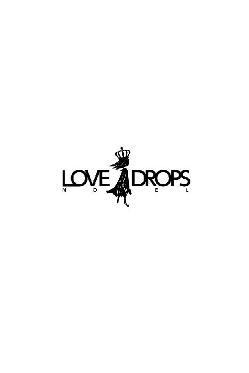

| 恋編み―緑の瞳に魅せられて (らぶドロップス) | |
| ひらび久美 | |
| 株式会社パブリッシングリンク (2013) | |

恋編み─緑の瞳に魅せられて
ひらび久美
第一章 留学生は族長の息子
「ホント助かった！ やっぱり新谷さんは頼りになるよ。ありがとう！」
学生食堂の隣の席から佐藤司に爽やかな笑顔で言われ、新谷七海はつられて微笑んだ。
（やっぱりステキな笑顔）
貸していた比較文化論の講義ノートを受け取って、帆布のバッグに入れると、彼の顔を控えめに見上げながら、できるだけ可愛く言う。
「佐藤くんの頼みなら、いつでもＯＫだよ」
「じゃあさ、ついでに教えてほしいことがあるんだけど」
急に真面目な顔をされ、七海の鼓動が速くなる。司は迷うように天井を見上げたが、視線を七海に戻し、唾を飲み込んで言った。
「あのさ、彼氏いるのかな......」
司の真剣な表情に、七海の頭の中で歓喜と祝福の鐘が鳴る。「いないよ」と答えかけたとき、司が照れたように頭をかいて続けた。
「新谷さんの友達の山根沙也香さん。彼女、フリーかな？」
（えーっ、何それ......）
鐘が転がり落ちてぐわんぐわんと耳障りな音を立てた。七海はがっくり落ちそうになる肩を強ばらせ、勘違いしたことを気づかれないように、素早く答える。
「フリーだよ」
「そっか。ありがとう！ 新谷さんってホント気さくだよね。また講義ノート頼むよ。それじゃ！」
そう言うと、司はいそいそと食堂を出て行った。その後ろ姿を見送り、七海は小さくため息をつく。比較文化論の講義が一緒で、人なつこい笑顔が魅力的な司のことは、何度か話しかけられて会話をするうちに、いいなと思うようになっていた。だけど、彼にとって七海は、講義ノートを借りたり、恋愛相談したりするだけの女だったらしい。
（あーあ、年齢イコール彼氏いない歴脱出ならず）
知らず知らずため息が深くなる。
「サバサバしてる」「並の男より頼りになる」「黙っていれば可愛いのに」
そのどれも、いわゆる男友達から言われた言葉だ。そんな風に言われるくらいだから、やっぱり彼らにとって七海は友達以上の存在にはならないのだろう。
（問題なのは三人の兄に鍛えられた性格？ それとも一七八センチある身長？ 司くんともあんまり身長差なかったしなぁ......）
空になった紙コップをくしゃっと握りしめたとき、隣のテーブル席から女子の話し声が聞こえてきた。
「やだ、テラス席にシェイがいるよ」
「あ、ほんと。一人で本なんか読んじゃって」
二人の視線の先を追うと、一月中旬で外も寒いというのに、食堂のテラス席に一人で座って分厚い本を広げている男性がいた。中央ヨーロッパの小国、ベルジェンブルクからの留学生、シェイ・カーフェンだ。
彼女たちの話し声が続く。
「お高くとまってて、ヤな感じよね」
「そうそう！ この間なんか映画に誘ったら、〝日本の女子大生は親に金を出してもらっているのに、遊んでばかりいるのか〟って言われたんだよ」
「わっ、サイテー」
「真紀も何か言われた？」
「うん。フランス語を教えてもらおうとしたら、〝三年も勉強して、こんなこともわからないのか〟って言われたー！」
「うわー、超ムカツク。自分は英語も日本語も堪能だからって、誰もが普通に語学のセンスを持ってるなんて思わないでほしいね」
「ホント、ホント。いくら顔や雰囲気がよくても、あんな頭ガッチガチの嫌味野郎、男として最低！ 頼まれたって付き合ってなんかやんない」
あまりにひどい言われように、七海は思わず苦笑した。
いつの間に彼はそんな風に言われるようになっていたんだろう。確かに最近は彼女たちの言う通り、周囲に壁をつくって誰も寄せ付けようとしない感じだけど......。
初めて会ったときの彼は、とても紳士的だった。あれは七海が、一年間の交換留学を終えてオーストラリアから帰国したばかりの八月下旬のことだった。
「重たっ......」
七海は大学の図書館で、貸し出し手続きを終えた本を帆布のバッグに入れて、両手で抱えた。九月から始まる三回生の後期の授業に備えて、参考文献を八冊借りたのだが、その重さに一度にまとめて借りてしまったことを後悔する。
図書館の手動ドアを引こうと荷物を抱え直したとき、後ろから伸びてきた手が重いガラス扉を引いて大きく開けた。
「どうぞ」
振り返ると、優しそうな深い緑色の瞳と目が合った。その宝石のような美しさに魅入られ、息をするのも忘れて見とれていると、ドアを押さえていた彼が穏やかな低い声で言った。
「お先にどうぞ」
「あ、ありがとう」
我に返った七海は、見ず知らずの人を惚けた顔で見つめてしまったことが恥ずかしくなって、ずり落ちかけたバッグを抱え直すとあたふたとドアの外へ出た。続いて図書館から出た彼は、軽く会釈をして歩き出したが、思い直したように足を止め、くるりと振り返って七海に近づいてきた。漆黒の髪に縁取られた彫りの深い顔立ちが、ほれぼれするほど美しい。
「持ちましょうか」
男性が流暢な日本語で言って右手を差し出したので、七海はぽかんと彼を見上げた。
「本。重そうだから」
そう言うと、彼は七海のバッグの持ち手に手を伸ばした。
（え？ 荷物を持ってくれるってこと!?）
男性に気遣われるという初めての出来事に戸惑っていると、彼は七海が両手でどうにか抱えていたバッグを、右腕一本で持った。
「勉強家ですね。どこまで持って行きましょうか」
「あ、あの、食堂まで......」
男性が歩き出したので、七海はあわてて後に続いた。背の低い男子学生を見下ろしてしまうことがよくある七海だが、彼は見上げなければいけない。颯爽と歩く彼の姿を追いかけながら、一九〇センチはあるだろうな、と七海は思った。
「ここでいいですか？」
学生食堂に入ると、彼は窓際の空いているテーブル席を示した。
「あ、はい。ありがとうございます」
彼は椅子の上に七海のバッグを置くと、「それじゃ」と言って、食券コーナーに向かった。お金を入れてボタンを押し、腰をかがめて出てきた食券を取る。そんななんでもない動作でさえ、彼がすると美しい。
（誰だろう......）
名前くらい訊けばよかった、と思ったとき、背中を軽く叩かれた。振り返ると、第二外国語が同じドイツ語の山根沙也香と西村倫子がいる。
「七海、お帰り。いつ日本に帰ってきたの？」
「先週末だよ」
「一緒に座ってもいい？」
「うん」
二人に続いて七海も腰を下ろした。目は自然と彼を探し、開放中のドアを抜けてテラス席に向かっているところを見つけた。
「ね、さっき見てたんだけど、七海ってシェイと知り合いなの？」
倫子がテーブルに身を乗り出してきた。
「あの人、シェイって名前なんだ」
七海の返答に、倫子が肩を落とす。
「なぁんだ。七海って男子と仲いいから、てっきり彼とも友達なのかと思ったのに」
「まさか。さっき初めて会ったんだよ。あの人、どういう人なの？」
「さすがの七海も興味があるんだ」
倫子にからかうように言われて、七海は「違うよ」と両手を振った。
「荷物を持ってくれたんだよ。私を女性扱いしてくれるなんて、珍しい人だなって思って」
「やっぱり紳士ぃ、カッコイイー」
「ホント。その辺の男子とは雰囲気も違うし、さすが少数民族の族長の息子よね～」
倫子と沙也香が手を取り合って言う。
「少数民族の族長の息子？」
不思議そうに首をかしげる七海に、倫子が説明を始める。
「彼ね、シェイ・カーフェンって名前で、ベルジェンブルク出身なの」
倫子の言葉に、七海は頭の中で中央ヨーロッパの地図を思い浮かべた。
「ベルジェンブルクって、確かドイツとフランスに挟まれたすごく小さな国だよね？」
「そう。向こうの大学を卒業してから、今年の四月に、一年間の予定でうちの大学の国際学部日本研究学科に留学して来たの」
沙也香が続ける。
「私、同じ講義がいくつかあったから、何度か話したことがあるんだけど、彼はベルジェンブルクにだけ残るゲルト族っていう少数民族なんだって。お父さんが族長で、彼は跡取りの長男なのよ」
「へー、そんな人がうちの大学に来てるんだ」
オーストラリア留学中にアボリジニと交流したが、族長やその家族と会う機会は持てなかったので、少数民族でしかも族長の息子という特別な地位の人が身近にいて驚いた。
「〝他文化が流入する中、自分たちの伝統をどう維持するかを考えるために、西洋文化と日本文化の共存について学びに来た〟って言ってたよ」
「ふうん」
「シェイってばすごいのよ。自分たちのゲルト語に加えて、公用語のドイツ語とフランス語もペラペラだし、うちの大学に来る前に日本語学校に一ヵ月通ったから、日本語も堪能なの。当然英語もできるし」
「それはすごいね」
感心してテラス席を見ると、いつの間にか彼は三人の女子大生に取り囲まれていた。
「シェイもランチなの？」
「私たちもなんだー」
「一緒に座っていい？」
みんな明るい茶髪にふんわりしたパーマをかけ、メイクも派手で華がある。一方の七海は、オーストラリアで伸ばしっぱなしにしていた黒髪は、大した手入れもされないまま背中の中程まで届いており、メイクもすぎるほどナチュラルだ。
私があの中に混ざると違和感あるだろうな......と苦笑しながら、七海は言った。
「それであの容姿じゃ、女子がほっとくわけないか」
「そうなの。いつも女子に囲まれていて、私、なかなか近づけないのよねー」
残念そうに言う倫子の言葉を聞きながら、七海がもう一度テラス席を見ると、彼は押しの強い女子大生たちに辟易しているのか、眉間にしわを刻んでいた。
それからもキャンパスで時折彼の姿を見かけた。背が高い上に、凛とした高貴な雰囲気のある彼は、どうしても目につく。とはいえ、直接話しかける機会も話題もないまま、あれから四ヵ月以上が過ぎ、後期試験真っ只中の一月中旬になっていた。
〝底冷え〟と称される、盆地の京都特有の冷たい空気の中、背筋をぴんと伸ばして腰掛けている彼からは、寒さはみじんも感じられない。肩に届きそうな長めの黒髪、伏せられた緑の瞳、高貴な印象を与える真っ直ぐに伸びた鼻梁、意志の強そうな口元。
（やっぱりキレイだなあ。目の保養ができちゃった）
そう思った瞬間、シェイが顔を上げたので、七海は反射的に目をそらし、さりげなく立ち上がって肩にバッグをかけた。そうして紙コップをゴミ箱に捨て、食堂を出ようとしたところで、ふと足を止めて族長の息子の姿を盗み見た。
（そうだ、いいこと思いついた！）
その足で図書館に向かう。七海は留学中にアボリジニ文化センターなどを訪れて、少数民族の地位向上に関心を持つようになっていた。ゼミの教授から、そろそろ卒業論文のテーマを決めるように、と言われていたことを思い出し、ベルジェンブルクの少数民族の地位向上をテーマにしよう、と思ったのだ。
図書館の蔵書検索システムを使って、ベルジェンブルクやゲルト族の本を探し、いくつか書架から抜き出すと、閲覧机に着いた。今日は家庭教師のアルバイトもないので、時間を気にせずゆっくり本が読める。
まず開いた『ゲルト族の歴史』によると、ゲルト族は青銅器時代に中部ヨーロッパに広がって独自の文化を発展させた、とある。その後、幾度となく他民族の支配や迫害を受けた彼らは、被支配層として他国に吸収されていき、現在ゲルト語を話す人々がいるのはベルジェンブルクのみで、それも同国の全人口の一〇％──十万人──にすぎないという。そのうち九割が都市に出て現代的な生活を送っており、残り一割の一万人が、ビレロイと呼ばれる丘陵地帯の村で、現族長を中心として伝統的な自給自足生活をしているらしい。
（ふうん。独自の言語を持って伝統的な生活スタイルを維持しているなんて、アメリカのアーミッシュみたいな感じかな？）
次に『ゲルトの文化』という本を開いて、七海は目を見開いた。
（わぁ、すごくキレイ！）
少し退色したカラー写真に映し出されているのは、レースで編まれたテーブルクロスだった。バラの花や葉などが細かく複雑に編まれており、古い写真なのに、その繊細な模様はうっとりするほど美しい。解説によると、ゲルト族の女性はブドウ、バラなどをモチーフに伝統的にクロッシェレース──かぎ針編みレース──を作っており、十九世紀後半の飢饉のときにはそれを輸出して外貨を稼いだという。
（これいいかも！）
七海はその本を借りると、急いで学生食堂に戻った。テラス席には相変わらずシェイが一人で座っている。
「こんにちは。ここ座ってもいいですか？」
七海はシェイの顔を覗き込むようにして言った。
「席はほかにも空いている」
初めて会ったときの紳士的な印象が嘘のように、シェイの返答は目つき同様冷たかったが、七海はひるむことなく続けた。
「私、国際学部比較文化学科三回生の新谷七海と言います。ゲルト族のことについて話を聞かせてください」
そう言うと、返事も待たずにシェイの隣の席に腰を下ろした。椅子の冷たさに身震いしたとき、シェイが視線をそらして言った。
『──誰もいいとは言ってないぞ。厚かましい女だな』
彼が子どものようにブツブツとゲルト語で文句を言ったので、高貴なイメージが音を立てて崩れ、七海は思わず吹き出した。ドイツ語を標準語に喩えるとゲルト語は大阪弁のようなものだと言われる通り、第二外国語としてドイツ語を三年間勉強した七海には、その意味がわかってしまったのだ。シェイが怪訝そうに眉を寄せたので、七海はあわてて両手を振って日本語で言った。
「笑ってごめんなさい。でも、言いたいことがあったら日本語で言ってくれる？ せっかく日本に留学してるんだから」
シェイが無言で手元の本に視線を戻したので、七海は好奇心に駆られて覗き込んだ。そのページの半分を占める赤茶けたカラー写真では、昭和を彷彿とさせる造りの家の中で、いかにも熱血そうな父親と息子がちゃぶ台を挟んで対峙している。
「わっ、何このアニメ、いつの？」
「見るな」
シェイが本を閉じようとするのを、七海は強引に遮って覗き込む。
「えっと、これはドイツ語？ ちょっと違うね......ゲルト語の本かな？」
勝手にページをめくると、太い眉毛にだんご鼻の侍と金髪の外国人女性が寄り添って立つマンガの表紙絵があった。
「これ、ずいぶん古い本なんじゃない？ 今の日本のマンガやアニメはもっと洗練された絵だよ。みんなもっと手脚が長いし、あごもほっそりしてる」
「見るなと言っただろう」
シェイがムッとして本を持ち上げたので、七海は小さく舌を出して「ごめんなさい」と言った。
「用があるならさっさと言え。親の金で大学に通いながら遊びほうけているキミたち日本の女子大生と違って、こっちは奨学金で勉強しているんだ。一分一秒たりとも無駄にしたくない」
わ、さっきの女の子たちの言ってた通りだ。七海は肩をすくめて言った。
「じゃ、本題に入るね。私、〝少数民族の地位向上〟を卒論のテーマにしようと思ってて、あなたたちゲルト族のことを少し調べてみたんだ」
七海が見ると、シェイはまた本を開いて視線を落としている。
「そうしたらね、すごくステキなクロッシェレースの写真があって。ほら、見て」
七海はシェイの本の上に、さっき図書館で借りた本を広げて置いた。シェイはちらりと目をやると、さも鬱陶しそうにレースの本を押しのけた。
「十九世紀後半のジャガイモ飢饉では、これを輸出して外貨を稼いで危機を乗り切ったんでしょ。今でもこういうのが作られているんだったら、これをフェアトレード商品として販売すれば、ゲルト族も豊かになり、地位向上につながると思うの。どう？ いいアイディアだと思わない？」
シェイは大きなため息をつくと、自分の本を閉じて椅子に背を預けた。
「キミはゲルト族について多少の知識はあるのかもしれないが、真実を何もわかっていない。私たちは自分たちのことを貧しいとは思っていない。中世以来続けてきた自給自足生活に満足している。それに、キミのような物の見方を〝上から目線〟と言うんだろう？」
言われて七海はハッとした。自給自足の慎ましやかな生活、石造りの質素な住居、馬に乗っての移動......そんな情報から、いわゆる少数民族のイメージとして持たれがちな貧困を連想していた。その思い込みが恥ずかしくて、七海の頬がほてる。
「べ、勉強不足、だったかも......」
「三回生だと言ったな？」
「ええ」
「三年も大学に通ってその程度の理解力しか身につかなかったんじゃ、ご両親はさぞがっかりするだろうな」
その言いぐさにはさすがに七海もカチンと来た。
「じゃあ、何？ あなたはその古臭いマンガの紹介本を読んで、日本文化をわかったつもりになってるってわけ？」
「ふ、古臭い？」
シェイの頬に赤みが差した。
「失敬な。この本は私にとってはバイブルのようなものだ。これを読んで日本に興味を持ったんだ。明治維新以降、日本は西洋の制度や文化を受け入れながらも、着物や茶道、剣道などの独自の文化や伝統を維持している。マンガにもその片鱗がうかがえる。この『開国恋物語』はかつての士族がアメリカ領事の娘と恋に落ちるという、古来の伝統と新しい文化の共存を示す好例ではないか！」
シェイが拳でテーブルを叩いたので、七海は飛び上がりそうになった。さっきまで小馬鹿にしたような冷たい表情で七海を見下ろしていた彼が、声を荒げている。その様子に驚いて目を丸くしていると、シェイがさらに頬を赤らめて言った。
「す、すまない。大人げないことを......」
赤くなった頬を隠すように手で口元を覆っている姿がなぜか憎めず、七海は小さく笑って言った。
「ね、京都国際マンガミュージアムには行った？」
「いや」
突然話題を変えられて、シェイが戸惑うような表情をした。
「日本初のマンガ博物館兼図書館だよ。マンガに興味があるなら行ってみたらどう？ 建物も雰囲気がよくて見応えがあるらしいよ。昭和四年建造の小学校だそうだから」
「ふむ」
シェイが考え込むように腕を組んだ。その端正な顔でマンガが好きという意外なギャップに、七海は俄然興味が湧いてきた。
「ね、一緒に行こうか。実は私も行ったことないんだ」
「ちょっと待て」
「いいじゃない、遠慮しないでよ」
「遠慮など」
「私だってゲルト族のことを教えてほしいもん。持ちつ持たれつ、ってやつよ」
「いや、だから」
「あ、持ちつ持たれつってわかんない？ ギブ・アンド・テイクってことだよ」
「そういう問題ではない」
「じゃ、どういう問題？」
シェイは大きくため息をついて言った。
「ゲルト族では結婚前の男女が二人きりで出かけることを禁じている」
「そうなんだ」
七海は驚いて目を見開いた。そんなこと、本には書いてなかった。
「じゃあ、私が誰か友達を誘ったら大丈夫だよね？」
七海の言葉に、シェイはしぶしぶ答えた。
「まあ、一対一でなければ......」
「じゃ、決まりね。今度の日曜日でいいかな？ 朝から行きたいから烏丸御池駅で十時に会いましょ。それともあなたの家まで迎えに行った方がいい？」
目をキラキラ輝かせる七海に、シェイはため息をついて言った。
「烏丸御池駅ぐらい一人で行ける」
「そう。じゃ、二日後に」
そう言うと、七海は立ち上がって学生食堂を後にした。現族長の息子に直接話を聞けば、古い文献の情報ではなく、リアルな生情報が手に入る！ いい卒論が書けそう、と七海は思った。
日曜日に烏丸御池駅に行くと、地上出口を出たところに、ひときわ背の高い男性が腕を組んで立っていた。その険しい表情に七海が腕時計を見た瞬間、デジタル表示が十時〇分に変わった。
「おはよう。早くに来てたの？」
「迷わないように余裕を持って出たら、早く着きすぎたんだ」
「迷う？ 道路が東西と南北に真っ直ぐ走る京都で、どう迷うの？」
七海が目を丸くすると、シェイがムッとしたように言った。
「似たような建物ばかりで方向感覚がなくなるんだ。それに、森や川の匂いがしない」
「そんなもんなの？」
趣のある町屋を似たような建物呼ばわりするシェイに、七海は呆れたように肩をすくめた。
京都で育った七海と、森と丘の国で育った彼とは、感覚が違うようだ。
ふと七海は、シェイが着ている深い緑色のウールのコートに目を留めた。やや着古した感があるそれは、彼の緑の瞳と黒髪を引き立て、背が高くしなやかな体によく馴染んでいる。手触りもよさそうだ。
「暖かそうなコートね」
「いわゆるゲルトの民族衣装だ」
「え、これがそうなの？ 襟の刺繍もキレイだし、銀のボタンもおしゃれー。それにすごく柔らかそう」
思わずコートの背中を撫でると、シェイが驚いたように飛び退いた。
「何をする！」
「あ、ごめんなさい。あんまり手触りがよくて」
七海はもうしません、というように両手をあげた。このぐらいのスキンシップ、男友達とは普通なのに、シェイの反応がイマイチ掴みきれない。
「沙也香たち、遅いなー」
七海が腕時計を見たとき、ちょうど沙也香が司と地上出口から姿を見せた。
「おはよう」
沙也香が照れたような笑顔で手を振ってきた。二日前、沙也香を誘ったら、彼女が付き合い始めたばかりだという司も誘ったので、結局四人で行くことになってしまったのだ。二人が並んで歩く姿を見ると、胸がチクリと痛む。
七海は、大きな歩幅で歩き出したシェイに急ぎ足で並ぶと、司の方を見ないようにして訊いた。
「マンガ好きで京都に留学してるのに、どうして今までマンガミュージアムに行かなかったの？」
「大学に入ってすぐ、派手な女子大生に〝行ってみたいところがあればどこでも案内してあげる〟って話しかけられたから、〝マンガミュージアムに行きたい〟と答えたら、戸惑ったような顔をされたあげく、笑われた」
シェイが苦虫を噛みつぶしたような顔で答えた。
「あー、言う相手が悪かったかも」
「どういうことだ？」
八月に初めて彼を見たとき、彼を取り巻いていたメイクもファッションも華やかな女の子たちの姿を思い浮かべながら、七海は答えた。
「きっと彼女たちは金閣寺とか清水寺とかいう返事を期待してたのかも。それか、映画や買い物」
「ふうむ。これが日本文化特有の本音と建て前というものか」
シェイが考え込むように言ったので、七海は苦笑した。
「難しく考えすぎだよ。あなたの村でも、若い女性は映画とかショッピングの方が好きでしょ？」
「キミはいったいどんな資料を読んだんだ？」
「え？」
「ビレロイで伝統的な生活を送る女性たちはそのようなことはしない」
「そっか......」
またもや不勉強さを露呈してしまい、七海は小さく肩を落とした。
「ま、そうはいっても、ビレロイには日本でいう高校までしかないから、大学へ行くために村を出てドイツ語圏やフランス語圏に行った若者は、そういうことも好きだけどな」
七海はホッとして話を続けた。
「そうでしょ？ あなたはどうなの？」
「私は族長の息子だ。そんなことはしない」
気難しそうに眉間にしわを刻むシェイに、七海はからかうように言う。
「あなただって村を出て都会の大学に行ったんでしょ？ 羽目を外したんじゃないの？」
「都会の文化に触れた若者は、どうしてもそうなりがちだが、族長の跡取りである私までもがそうなれば、いったい誰がゲルト文化を守るというんだ」
厳しい口調で言われ、七海はしゅんとなった。卒論のテーマにしたいと思っていたけど、ゲルト文化は考えていたよりずっと複雑そうだ。
シェイとの会話が途切れると、後ろから司の楽しそうな笑い声が聞こえてきた。七海はいら立ちを覚えて顔をしかめたが、幸いマンガミュージアムにはすぐに着き、司と沙也香とは別行動になった。二人は先に広い芝生の庭を散策するのだそうだ。
（熱い二人には寒さなんて関係ないのね）
七海は険しい目つきで頬を膨らませた。
ミュージアムでは五万冊ものマンガを自由に読むことができ、それらは館内の壁中に広がる総延長二〇〇メートルの〝マンガの壁〟に配架されている。
その壁を見たシェイの緑の瞳が小さくきらめき、七海は思わず笑顔になった。それに気づいた彼がふてくされたように言う。
「ビレロイでは読書は大切な娯楽なんだ。村の図書館には日本のマンガもある。キミがバカにした古い熱血スポーツマンガから、幕末の剣士が主人公のものも、銭湯にタイムスリップした古代ローマ人が繰り広げるコメディもある。日本ではいろいろなものがごく当たり前に取り入れられていて、とても不思議に感じたんだ」
「あれはバカにしたつもりじゃなかったんだけど。でも、笑ったことは悪かったと思う。もう笑わないから、好きなだけマンガを堪能してね。外国語に翻訳されているものもあるらしいし、外国人客もいるみたいだよ」
そう言うと、七海は高校時代にハマった懐かしい恋愛マンガを書架から抜き出し、行儀悪いかなと思いつつも、ほかの若い女性に混じって、踊り場の四角い窓に面した階段に腰を下ろした。
（学校で、しかも階段でマンガが読めるなんて夢のよう！）
そうしたちょっとした高揚感を抱きながら、全六巻のマンガを読み終えた。最後のハッピーエンドでこぼれた涙を拭ったとき、すぐ横に男性が腰を下ろした。他人にしては近すぎる距離に七海が警戒して見上げると、横にいたのはシェイだった。よくよく見ると、平静を装っているが、ワクワクしているのか頬がかすかに紅潮している。
「どうしたの？」
「まだまだ読み足りないが、そろそろ腹が減ったな、と思ってね」
言われて腕時計を見ると、すでに一時を回っている。
「ほんとだ。夢中になりすぎちゃった。沙也香たちにお昼どうするのか訊いてみるね」
七海が携帯電話を取り出そうとバッグを探ったとき、シェイがバッグの上からそっと七海の手を押さえた。
「わざわざ自分を傷つけるようなことをしなくてもいいと思うが」
七海が顔を上げると、シェイがいたわるような目をしていた。
「──どういう意味？」
「ま、余計なお世話かな。いずれにしろ、あの二人は二人きりの方がいいと思うぞ」
そう言うとシェイは立ち上がった。私の気持ち、そんなにバレバレだったのかな、と思いながら、七海も立ち上がり、照れ隠しに笑いながら言った。
「そうだよね。じゃ、私たちはカフェにでも行こうか」
「そうしよう」
二人で階段を下りて、ミュージアム内のカフェに行った。テラス席でランチセットを食べながら、やっぱり沙也香たちと別行動にしてよかった、と七海はしみじみと思った。そうでなければ、大好きなふわふわオムライスの味もさっぱりわからなかっただろう。
食後のコーヒーを飲みながら、シェイが言った。
「さっきマンガを読みながら泣いていたけど、何を読んでいたんだ？」
「高校時代にハマった少女マンガだよ。恋人がいる男の子を好きになっちゃった女子高生の話。身を引いたその女子高生に、年上の恋人とすれ違い始めた彼が次第に惹かれていくんだけど、その過程が切なくて。最後のハッピーエンドのところでは、やっぱりまた思わずうるっときちゃった。でも、泣いてたって言うほど涙は流してなかったと思うけど」
「いや、あれはひどい顔だったぞ。目からも鼻からも滝のように......」
真剣に話していたのに茶化されたような気がして、七海はムッとする。
「は？ そんなわけないでしょっ」
七海の険しい表情を見て、シェイが決まり悪そうに言った。
「嘘だ」
「何それ、性格ワルー」
「そうだな。陰でみんなにそう言われるのも仕方ないか」
そう言って目を伏せた彼を見て、七海はハッとした。彼の不器用な嘘は、どうやら七海の気持ちを紛らわせるためのものだったらしい。七海は何気なく返した言葉で彼を傷つけてしまったことに気づき、あわてて言った。
「私のはあなたの嘘に対する冗談のつもりで言ったんだよ」
「すまない、真剣に取りすぎた」
あんな嘘を言うくらいだから冗談も通じると思ったのに、ゲルト族って真面目な人が多いのかな、と思いながら、七海は続けた。
「まあ、確かに陰口は気持ちのいいものじゃないよね。あなたは見た目から、派手な女の子に寄ってこられちゃったけど、そういう女子には遊んでいる子も多いんだよ。気にすることないよ。性格や考え方が合わない相手だったってだけ」
「そうかな」
シェイの表情がわずかに緩んだので、七海は続けた。
「そうだよ。むしろ、あなたは相手に言いたいことが言えてうらやましい。私なんて、講義ノートを借りたがっていただけの男子に持ち上げられて、勘違いしていい気になってたもん。今となっては断ればよかったって思ってる。ホント、ばかばかしい」
司のことを思い出して、七海は自嘲気味に言った。
「キミは私にはずけずけと物を言っているように思うけどな」
「だって、最初はあなたの方が失礼だったでしょ。あなたったら私が話しかけたとき......」
「シェイだ」
「え？」
「シェイと呼んでくれ」
彼が穏やかに微笑んだ。
「わかった。じゃ、私のことは七海って呼んでいいよ」
うちの長男みたいに優しくて、次男みたいに冷静で、三男みたいに不器用な人だな、と思いながら、七海も微笑んだ。
それからまた別行動になり、七海は好きなマンガを読んだり、校長室の古い調度品や火の鳥のモニュメントを見たりして過ごしていると、あっという間に閉館時間になった。沙也香にメールを送ったら、〝とっくにミュージアムを出て町屋カフェでお茶してる〟と返信があった。
「また二人きりになっちゃったね」
「まあ......仕方ない」
シェイが諦めたようにため息をついた。カフェでは七海を気遣って二人で過ごしてくれたが、真面目な部族の族長の息子にすれば、やはり気が咎めるのかもしれない。
七海が申し訳ない気持ちで少し遅れて歩いていると、駅に向かって前を歩いていたシェイが、ふと振り返って言った。
「今日は楽しかったよ、ありがとう」
シェイが笑顔を見せたので、七海は小走りで彼に追いついた。
「そう言ってもらえてよかった」
「日本のマンガは思っていたのとだいぶ違っていたな」
「どんな風に？」
「近未来を舞台にしたものもあって、科学の進歩を感じた」
「ふんふん、それから？」
七海が見上げると、シェイは眉間にしわを刻みながら言った。
「それから......なんというか、退廃的だな」
「退廃的？」
今度は七海が眉を寄せる。
「結婚していないのに男女が......ほら」
シェイが咳払いをした。
「あはは、そうだね。刺激が強すぎた？」
自分が経験ないことを棚に上げて、七海はいたずらっぽく訊いた。
「そ、そんなことはない。私はちゃんと風習に従っているが、それなりには......」
「それなりには、何なのよ？」
これまでの冷たい言動の仕返しとばかりに七海が突っ込んで訊くと、シェイが咳払いをして目をそらした。なんとなく気まずくなって黙ったまま歩いていると、すぐに地下鉄の駅の入り口が見えてきた。
「マンガに夢中になりすぎて、結局、ゲルト族のことをあまり訊けなかったね」
そう言って見上げた七海を、シェイも見ていた。
「卒論のテーマ、変えたらどうだ？」
「どういう意味？」
「別に私たちにこだわる必要はないだろう。それほど日本と結びつきが深いわけでもないんだから」
「そんなのわからないじゃない。これから景気が回復したら、きっと日本からの観光客だって増えるだろうし、経済協力とか文化交流で新しい結びつきが生まれるかもしれないよ」
「どうかな」
「なんでそんなに悲観的なのよ」
「悲観しているわけじゃない」
「じゃあ何なの？」
「何でもない。好きにしろ」
そっけなく言うと、シェイはそのまま一人で歩き出した。
（何よ、感じ悪ぅ）
七海はその後ろ姿にべーっと舌を出すと、地下鉄の駅に向かって階段を下り始めた。
第二章 心を溶かす者
日本研究学科の講義の中でも特にシェイが好きだったポップカルチャー研究の試験が終了し、解答用紙を集めた講師が講義室を出て行くと、シェイは荷物を革のバッグに入れて立ち上がった。
いつものように一人で食堂に向かい、ランチ定食──今日はショウガ焼き定食だ──を買ってテラス席に着くと、一人で黙々と食べた。この寒空の下、彼を追いかけてテラス席まで出てくる物好きはもういない。留学生も多い大学だから、外国人が珍しいわけでもないのに、とにかくシェイは女子大生によくまとわりつかれた。最初は日本のことをいろいろ教えてくれるのでありがたかったが、次第に彼女たちが見ているのはシェイの内面ではなく、外見であるらしいことに気がついた。風習上の問題で女性と二人きりで出かけられない、と何度説明しても、しつこくデートに誘われるし、中身のない会話に合わせるのも面倒になってきた。それで無愛想にしていたら、最近ではこの通り一人寂しくランチというわけだ。
すっかり冷めてしまった豆腐の味噌汁を飲み終えてふと顔を上げると、七海が両手でトレイを持ったまま、肩でテラス席へ続く扉を押して開けているのが見えた。「寒っ」と言いながら肩をすくめ、シェイに近づいてくる。
「あ、もう食べ終わっちゃったんだ」
「ああ」
シェイは面倒なやつが来た、と思いながら、そっけなく言った。
「よくこんなところに一人でいられるね。寒すぎて心まで凍えちゃうよ」
「一人が好きなんだ」
「私は嫌だな。ランチを食べる間、話し相手になってよ」
「私は話し相手などいらん」
「私がほしいの。こんな所で食べたらせっかくの担々麺が冷麺になっちゃう。中に入ろうよ」
七海にコートの袖を掴まれ、シェイはしぶしぶ立ち上がった。
「キミは本当に強引だな」
「よく言われる～」
七海は屈託のない顔で笑うと、シェイとともに室内の暖かい食堂に戻った。
「ついでに〝その辺の男よりも男らしい〟とか言われるよ」
七海が席に座ると、その向かいに腰を下ろしながらシェイが言った。
「女性にそんな風に言うのは失礼じゃないか？」
その返答は七海の予想していたものとは違ったらしい。一瞬きょとんとしてから、また笑って言った。
「言われ慣れちゃった」
七海はまだ熱い担々麺に息を吹きかけ、話を続けた。
「うちには兄が三人もいてね、親戚にも男の子が多いから、揉まれて育つうちに逞しくなっちゃったみたい」
そう言ってあっけらかんと笑う七海を見て、シェイは弟のヴィリーのことを思い出した。よく笑い、物怖じしない弟。彼と同じような笑顔で、七海がペラペラとしゃべり始める。
「うちのお兄ちゃんたちの名前、おもしろいんだよ。一人目は〝勇一〟。二人目は女の子が欲しかったのに男の子が生まれて、次こそはっと〝勇次〟。三番目も男の子だったから、男の子はもうたくさんってんで〝勇多〟」
「漢字には意味があるんだったな」
「そうだよ」
「〝七海〟にはどういう意味があるんだ？」
「世界の七つの海を表すんだけど、うちの親は、大海を自由に旅するような活発で明るい女の子に育ってほしくて付けたって言ってたよ」
「その通りに育ったわけだ」
自由な性格の七海がうらやましくて、ぽつりと言うと、七海が嬉々として問い返した。
「それって誉めてくれてるの？」
「まあそういうことになるな」
何も感じないように心を凍らせていたはずなのに、自由に振る舞える弟や七海、それにごく普通の大学生をうらやんでいる自分に、シェイは戸惑いを覚えた。
「ありがと」
七海はそう言うと、照れ隠しに担々麺をすすった。シェイが本に視線を落とすと、七海が体を寄せて覗き込んできた。
「今度は何を読んでるの？」
「む」
距離の近さに内心うろたえながらも、シェイは七海の方に本を傾けた。分厚い日本語の文法書で隠して読んでいた、明治時代を舞台にした剣客のマンガを見て、七海が吹き出した。
「授業中じゃあるまいし、隠しながら読んでどうするのよ」
「うるさい。マンガミュージアムに行ってみたいと話した女子大生に、〝イメージと違う〟って笑われて以来、気を遣っているんだ」
意志に反して勝手に顔が赤らんでいく。七海といるとどうも調子が狂う。ちらりと見ると、当の本人は一生懸命笑いをこらえていたが、とうとう耐えきれなくなって声を上げて笑い出した。
「そんなに笑うな」
ムッとするのが余計におかしいらしく、テーブルを叩いて涙目になりながら笑っている。
「失礼なやつだな。勝手にしろ」
ゲルト族のことなど、何も教えてやるものか。そう思って立ち上がると、七海にセーターの袖を掴まれた。
「ご、ごめんなさい。きょ、今日こそは、ゲルト族のことを教えて」
「知るか」
シェイは腰を下ろしたものの、ムスッとして言った。それを見て、七海はしおらしい顔をする。
「ごめんなさい、反省してます」
「ふん」
「本当にごめんってば。あ、ねえ、ここでしか手に入らない超貴重な金平糖をあげるから、許してよ」
「コンペートー？ 何だ、それは」
「十六世紀にポルトガルから日本に伝わった砂糖菓子だよ。五百年近く前に受け入れた西洋の食文化の一つが、日本に溶け込んだことを証明するお菓子」
七海の大げさな物言いにシェイの好奇心がくすぐられるが、ここで簡単に飛びつくのは腹立たしい。
「物で釣ろうというのか」
「うん」と言った直後、七海はあわてて否定する。「あ、違う、えっと、おいしいから」
脈絡の感じられないことを言って鞄をゴソゴソ漁った七海は、手のひらサイズの半透明の袋を取り出した。尖った角だらけの淡い黄色の小さな物体がぎっしり入っている。
「この黄色いのが金平糖だよ。これは京都の超有名な老舗の金平糖なの。新発売の柚子味。甘い物でも食べて機嫌直してよ。ほら、手を出して」
シェイがしぶしぶ左手を差し出すと、七海は小袋の口を縛っていた緑色のワイヤーリボンを外し、袋を傾けた。シェイの手のひらを転がった金平糖が落ちそうになり、七海はあわてて彼の手に自分の手を添える。彼女の体温を感じて、シェイの顔がわずかに赤くなる。
「あれ、顔赤いよ。風邪ひいた？ 熱でもあるの？」
七海に顔を覗き込まれて、シェイは反射的に背をそらし、金平糖を無造作に口に放り込んで、ガリガリと噛み砕いた。
「あーっ、ちょっと、ちゃんと味わって食べてよ」
七海の不満げな言葉を聞き流し、シェイは無愛想に言った。
「訊きたいことがあるなら、さっさと訊け」
その口調にムッとしながらも、せっかくの機会を逃すまいと七海は急いで質問を考えた。
「えっと......通貨はフランだったっけ？」
「ユーロだ。ベルジェンブルクも十年前にEUに加盟した」
そんなことも知らないのか、と言わんばかりにシェイは首を振った。
「じゃあ、気候は......？」
「西岸海洋性気候。ガイドブックにだって載っている」
「むー。じゃあ、主要産業は？」
「私たちの村では農業と牧畜、手工芸品。ちなみにベルジェンブルクの主要産業は、観光業、金融業、情報通信産業。地理的にヨーロッパの中心にあるから、物流の要所になっている」
やれやれ、とシェイはため息をついた。
「そんな知識でよく卒論を書こうなんていう気になったな」
これ以上付きまとわれないようにあえて厳しい口調で言うと、七海はうつむいて、きゅっと下唇を噛みしめた。ちょっと言い過ぎたかな、とその鳶色の瞳を覗き込んだとたん、彼女が決意のこもった目でシェイを見返した。
「私、ベルジェンブルクに行く！」
一瞬彼女が何を言っているのかわからず、シェイは瞬きを繰り返した。
「春休みに行くから！」
ようやく意味を理解して、シェイはうろたえながら訊いた。
「な、何しに来るんだ？」
「あなたにこれ以上バカにされたくない！ ゲルト族がどんな生活を送っているのか、本当に自給自足の生活に満足しているのか、自分の目で確かめる！」
拳を握りしめる七海に、シェイはあわてて言った。
「ちょっと待て。何なんだ、この急展開は」
「思い立ったが吉日っていうでしょ。あなたが帰国するときに一緒にベルジェンブルクに行くから、故郷を案内して」
「なぜ私が......」
「旅行で訪れることのできるゲルト族の居住地は、実際には観光客向けのもので、本来の伝統的な生活とは程遠いって本で読んだよ。真の姿を見るには、現地に入るのが一番でしょ。その案内役として、族長の長男というあなた以上にぴったりな人はいない」
「そんな無茶苦茶な......」
「無茶じゃないよ。勝手にしろって言ったのはシェイだよ。だから勝手にさせてもらいます」
「そういう意味で言ったんじゃない」
「何よ、マンガミュージアムを案内してあげた恩を仇で返す気っ!?」
そのことには確かに恩を感じている。それなのに何も礼をしていないことを気にもしている。
シェイは頭を抱えると、力なく言った。
「わかった」
「やった！ ちゃんと案内してくれるよねっ」
シェイは諦めた表情で額を揉みながら言った。
「そのかわり男の格好で来い」
「へ？」
シェイの言葉に、七海は眉を寄せる。
「前にも言ったが、ゲルト族では結婚前の男女が二人きりになることを風習として認めていない。キミが女だとわかれば、私はキミを案内できなくなる」
「オッケー。男の格好ね」
「きちんと守るんだぞ」
「大丈夫だって。それより飛行機の便を教えてよ。空席があるか問い合わせなくちゃ」
不安に頭を抱えるシェイとは対照的に、七海は満面の笑みだった。
金曜日、シェイが日本で最後の学生生活となる日本文化史の試験を終えて講義室を出ると、廊下の壁にもたれて七海が立っていた。
「あ、シェイ！」
笑顔で近づいてくる。あの笑顔が厄介だ。シェイが警戒しながら足を止めると、七海が言った。
「友達グループに飲み会に誘われたんだ。送別会も兼ねて一緒に行こうよ」
「いや、遠慮しておく」
「どうして？ 何か予定でもあるの？」
「予定はない」
思わず素直に答えてしまって、すぐに後悔する。
「じゃあ、いいじゃない」
「──わかったよ」
シェイはため息まじりに言った。七海に連れられ、彼女の友達だという男性二人、女性二人とともに大学近くの居酒屋に行った。座敷席で掘りごたつを囲み、とりあえずビールで乾杯する。
「試験お疲れ～」
シェイの正面に座っている男子学生──七海が紹介してくれたが、山崎大介という名前だった──が、ビールを一気に空けた。
「大ちゃん、ペース早すぎ」
その横に座っている七海が、大介の肩を小突いた。
「ええねん、ええねん。試験期間中、禁酒しててんから」
「よく言うよ」
そうツッコミを入れた七海が、斜め向かいで黙ってビールを飲んでいるシェイを見て、話しかけた。
「何しんみりしてるの？」
「別にしんみりなどしていない」
「寂しいの？ それとも悩み事？」
どちらかと言えば悩み事だろうな。自分がその元凶だとは思ってもいない様子の七海に矢継ぎ早に問いかけられ、シェイは苦笑して言った。
「いや、七海には悩みなどないんだろうな、と思っただけだ」
一瞬七海の瞳が揺らいでシェイは驚いたが、まるでそれが気のせいだとでもいうように、七海はあっけらかんと笑って言った。
「よく言われる～」
そうして空になったシェイのグラスにビールを注ぎ足すと、おもむろに大介の方を見て言った。
「そういえばさ、大ちゃんってドイツに留学してたんだよね。ベルジェンブルクには行った？」
焼き鳥の串にかじりついていた大介は、口の中のつくねを飲み込んでから言った。
「おー、行った行った。ヨーロッパ都市間特急に乗ってベルジェンブルクに行ってな、レンタサイクルで首都のベルジェンを回ってん」
「ビレロイには行ったの？」
「ああ、あの丘の村な。シェイの出身地やろ？」
「そうそう！」
話に加わりなさいよ、とばかりに七海に視線を送られ、シェイはあわてて話題を探した。
「な、何か特産品を買ったかな？ ビレロイの貴腐ワインとか」
「おー、貴腐ワイン！ 有名らしいな。ホストファミリーに買って来るよう頼まれてな、えらい探したわー」
大介が話に乗ってくれてシェイはホッとする。
「あまり出回ってないからな」
「そうみたいやな。ビレロイの麓の店でようやく見つけてんで。ホストファーザーがめっちゃ喜んでたわ。でも、あんな苦労して手に入れたのに、自分ちの土産に買うのを忘れてしもてさー」
大介が頭を掻いて笑ったとき、七海が突然立ち上がった。
「私、ちょっと行きたいところがあるから、もう帰る」
強引に誘っておいて先に帰るのか、とシェイが呆れたとき、大介が笑って言った。
「お、食い逃げかー？」
「あ、バレた？ なんて、そんなわけないわ！ 足りなかったら今度請求して」
そう言って七海は千円札を数枚テーブルの上に置くと、みんなに手を振り、さっさと居酒屋を出ていった。その後ろ姿が消えた店の出口を見ながら、シェイは深いため息をついた。
（彼女にはビレロイでも振り回されそうだ）
第三章 ビレロイの空は青く高く
翌土曜日。シェイは関西国際空港の国際線出発ロビーのソファで、二日酔いで痛む頭を揉みながら、七海の到着を待っていた。昨晩はあれからカラオケにも付き合わされ、あまり得意ではない歌を歌わされ、散々チューハイを飲まされた。いや、本人は実際楽しんでいたのだから、〝された〟という言い方は正確ではない。
日本に来たばかりのころ、ボランティアで世話をしてくれる学生や、他国の留学生たちと飲みに行ったことがあるが、そのときと同じくらい、いやそのときよりも楽しかった。
そう思って口元を緩めたが、ロビーの時計を見て顔をしかめる。あと十分で、搭乗手続きを済ませなければならない出発時刻の二時間前になる。
「遅い。来る気はあるのか」
そうつぶやいたとき、視界にダークブラウンのスニーカーが入った。視線を上げると、ゆったりしたベージュのワークパンツ、洗いざらしのダンガリーシャツ、さらに上にはショートボブの黒髪。
それだけ目に入れてシェイはまた頭を垂れたが、ハッとして顔を上げた。
「七海？」
「おはよ」
化粧っ気のない顔で七海が微笑む。
「か、髪！」
シェイが目を見開いた。
「男の格好で来いって言ったのはシェイだよ。髪が短い方がさらに男っぽいでしょ？」
「昨日早く帰ったのは、髪を切るためだったのか？」
「そうだよ」
「あんなに長くて艶やかな髪だったのに......」
「何よう、誰のせいだと思ってるのよ」
「すまない」
シェイに申し訳なさそうに言われ、七海はふくれっ面から一転、笑顔で返す。
「冗談よ。前から一度ショートにしてみたかったんだ。髪を洗うのもきっと楽だよ～」
そう言って髪をくしゃくしゃとかき上げてみせる七海を、シェイはまぶしそうに目を細めて見た。
搭乗手続き、セキュリティチェックに続いて出国手続きを済ませると、赤いウィングシャトルに乗って搭乗ゲートに向かった。久々の国外脱出に七海は胸を高鳴らせているが、隣にいるシェイは先のことを思って憂鬱そうだ。
飛行機に搭乗し、定刻通り離陸してシートベルト着用サインが消えると、七海は座席を少し倒して思いっきり伸びをした。隣の座席で黙り込んでいるシェイに話しかける。
「何だか不機嫌そうね。外は快晴だし、懐かしの故郷に向かうのに、そんな顔をする理由がわからないな」
「いくら外国人でも、みんなに七海が女性だと気づかれないか心配なんだ」
「起こるかどうかわからないことを心配してどうするの。シラを切り通せば大丈夫だって」
「ヴィリーとフローラには協力してもらうことにしたが......」
シェイの小声に七海が眉を寄せる。
「誰？」
「弟と妹だ」
「そういえば、私、友人としてビレロイの村に行くのに、あなたのことを何も知らないなんて変だよね。家族構成を教えてよ」
それもそうだ、とシェイは背もたれに背を預けると、彼女の方を見て説明を始めた。
「父は現族長のヴォルフ・カーフェン、五十歳。母のマリーは四十八歳。ヴィリーは一つ年下の弟で、二十三歳。実家で農業を手伝っている。妹のフローラは二十一歳で、現在は首都ベルジェンでルームシェアしながら大学に通っている。今は休暇で実家に戻っているはずだ」
「五人家族なの？」
「そうだ」
「恋人は？ って、いるわけないか。結婚前の男女交際は禁止だもんね。そんなんでいいの？ 結婚したら相性が最悪、なんてこともあるかもしれないのに」
「親や周囲が子どもの性格などを見て、合いそうな相手を決めるんだ。そうして相手を受け入れれば、穏やかな愛情を育める」
「そんなものかなあ。結婚する前に誰かを好きになったりしないの？」
七海の無邪気な言葉に、シェイは感情を押し殺したような低い声で答えた。
「そうならないように心を凍らせている」
「どういうこと？」
「どんなに惹かれる人がいても、心が揺らがないように。その女性が心に入ってこないようにしているんだ」
七海は驚いて目を見開いた。
「それって......自分から恋をしないようにしてるってこと？」
「そういうことになるな。とはいえ、私のような人間は少数派だと思う」
「どういう意味？」
「今の若者はたいてい大学に行くために村を離れ、その間に恋愛したりもする。弟のヴィリーもそうだったらしいが、〝ゲルト族が珍しいから遊びで付き合っただけ〟と言われて振られたらしい。私たちは髪が黒く瞳が緑色だから、一目見ただけでほかのベルジェンブルク人とは違うとわかる」
「ベルジェンブルク人の九十パーセントは金髪碧眼のドイツ系、フランス系住民だもんね。外見の違いが差別につながってるの？」
「いや、私もベルジェン大学に行ったが、特にそう感じたことはない。お互い相手を受け入れてはいるが、結婚してビレロイの村で一緒に暮らすことなど考えられない、ということだろう」
「ふうん」
七海がノートにペンを走らせていると、シェイが覗き込んできた。
「何をしている？」
「メモ。卒論の研究に行くんだから」
「そうだったな」
それからしばらく他愛のないおしゃべりをしたが、饒舌な七海に対して、シェイは相槌を打つ程度だった。やがて機内食が出されたが、二日酔いのシェイはサラダとパンを水で流し込んだだけで、早々にトレイを片づけてもらうと目を閉じた。七海はデザートのフルーツゼリーまでしっかり完食すると、イヤホンを耳に着けて洋画を鑑賞した。
肩に何かがコツンと当たってシェイが目を覚ますと、彼の肩に、イヤホンを耳に着けたまま七海が頭をもたせかけて眠っていた。その肩をそっと押して座席に真っ直ぐ座らせたが、すぐにまたシェイの方に倒れてくる。それを何度か繰り返した後、彼はため息をつくと、前の座席のポケットに挟んでいた薄い毛布を広げてかけてやった。そうして七海に肩を貸しながら、自分も再び目を閉じた。
間もなくアムステルダムのスキポール空港に到着します、という機内アナウンスが流れ、七海は目を覚ました。どうやらずっとシェイに寄りかかっていたらしい。右に傾けていた首を戻すと、反対側の首が痛む。
「私、ずっとシェイに寄りかかってたんだね。ごめん。眠れた？」
「キミといると本当に調子が狂う」
シェイは不機嫌そうに言った。すぐそばで聞こえる七海の寝息が気になって、一睡もできなかったのだ。
「乗り継ぎまで三時間あるけど、さすがに空港から出たらマズイよね。オランダも行ってみたかったんだけどな～。空港でチーズ買おうかな。あ、買うなら帰りかぁ」
七海が眼下にパッチワークのように広がる畑や林を見ながら弾んだ声で言うと、背後からシェイの呆れ声が聞こえてきた。
「キミは未知の世界に足を踏み入れるのに、不安や恐れは感じないのか？」
「えー？ そんなことあるわけないじゃない。どんな知らないことが待っているんだろうってワクワクするよ」
「キミのような女性をほかに知らないな」
呆れられているのか感心されているのか疑問に思って振り返ると、シェイはいつもの小馬鹿にしたような表情ではなく、穏やかな笑顔をしていた。どうやらけなされたわけではないらしい。
スキポール空港で小型飛行機に乗り継ぎ、ベルジェンブルクのベルジェン国際空港に着いたのは、現地時刻の午後六時過ぎだった。入国審査を受けて手荷物を受け取り、飛行場を出ると、稜線に沈みかけた夕陽が空や街を淡く染めている。日本と同じでまだ冬だが、西岸海洋性気候のため寒さは京都ほど厳しくない。
スーツケースを転がしていた七海が、空港の外の石畳の歩道を見て顔をしかめたとき、その広い歩道から、一人の黒髪緑眼の男性が満面の笑みで近づいてきた。
「兄さん、お帰り！」
「ヴィリー」
シェイと抱き合って再会を喜んだあと、ヴィリーが七海に片手を差し出した。
「こんにちは。兄から聞いてます。キミが七海だね。と、あ、ゲルト語はわからないかな？」
ヴィリーの手を握りながら、七海はゲルト語で答えた。
「こんにちは。来る前に必死で勉強したので、日常会話くらいなら話せます」
「お、勉強家だね。男のフリをしてまでビレロイに来たがるなんてただ者じゃないと思ってたけど、やっぱりそうか」
そう言って明るい笑い声を立てた。シェイに似ているのに、ヴィリーの方がはるかに気さくな感じだ。
「ジープで来たんだ」
ヴィリーが示す方を見ると、バス乗り場の先に一台の古いダークグリーンのジープが停まっている。七海はスーツケースの車輪が傷まないよう、車道の脇を転がして歩いた。ヴィリーがジープのドアを開け、後部座席の片側に七海のスーツケースとシェイの大きなバックパックを積み込んだ。
「乗り心地は悪いけど我慢してよね。歩いて行くよりずっとマシだから」
ヴィリーは七海の手を取って、後部座席に乗るのを手伝うと、自分は運転席に座った。続いてシェイが助手席に乗り込む。七海はシートベルトを締めながらヴィリーに話しかけた。
「自動車を運転してもいいんだね。私の読んだ文献には禁止されてるって書いてあったけど」
「僕らの父が族長になってからは、共用の自動車だけだけど、運転してもＯＫになったんだ。この十年くらいの話だね。その点がアメリカのアーミッシュとは違うみたいだよ」
「そうなんだ」
「上下水道も整備されたよ。昔は冷蔵庫や洗濯機はアーミッシュと同じくプロパンガスで動かしていたんだけど、今は各家庭に家庭用小型風力発電機があって、電気も使えるようになったんだ。今、図書館と集会所用に大型の風力発電機を一基みんなで作っているんだよ」
「みんなで？」
「そう、村人たちで。それぞれの仕事の合間に協力しているんだ。僕も手伝ってるよ」
明るく笑いながら、ヴィリーが左腕で力こぶを作って見せた。濃緑色のコートを着ているので力こぶそのものは見えないが、仕草が子どもっぽくて可愛らしい。
シェイは話しかけにくいし、訊いても無愛想だけど、ヴィリーは気さくに話してくれるので、接しやすいな。
そんな七海の考えを察したのか、シェイが言った。
「明日になったら私が村を案内しよう。私の方が伝統にも風習にも詳しい」
「僕が案内してもいいんだよ。そうしたら農作業をサボれるし」
ヴィリーはいたずらっぽく笑うと、シェイの険しい視線にも臆することなく話を続ける。
「おお、怖っ。兄さんは冗談が通じないからさ。ホント真面目なんだよね～。せっかく村を出て大学に行ったのに、毎日勉強ばっかりしてさ。おまけに卒業後は日本にまで留学して。日本での兄さんはどうだった？」
「最初のころは女の子にモテモテだったけど、すぐに壁を作って一人で真面目に勉強してたよ」
七海の返事にヴィリーはニヤリとする。
「やっぱり。兄さんは何でも真面目に考えすぎなんだよ。誰も見ちゃいないんだからさ、羽目を外して遊べばよかったのに」
「前を見て運転しろ」
不機嫌そうに言ってシェイは窓の外を見た。すねたようなその横顔がおかしくて、七海が小さく笑うと、シェイの表情が一段と険しくなった。
古いジープはなだらかな上り坂をエンジンをうならせ、車体を揺らしながら上っていく。茜色に染まる広大な丘に近づくにつれて、芽吹き始めた草木の萌葱色や畑の白い花の色、石垣のくすんだ青色が混ざり始め、時に点在し時に肩を寄せ合いながら建っている石造りの家々が見えてきた。
「ここからがビレロイだよ」
舗装された道路が途切れて砂利道に入ると、ジープの揺れが激しくなり、七海は助手席のヘッドレストにつかまった。お尻が何度もシートに打ち付けられて痛くなってきたころ、ようやく目的地に着いたらしく、ヴィリーが車を駐めた。サイドウィンドウを見ると、駐車場とおぼしき空き地の隣に、黄色く塗られた石造りの平屋が二軒ある。
「左側の建物が集会所で、右側が図書館だよ。ここまでは光ファイバーがつながっていて、どっちの建物でもインターネットが使えるんだ。共有のパソコンもあるよ。僕はマイパソコンを持っていて、兄さんが日本にいる間、メールで連絡を取り合っていたんだ」
「意外と現代的な生活なのね」
七海が驚いて言うと、シェイがぼそっと言った。
「伝統や風習に合うか取捨選択しながら、新しい技術を取り入れているんだ」
「僕が今一番気に入っているのはiPodなんだ。今も持ってるよ」
ヴィリーがコートのポケットから携帯型デジタル音楽プレイヤーを取り出すと、シェイが軽く首を振って言った。
「ヴィリーは特別だ。新しい物が好きだからな」
「受容能力が高いって言ってよ」
先に降りたシェイが、七海に手を貸して降りるのを手伝ってくれた。
「ここから先は馬車で移動する。七海はここで待っていろ」
そう言うと、シェイは集会所の奥に見える茅葺き屋根の小屋の中に消えた。
「あそこは馬小屋兼馬車置き場なんだ。僕は苦手なんだけど、兄さんは乗馬もすごく上手なんだよ」
すぐに小屋から一頭の馬が幌付の馬車を引いて現れた。御者台で手綱を握っているのはシェイだ。ヴィリーは荷物を積み込むと、七海を先に馬車に乗せた。
「僕らの家は村を見下ろせる一番高いところにあるんだよ」
あっちの方は葡萄畑、こっちは友達の誰々の家、そっちは家具職人の家、などとヴィリーの説明を聞きながら、緩やかな坂道を何度も折れ曲がり、石造りの家々の間を抜けてようやく頂上にたどり着いたときには、辺りはすっかり暗くなっていた。暗闇に白壁の家がぼんやり浮き上がって見え、窓でオレンジ色の明かりがチラチラ揺れている。
シェイが真鍮のノッカーのついた重そうな木の扉を開けて、七海を通した。人の歩いた分だけへこんでいる年季の入った石の廊下を進み、アーチ型の大きな入り口から中に入ると、暖炉の前のソファに、がっしりした体格の男性がこちらに背を向けて座っていた。白髪交じりの豊かな髪は肩よりも長い。
「父さん、帰りました」
シェイが声をかけると、男性がゆっくり立ち上がり、七海たちに近づいてきた。背はシェイよりもわずかに低いが、威風堂々たるその立ち姿が、白い麻のシャツと肩紐付きの皮製長ズボンという民族衣装に包まれた彼の姿を、実際以上に大きく見せている。
「ご苦労だった」
「こちらが連れてくると連絡していた客人の新谷七海氏です」
七海が男性であることを強調するように、シェイが英語のミスターに相当するゲルト語のヘルを付けて彼女を紹介した。七海が恭しくおじぎをすると、男性が言った。
「はるばる日本からビレロイまでようこそ。シェイの父のヴォルフ・カーフェンだ。あなたたちの国はすでに西洋文化を受け入れて百年以上が経っているようだが、こちらはまだだ。お互い学ぶことがあるだろう。ゆっくりしていきなさい」
微笑んだらしく、頬髭の上の目が細められた。伝統的な生活を厳格に守っている民族だから、どうなることかと思っていたが、外国人である自分を快く迎えてくれたことに、七海はホッとした。
「ありがとうございます」
緊張して声がかすれてしまったが、そのおかげでヴォルフには女性の声だと気づかれなかったようだ。
「長旅で疲れただろう。今夜はゆっくり休みなさい」
「はい」
シェイに促されてリビングを出ると、艶やかな黒髪を腰まで伸ばした二十歳くらいの女性が、七海たちを待っていた。
「シェイの妹のフローラよ。よろしくね。部屋に案内するわ」
フローラに連れて行かれたのは、南向きの部屋だった。廊下側のドアから差し込むランプの明かりで、渋い色合いの古い小テーブルと椅子、キルトのカバーがかけられたベッドがあることがわかる。
「窓から村が見下ろせるわよ。シェイの客人だからシェイの隣室にしろってパパが言うからここになったけど、廊下を挟んだ向かい側が私の部屋なの。何か困ったことがあったらいつでも遠慮なく言ってね」
「ありがとう」
七海がスーツケースをベッドの上にのせると、フローラがカーテンを開けた。彼女の横から外を覗くと、空には無数の星が瞬いていて、眼下の暗闇には家々の小さな灯りがところどころに浮かんでいる。
「村の明かりが少ないから星がよく見えるんだね」
「そうね。私、ベルジェンの大学に行ってるんだけど、あっちでは見える星が少なくてびっくりしちゃった。うちも風車で発電した電気を使ってるんだけど、たまに停電するの。その時はこのろうそくを使ってね」
そう言ってフローラが差し出したのは、ステンドグラスのようなガラス容器に入ったピンク色のキャンドルだった。
「わあ、可愛い！」
「そうでしょ！ ベルジェンで買ったアロマキャンドルなの！ パパは実用的じゃないって言うし、ヴィリーは匂いがきついって文句を言うんだけど、ステキでしょ」
フローラは嬉しそうにニコニコ笑った。ヴィリーに似ていて天真爛漫な印象だ。
「シャワーとトイレは廊下を出てすぐの突き当たりにあるわ。もう一箇所あるから気兼ねなく使ってね」
「いろいろありがとう。これ、日本からのお土産」
七海はスーツケースから、両手に乗るくらいの小さなガラスケースに入ったちりめん細工の雛人形を取り出した。
「きゃー、可愛い！ これプリンスとプリンセス？」
「そう。雛祭りっていう女の子のお祭りの時に飾るんだよ」
「やーん、すごく可愛い！」
フローラが明るい声で笑うと、開いたままの扉がノックされた。シルエットの逞しさからシェイだとわかる。
「フローラ、騒ぎすぎだ」
「ごめんなさーい」
フローラが小さく舌を出して肩をすくめた。
「じゃあ、食事にしましょ」
フローラが七海の背中を押して廊下に向かったので、シェイが咳払いをした。
「七海は男だ」
「あ、そうだった」
またもやフローラは舌を出すと、七海の背中から手を放した。
「もう、ややこしいわね。兄さんじゃなくて私が案内することにすればよかったのに」
「そうすると、日本から二人で来られなかっただろ」
「そうよねぇ。今時、男友達、女友達なんて当たり前なのに、面倒だわ」
フローラはブツブツ言いながら、七海をダイニングに案内した。シンプルだが深い色合いの木製テーブルにレースのクロスが掛けられていて、同じ色味のチェアの背には複雑な彫刻が刻まれている。
「テーブルと椅子も手作りなんだよね？」
「そうだ」
「ステキ」
七海がそう言ったとき、五十歳くらいのふくよかな女性が、パンの入ったかごを持ってダイニングに現れた。シェイの母のマリーだ。七海を見つけてぱぁっと顔を輝かせる。
「まぁ！ いらっしゃい！ あなたが七海ね。待っていたわ」
そう言って両手を広げたので、七海は既婚女性と独身男性のハグは大丈夫なのかな、と戸惑いながらも、マリーの背中に両手を回した。
「あら......」
マリーは七海を離すと、まじまじと見上げた。緑の目にじっと見つめられて、不安でドキドキする。
（女ってバレた!?）
いや、そんなに胸ないし、強く抱きしめられたわけじゃないし......と思いながらも冷や汗をかいていると、マリーがにっこり笑って言った。
「細いわねえ。男の子はしっかり食べないとダメよ。ここにいる間に五キロは太ってもらいましょ。さぁさ、シェイも座りなさい」
七海はホッとして、シェイが引いてくれた椅子に座った。キッチンに消えたマリーが、すぐにフローラとともに食事をトレイにのせて運んできた。
「ゲルト料理は食べたことあるかしら。今夜はラム肉と冬野菜のシチューにマッシュポテト、パンよ」
皿をテーブルに並べるのを手伝いながら、フローラが言った。
「ママの作る料理は絶品なの。私は料理のセンスないんだけどね～」
皿を並べ終えると、マリーは「ごゆっくり」と言って、フローラを促しダイニングを出て行った。
シェイと二人きりで残され、何を話そうかと七海が思案しているうちに、シェイがぽつりぽつりと話を始めた。家はもともと十六世紀に建てられたものに手を入れてきたこと、家具は祖父の弟が新しく作り直したこと、もうすぐ小麦の種まきが行われること、などなど。
チラチラ揺れるろうそくの明かりの中、シェイの低く穏やかな話し声を聞いていると、不思議と安心感に包まれた。これが次期族長としての資質なのだろうか。
食事はどれも素材の味を十分に生かした素朴な味付けで、野菜の優しい甘みが疲れた体にじんわりと染み込んできた。時差のせいもあるが、強烈な眠気に襲われた七海は、食器の片付けを手伝うと、あいさつもそこそこにダイニングを出て、ベッドに沈み込んだ。
翌朝目を覚ましたときには、外はすっかり明るくなっていた。
「やばっ！」
ベッドから飛び降り、着替えを持って廊下に出ると、ちょうどシェイも部屋から出てきたところだった。
「お、おはよ」
寝起きの顔が恥ずかしくて服で顔を隠すようにしながら言うと、シェイが何かを押しつけるようにして渡した。
「私が十代のころに着ていた民族衣装だ。母が七海に着せろと出してきた。興味があれば着てみるといい」
それだけ言うとシェイはダイニングに向かった。
「ありがとう」
七海の声にシェイはこちらに背を向けたまま、片手を上げて応えた。
手早くシャワーを浴びて渡された白いシャツに袖を通すと、着古されているだけあって、麻の生地も柔らかく、体に程よくフィットした。肩紐付きの膝丈のズボンの裾には、緑の糸で細かい刺繍が入っている。男性のものとはいえ、民族衣装を着られるなんて感激だ。ハイソックスを履いて身だしなみを整えると、日本から持ってきたワークパンツのポケットの中身を出し、ハンカチや金平糖をズボンのポケットに移した。
ダイニングに行くと、すでにシェイとフローラが席に着いていた。
「遅くなってごめんなさい」
七海が言うと、シェイが新聞から顔を上げて言った。
「私もさっき起きたところだ」
「そのわりには新聞に読み込んだ感じがあるけど」
フローラにからかうように言われて、シェイは苦虫を噛みつぶしたような顔になる。
「新聞、届くの？」
「集会所まで毎朝配達されるものを、村の配達人が届けてくれるんだ」
「へー」
文献からはわからない情報ばかりで、来てよかった、と七海は改めて思った。
朝食はシェイの母手作りのパン、サラダ、スクランブルエッグ、ソーセージに葡萄ジュースだった。
「こういうものも自家製できちゃうなんてすごいねぇ」
「村の中ではほとんど自給自足できてるからな」
七海は兵庫県の田舎の祖母宅に泊まりに行ったときのことを思い出した。野菜はすべて畑で採れた新鮮なものだったし、卵も近所の養鶏所でわけてもらったものだった。「すごい」を連発する七海に、祖母は「これが普通だよ」といつも言っていた。
「体調が悪くなければ、今日は村を案内しよう」
食事が済むとシェイが言った。
「ホント？ ありがとう！」
「じゃ、男同士で行ってきて～。私はせっかくの休暇だし、エリカのうちにでも遊びに行こうっと」
フローラが立ち上がりながら言った。
「エリカ？」
「はとこよ。じゃあ、また夜にね」
そう言うとフローラはひらひら手を振ってダイニングを出て行った。
「では、私たちも行こう」
シェイに促され、七海は家を出て裏手に向かった。離れに茅葺き屋根の小屋があり、馬の鳴き声がする。
「もしかして馬で行くの？」
「そうだ」
「馬車？」
「道が細いから馬車は使わない。一人で乗れそうか？」
「乗ったことはあるにはあるけど......」
オーストラリア留学中に牧場で少し乗った経験はあるが、あのときはホストファーザーがそばについていてくれた。一人で長時間はどうだろう。馬が勝手に走り出したりしないかな......。
不安そうな七海に、小屋の扉を開けたシェイがニヤリと笑って言った。
「怖いなら私の馬に乗せてやろうか」
上から目線なその言い方にムッとして、七海は大きく息を吸い込むと言った。
「一人で乗る」
「ほぅ」
シェイは目を細めて七海を見ると、彼女を小屋の中に通した。
小屋の中には馬房が二つあり、人の気配にそれぞれの房から馬が黒い鼻を突き出した。記憶にあるよりも大きな馬の姿に、七海の腰が引けそうになる。
「おはよう、グンター、ホイテ」
シェイは両手を伸ばして二頭の馬の首を叩いた。手前の馬房に入ると、何やら話しかけながら、肩で馬体を押して脚を上げさせ、カギ状の鉄爪で蹄の間の泥やおが屑を取った。それから立ち上がると、壁に掛けてあった大きなブラシを取って七海に渡した。
「グンターにブラシをかけてやってくれ」
「え、あの」
馬のブラッシングなどやった経験がなく、七海が戸惑っていると、シェイは隣の馬房に入って蹄の裏の汚れを掻き出し始めた。仕方なく七海はブラシを持ってグンターに向き合った。黒いつぶらな瞳が愛らしい。
オーストラリアの牧場で、馬は乗り手の気持ちを感じ取ると教えられた。ビクビクしていたら馬にナメられるそうだ。七海は深呼吸して平常心を呼び戻した。
「シェイの友達の七海って言うの。日本から来たんだよ。よろしくね」
そう話しかけながらグンターの大きな体にブラシをかけ始める。たてがみはふさふさで思ったよりも柔らかく、体は筋肉質でしなやかだ。馬に触れていると、初めて乗った時の高揚感が蘇ってくる。
隣の馬にブラシをかけ終えると、シェイはそれぞれの馬に毛布を載せ、鞍や鐙、頭絡などの馬具を装着した。七海が渡された手綱を牽くと、グンターは素直に馬房から出てきた。筋肉の動きに合わせて、毛並みが黒く艶やかに光る。
「わあ、キレイ」
「グンターはなかなか好き嫌いが激しくて、ヴィリーには懐かないんだ。七海にはどうかな」
笑みを含んだシェイの言葉は、まるで七海を試しているかのようだ。負けてられない、と七海は心を落ち着け、グンターに話しかけた。
「ハンサムさん、私を乗せてくれる？」
グンターが目を細めて鼻をすり寄せてきた。
「ひゃ、くすぐったい」
七海が身をよじらせて笑うと、シェイが言った。
「甘えているな。七海が気に入ったようだ」
「よかった」
ホッとしつつも少し得意な気分になる。
「では行くぞ」
そう言って、シェイが軽々と自分の馬に跨がった。
「えっと」
確か左手で手綱とたてがみを一緒に掴んで、左足を鐙にかけるんだったよね......で、右手で鞍を持って、と。
以前乗馬した時のことを思い出しながら、シェイの真似をして右足で踏み切ったものの、体が上がりきらず、鞍をまたげなかった。よろよろと足を着くと、シェイに小さく笑われ、頭にカッと血が上る。二回目の挑戦で鞍をまたいで座ることができ、七海は挑むようにシェイを見た。
「なかなかやるな」
「どうってことないじゃないっ」
七海が額の汗を拭うと、シェイが笑いながら馬を歩ませ始めた。七海がグンターの脇腹を軽く蹴ると、馬はゆっくり歩き始める。
どうにかうまく乗れてホッとしていると、シェイが振り返って言った。
「まずはジャガイモ畑に行こう。ヴィリーたちが働いているはずだ」
カーフェン家から緩やかに下る坂を進むと、何軒か石造りの家があり、その先に段々畑が広がっていた。
「ヴィリーと母がいるぞ」
シェイに示された方向を見ると、畑の端の方でヴィリーが耳にイヤホンを着けたまま体を揺らせている。その背中をマリーが叩き、バシンと大きな音が響いて、ヴィリーが「いてっ」と身をよじらせた。
「もう、あんた！ 真面目にやんなさい！」
七海が思わずくすっと笑うと、マリーが顔を上げた。
「あら！ おはよう、七海。服を着てくれたのね。とっても似合ってるわ、可愛らしい！ シェイとヴィリーのお古だからどうかと思ったんだけど」
「おはようございます。ステキな衣装を着られて嬉しいです。お手伝いしてもいいですか？」
「あら、助かるわ。でも、手や靴が汚れちゃうけど、いいの？」
「え？ 別に構いませんよ。洗えばいいんですから」
七海はグンターから下りてシェイに手綱を預けると、柔らかな草を踏みしめ、畑に入った。数本の畝に、枯れて倒れたジャガイモの木が、列をなして収穫を待っている。
「何を怒られてたの？」
七海はヴィリーに小声で話しかけた。
「ラップを聴きながらジャガイモを掘ってたら怒られた。自然の声が聞こえないだろって」
ヴィリーがブツブツ言いながら、畝の横からスコップを突き刺して土を起こし、ゆっくりと傾けると、土と一緒にジャガイモが持ち上がってきた。マリーと七海がそれを手で土の中から掘り出す。
「わあ、いっぱい」
「主食の一つだからな」
そう言うと、シェイもホイテから降りて手伝い始めた。日が昇るにつれて温かくなり、作業を続けていると肌がしっとり汗ばんできた。
「ご苦労様。おかげではかどったわ。七海は本当にいい子ね。ヴィリーが以前連れてきた金髪の女の子たちは、靴が汚れるからって絶対に畑に入ろうとしなかったのよ。さぁさ、一緒にランチを食べましょ」
マリーが小川で手を洗って立ち上がると、エプロンの下のスカートがふわりと広がった。女性の民族衣装である、白い襟のついた濃緑色のワンピースがとても可愛いらしい。
マリーお手製のランチは、自家製ライ麦パンにハムと野菜を挟んだサンドウィッチだった。
「ん、すごくおいしい！」
プチプチしたライ麦の粒の食感が楽しい。
「七海ったら本当に可愛いわ！ フローラの下にもう一人子どもができたみたいよ」
マリーがニコニコ笑って言った。
「七海はフローラと同い年だ」
シェイに言われて、マリーは「あら、やだ」と手を口に当てた。
「私たちと同じ黒髪なのに、東洋人って幼く見えるのね。七海は本当に愛らしいわ。今度は女の子の民族衣装を着てみない？」
マリーの話がとんでもない方向に進みそうだったので、シェイが咳払いをして言った。
「さて、そろそろ出発しよう。村を案内する約束だ」
シェイが立ち上がると、マリーが言った。
「ホイテを貸してちょうだい。ジャガイモを運びたいから」
「わかった。七海、行くぞ」
シェイに促され、七海は立ち上がってマリーに礼を言った。
「また夕食の時間にね」
マリーがにっこり笑って手を振った。
「先に乗ってくれ」
シェイに言われて、七海はカーフェン家を出たときと同じ要領で、グンターの背中に跨がった。続いてシェイが後ろに乗り、七海の後ろから手綱を握ると、グンターの脇腹を軽く蹴った。馬が大きく揺れて、胃がふわっと浮き、七海は思わずシェイの腕を掴んだ。
「怖いのか？」
耳元でからかうように言われ、七海の頬が熱くなる。
「ま、まさかっ」
「それなら走らせてみようか」
言うやいなや、シェイがグンターの脇腹を強く蹴った。瞬く間にスピードが上がり、バランスを取り損ねた七海の体が、慣性の法則でシェイの体に押しつけられる。彼の両腕に挟まれてはいるものの、振り落とされそうな恐怖から、必死で手を伸ばしてたてがみを掴んだ。激しい揺れに胃がキューッと締めつけられ、酸っぱいものが込み上げてきて、七海はとうとう叫んだ。
「ダメーッ！ 止めてぇっ」
シェイが手綱を引き、グンターの歩みを徐々に緩めた。停止した瞬間、七海はシェイの腕を押しのけ、崩れるように降りてその場にうずくまった。浅い呼吸を繰り返して嘔吐をこらえていると、シェイが馬から降りて、背中をさすってくれる。
ようやく吐き気が治まると、七海は地面にお尻をついて座り、額の脂汗を拭った。その青白い顔を見て、シェイがすまなさそうに言う。
「悪かった。七海に苦手なものがあるなんて、思わなかったんだ。その辺の男よりも男らしいって自分で言うくらいだから......」
七海は思わずシェイを睨んで言った。
「男らしいって言われて嬉しい女の子なんかいないっ。お兄ちゃんが三人いて、逞しく育ったのは私のせいじゃない！ わ、私だって......もっと小さくて華奢で、誰からも大切にされるような女の子になりたかったっ！」
その剣幕に驚いて、シェイは目を見開き、七海をじっと見た。七海が悔し涙のにじむ目でシェイを見返すと、彼は目を伏せて言った。
「すまない。水をもらってくるから、ここで待っていてくれ」
遠ざかるグンターの蹄の音を聞きながら、七海はジャケットを脱ぎ捨て、よろよろと立ち上がった。シャツの一番上のボタンを外しながら、畑の奥に見える木立を目指す。
木陰に入ってひんやりした空気を胸一杯吸い込むと、だいぶ気分がよくなった。木の幹に背中を預けるようにして腰を下ろす。
さわさわと囁くような葉擦れの音に、気持ちが落ち着いてくる。見上げると、木々の間から抜けるように青い空が見えた。細く長く息を吐いて、目を閉じる。
「七海！」
肩を揺すぶられて、七海は目を開けた。すぐ目の前に、焦った顔のシェイがいる。
「待ってるように言っただろう！ 探したんだぞ！」
「あ、ごめん。涼しい所に行きたくて」
シェイを待っている間にウトウトしてしまったようだ。シェイが水筒からコップに水を注いで、手に持たせてくれた。
「近くの家で借りてきた」
「ありがとう」
七海はコップに口を付けた。冷たい水が喉に流れ込み、逆流した胃液で熱を帯びていた食道が落ち着いていく。空になったコップを返して幹に頭をもたせかけると、シェイが気遣わしげに言った。
「もう少し飲むか？」
「いらない」
「大丈夫か？」
「うん」
そうは言ったものの、まだ立ち上がる気になれなかった。目を閉じると、高校生のときに、好きだった男友達に言われた言葉が蘇ってきた。〝か弱いフリするなよ、ホントは平気なんだろ〟。男女のグループで遊園地に行って、絶叫マシンに乗ったあと、ふらふらになっていた七海に彼が言った言葉だった。
「悪かった」
シェイの言葉に、七海は目を開けた。
「大丈夫。私はか弱くなんかない」
そう言うと、幹に手をつきながら立ち上がった。もう歩ける。ほら、やっぱり私、強いでしょ。
自嘲気味に笑いながら、木立の横に立っているグンターの方に向かうと、シェイが七海の背中に手を回して支えた。
「ムリしなくていいんだよ」
「別にムリなんかしてない」
気遣われることに慣れていなくて、つい強がりを言ってしまう。グンターの横に立つと、馬が黒い瞳でじっと見てきた。
「ごめんね、上手に乗れなくて」
七海がグンターの首を撫でていると、シェイが心配そうな目で顔を覗き込んだ。
「乗れるか？」
「うん」
「歩いて帰ってもいいぞ」
「ううん、乗る」
七海がたてがみと手綱を掴んで、左足を鐙にかけると、シェイが七海の腰を掴んで持ち上げた。
「何!?」
あわてる七海に、シェイが優しい声で言う。
「このまま鞍を跨いでごらん」
言われた通りにすると、難なくグンターに乗れた。すぐにシェイが後ろに跨がったが、さっきの恐怖心が蘇ってきて七海が体を硬くしたとたん、その体を包み込むようにしてシェイが手綱を握った。
「もう走らせない。ゆっくり帰ろう。ダメだと思ったらすぐに言ってくれ」
七海がうなずくと、シェイはその言葉の通り、ゆっくり慎重にグンターを歩ませた。規則的な揺れに慣れて恐怖心が消えたころ、シェイがぽつりと言った。
「悪かった」
「何度も謝らなくていいってば」
「今のは、日本を発つ前日、飲み会でキミに〝悩みなどない〟と言ってしまったことを謝ったんだ」
「ああ、あれ......」
「一瞬キミの瞳が揺らいだのはわかったのに、キミの本当の気持ちに気づかなかった」
男らしいと言われることが本当は嫌だって、今まで誰にもバレなかったのに。気づいて気遣ってくれたことがとても嬉しい。そしてそれがとてもくすぐったい。
その日は結局そのままカーフェン家に戻り、マリーには時差ボケで眠たいから先に休むと伝え、七海はずっと部屋で横になっていた。
にぎやかな家族の団欒の声が消えて家中が静まりかえると、七海はそっと起き出して、暗い廊下を進み、裏口から外に出た。テラスに置かれている木のベンチに座って、膝を抱える。
勢いとはいえ、シェイに自分の秘密を話してしまった。こんなに背が高くて体力があるのに、か弱い女の子扱いしてほしがっている、なんて思われたら恥ずかしい。
「ふぅ......」
小さく息を吐いたとき、肩にふわりと何かがかけられた。見ると濃緑色のコートだ。振り返ると心配そうな顔のシェイがいる。
「寒くないか？」
「あ、うん。ありがとう」
シェイは七海の隣に腰を下ろし、手に持っていた果物のかごを差し出した。
「夕食を食べなかったから、腹が減ってるんじゃないかと思って」
「ありがとう」
七海は小ぶりのリンゴを手に取り、一口かじった。しゃりっと音がして、果汁が渇いた喉を潤す。急に空腹を覚えて夢中で食べていると、シェイが安心したように笑って言った。
「よかった」
「ごめん、心配かけて。もう気分は大丈夫なんだ。本当に時差ボケで......」
「日本との時差が八時間あるからな。ムリをさせてしまったか？」
「だから本当に大丈夫だってば」
「明日は休んでもいいぞ」
「何をそんなに気にしてるのよ？」
いつもと違うシェイの様子に、七海がいぶかしげに見上げると、彼は心底心配そうな顔をしていた。
「女性は守らなければならない存在なのに、本当にすまない」
気遣うような口調に、七海の鼓動がかすかに早くなる。七海は照れ笑いを浮かべながら言った。
「そんな風なことを私に言う奇特な人、シェイが初めてだよ」
「なぜ私が奇特なんだ？」
「私、中学、高校とバレーボールをやってたのもあって、背も高いし声も大きいし体力もある方だから、今まで女の子扱いされたことがなかったんだ。だから、気遣われるとちょっと変な感じがする」
そう言って両手をうんと伸ばすと、肩からコートが落ちた。それをシェイがまたかけてくれる。
なんだろう、この感じ。心がむずがゆい。
どうしていいかわからなくて、七海は話題を変えた。
「そういえば、ヴィリーもフローラも、お母さん似だよね」
「ああ、そうだな。特にあの陽気な性格は母親譲りだろう」
「お父さんは優しそうに見えるけど、やっぱり厳しいの？」
「厳しいと言えばそうかもしれないが、上下水道の整備を進めたのは父だし、電力の導入も決めた。伝統を守りつつ生活をより暮らしやすく変えていこうとしている点では、柔軟だとも言える。むしろエリカの父親の方が厳格だ」
エリカって誰だっけ、と考えて、すぐに朝のフローラの言葉を思い出した。
「エリカさんは、はとこなんだったよね？」
「そうだ。エリカの父、アヒムは、私の祖父──先代の族長──の姉の息子だ。かなり厳格に育てられたらしく、保守的だな。エリカが大学への進学を希望しても行かせなかった。まあ、都会生活で悪い影響を受けるのを心配してのこともあったかもしれないが」
「それで、エリカさんは今何をしてるの？」
「母親と同じレース職人になっている」
「そうなんだ」
「前にも言ったが、この村には日本の高校にあたる中等学校までしかない。かつてはそれで十分だと考えられていたが、私の父は外の世界に触れることも大切だと考えて、私たち兄弟を全員村から出して都会の大学に通わせたんだ」
「確か、ベルジェンブルクでは教育はすべて無償だったよね？」
「そうだ。おかげで私たちも平等に教育を受けられる」
大学まで無償なんていいなあ。アルバイト代の一部を家に入れている七海は、少しうらやましくなった。
「ゲルト族は近代化している感じだね」
シェイは少し考えてから言った。
「利便性を取り入れることを近代化というのなら、そうかもしれないな」
「それでも、みんな自給自足の生活をして、民族衣装を纏っているんだよね」
「そうだな。そうすることがゲルト族としてのアイデンティティを維持する一つの方法だと父は考えている」
「シェイはどうしたいの？」
「私？」
「何年かしたら族長になるんでしょ？」
「ずいぶん先の話だ。祖父が若くして亡くなったから、父は三十九歳で族長になった。平均寿命から考えても、あと二十五年は父が族長を務めるだろうな」
二十五年後なら、シェイは四十九歳、私は四十六歳か。どんなふうになっているんだろう。想像がつかないな。
「あなたが族長になるころには、村の生活もかなり変わっているかもしれないね」
「そうだな。きっといい方向に変わっていると信じている。そして私はそれを継承する。村人が心身ともに豊かに健康に暮らしていけるように考え、行動するのが族長の務めだからな」
そう言ってシェイは夜空を見上げた。使命感を帯びたその横顔が、いつにもましてりりしく見える。
「七海はどうなんだ？」
急に正面から見つめられて、七海の心臓が大きく跳ねた。
「え、私？ 私は......あなたにはバカにされるかもしれないけど、少数民族の地位向上につながる仕事をしたいなって考えてるんだ」
「バカになどしない」
「でも、初めてあなたに話しかけたときに......」
「あのときのことは悪かった。キミも、フランス語を教えてくれとか言って好奇心で私に近づいてくる女子大生の一人なのかと思ってしまったんだ」
「私もある意味では好奇心で近づいたんだけど......」
「キミの場合、本当の目的は私と親しくなることではなく、ゲルト族について理解することだっただろう？」
「うん。でも、あのときあなたに言われて、自分が上から目線だったってことに気づいたんだ。〝してあげる〟んじゃなくて、本当に相手が必要としているものを相手の立場に立って理解することが第一なんだって。だから、本当は私が〝ありがとう〟って言わなくちゃいけないんだよ」
七海が言うと、シェイは照れ笑いを隠すように頬を掻いた。
「とはいえ、あなたたちに地位向上は必要ないと思うから、卒論のテーマを変えなくちゃ」
「どうするんだ？」
「今考えているのは、〝ゲルト文化の二面性〟。伝統に基づく伝統型文化と、都市で暮らす人々の都市型文化について比較するの」
「おもしろそうだな。書けたら見せてほしい」
「うまく書けたらね」
今はまだ新しい情報がたくさん入ってきて、混乱しているところだ。まともな論文が書けるかどうか......。考え込む七海を見て、シェイが微笑みながら立ち上がった。
「そろそろ戻ろう。寒くなってきた」
シェイに促され、七海も立ち上がった。シェイが七海のために重いドアを開けて支えてくれる。
（欧米ではレディ・ファーストは当たり前なんだろうけど......すごく嬉しい）
つい顔がほころんでしまう。
家に入ると、暖炉の残り火のほんのりとした温もりが、七海の体を包み込んだ。幸せな気分で見上げると、シェイが穏やかに微笑んでいる。
「おやすみ、いい夢を」
そう言った彼の顔が、ランプの陰影でとても男らしく見え、なぜだか頬が熱くなる。
「お、おやすみなさい」
部屋に入ってベッドに潜り込んだものの、シェイの笑顔を何度も思い出してしまって、なかなか寝付けない。
（〝女性は守らなければならない存在〟だって。コートを肩にかけてくれたり、ドアを開けてくれたり、私を守ってくれてるみたい。どうしよう、嬉しすぎる）
七海は締まりのない顔で枕を抱え、寝返りを打った。
翌朝、すっきり目覚めた七海は、裏口からそっと表へ出てみた。庭の白い水仙の花弁の上で、明け方の光を受けた朝露がキラキラ輝いている。
「わあ、きれい」
細長い緑の葉を指で弾くと、朝露が飛び散った。
立ち上がって辺りを見回すと、眼下の畑に農作業をしている人の姿がちらほら見える。七海はデジカメを片手に坂道を下りながら、早朝のビレロイの様子を撮影し始めた。
しゃがんで草むしりをしている年配の女性、鍬を振るう若い男性、あぜ道で草を食む馬。朝のすがすがしい光の中、何もかもが神々しく見える。
夢中で写真を撮っていると、背後で女性の声がした。
「そこのあなた」
七海は一瞬振り返りそうになったが、フロイラインは未婚女性に対する呼びかけの言葉だ。自分のことじゃないだろう、と思い直して気にせずシャッターを切り続けていると、いきなり肘を掴まれた。
「えっ」
驚いて振り向くと、民族衣装を着たよく似た顔立ちの若い女性が二人、険しい目つきで七海を見上げている。姉妹かな、よく似てる、と七海がのんきに思ったとき、水玉のエプロンの女性が目つき同様、とげとげしい口調で言った。
「ヘル・カーフェンの家に滞在している外国人ってあなたのことね？」
「あ、はい」
「ヘル・カーフェンとどういう関係なの!?」
女性の剣幕に押されながらも、七海は至極当然の疑問を口にした。
「えーっと、ヘル・カーフェンは三人いると思うんですけど、誰のことですか？」
「もちろんシェイ様のことよっ」
白いエプロンの女性が怒ったように顔を赤くして言った。
「ああ、シェイね。彼とは......」
七海が口を開いた瞬間、白いエプロンの女性が七海に詰め寄った。
「シェイ様を呼び捨てにしないでっ」
「えっ？」
なんだかマズイ展開になっているような気がする。困惑してあせっていると、七海の背後の坂の上から足音が聞こえてきた。白いエプロンの女性が視線をそちらに送り、ポッと頬を染めた。不思議に思って七海が振り返ると、シェイがこちらに向かって歩いてくる。
「おはよう」
シェイが穏やかに微笑んで言った。朝陽のように爽やかな笑顔を向けられ、白いエプロンの女性の頬がますます上気する。
「お、おはようございます」
先ほどまでの鬼のような形相が嘘のように、二人は愛らしい笑顔で言った。
「二人とも早いんだね」
「あ、あのっ」
白いエプロンの女性がもじもじとエプロンをいじると、水玉エプロンの女性が「ソフィー、私が訊いてあげる」と彼女に小声で言った。訊くって何を？ と七海が思った直後、水玉エプロンの女性がシェイを見上げた。
「ヘル・カーフェンはベルジェン大学在学中でも私たちと出かけたりなさらなかったのに、どうして外国人の女性を連れてこられたんですか？ 風習を破ったのは、やむにやまれぬご事情があってのことだと思いますが......」
七海は小さく息を呑んだ。今日はまだ民族衣装に着替えていなかったが、兄のお下がりのチェックのシャツとワークパンツ姿だから、十分男性に見えると思ったのに......。
七海の不安を吹き飛ばすように、シェイが明るい笑い声を立てた。
「ああ、二人とも日本人に会うのは初めてかな？ こちらはヘル・シンタニ。日本に行って私も驚いたんだが、日本人の男性は欧米人に比べて小柄だし、中性的に見える人も多いんだ」
そう言いながら、シェイは二人の女性を促すようにして歩き始めた。
「お父上はもう畑に出ている時間かな？ 戻ってきてからあいさつに伺おうと思っていたんだが、なかなか機会がなくてね......」
二人が歩き始めると、シェイは腰の後ろで七海に向かって小さく手を振り、〝帰れ〟と合図した。七海は身を翻し、小走りでカーフェン家に戻った。
朝食後に廊下で二人きりになったとき、七海はシェイに助けてもらった礼を言った。
「今朝は助かりました。ありがとう」
「まあ、面倒なことにならなくてよかったよ」
礼を言われて照れくさいのか、シェイが頬を掻いている。
「あの後どこへ行ったの？」
「ソフィーの父にあいさつに行った。本当はあまり気が進まなかったんだが......」
「どうして？」
七海の問いに、シェイはため息をついて答える。
「彼はどうも権力者、つまり族長と血縁関係になりたいらしくて、子どもの頃からことあるごとに娘のソフィーを私に押しつけようとしてくるんだ。ソフィーと私が同い年ということもあるのかもしれないが」
「じゃあ、今朝はあなたが訪ねていったから、すごく期待されたんじゃない？」
「まあな。〝娘も年頃だし、キミも留学を終えて帰ってきたことだから、そろそろ......〟と言われた」
七海は息を呑んで訊いた。
「そ、それで、どう答えたの？」
「そういう話は父に一任していると答えたよ。今日来たのは、私がいない間の農作物の出来具合について訊きたかったからだと言っておいた」
七海はホッとすると同時に、ソフィーの父に期待させるような事態を引き起こしてしまったことを申し訳なく思った。
「本当にごめんね」
うなだれる七海の顔を、シェイが覗き込んで言う。
「すまないと思うのなら、つねに男性の民族衣装を着ておくこと。男性だという先入観を与えることができるからな」
「そうします。でも、どうしてシェイたちは長ズボンなのに、私のは丈が膝までしかないの？」
「男性は成人すると長いズボンを履くんだ」
「ゲルト族の成人年齢って何歳？」
「十八歳」
その答えに七海は愕然とする。
「私、もう二十一歳だよ」
「母には未成年に見えたんだろうな」
シェイのおかしそうな口調に、七海はがっくりと肩を落とした。
「日本人は若く見られるのを喜ぶと聞いたが」
「それはもっと歳を取ったときの話。だって、十八歳未満って高校生ってことだよ......」
複雑な表情でブツブツ言う七海を見て、シェイは小さく笑うと話題を変えた。
「今から建設中の風力発電所を見に行こうか」
とたんに七海の顔が輝く。
「行くっ」
「じゃあ、馬小屋で待ち合わせだ」
七海が民族衣装に着替えて馬小屋に行くと、シェイはちょうどグンターに馬具を装着し終えたところだった。
「ホイテの準備は今から？」
「いや、今日は一緒にグンターに乗ろう」
「ええっ!?」
シェイの言葉に七海は驚く。昨日は気分が優れなくて意識しなかったけど、シェイと一緒に乗るなんて......。そりゃあ、おとぎ話のお姫様みたいに王子様と一緒に馬に乗るシーンに憧れたことがないと言えば嘘になるけど......。
「また誰かに誤解されちゃうよ」
「構わない。私が一緒に乗りたいんだ」
その言葉にドキンとして言葉を失う七海に、シェイが続ける。
「昨日のような思いはさせないから、一緒に乗ってくれるね？」
シェイの真剣な表情に、どんどん鼓動が速まっていく。そんなこと言われたら、もう断れないじゃない。
七海がふわふわした気持ちのまま先にグンターに乗ると、続いてシェイも跨がり、慎重に馬を歩ませ始めた。
「大丈夫か？」
時折心配そうに問いかけてくる。
「ギャロップしない限り大丈夫だって」
そのたびにそう答えるのに、シェイはよほど心配なのか、昨日のことを気にしているのか、七海を後ろから包み込むように腕を回して、手綱を握っている。馬に揺られるたびにシェイの腕が肩に触れ、逞しい胸板が背中に当たり、そっちの方が落ち着かない。
カーフェン家を出て最初の曲り角に来たとき、掘り起こされて種まきを待つ小麦畑の向こうに、大きな風車が見えた。それを指さして七海が訊く。
「風力発電所ってあれのこと？」
「いいや、あの風車は粉引き用のものだ」
シェイが道から外れて、風車小屋に向かった。高台にあるそれは、ガイドブックなどでよく見るオランダ型の風車で、煉瓦造りの土台と木造の八角形の建物の上の屋根に、十字の大きな羽根車がある。
「ステキ」
「粉を引く所を見せられたらいいんだが、今の時期は誰もやらないな」
シェイの説明を聞きながら、七海はデジカメで写真を撮った。
それからまた道に戻り、なだらかな坂道を下っていると、前方に見覚えのある背中が見えてきた。麻袋を背負ったヴィリーが、音楽を聴きながらのんびり歩いている。
シェイが馬を並ばせると、ヴィリーが気づいて顔を上げ、片方の耳からイヤホンを外した。
「やあ、兄さん。七海も一緒なんだね。レンガ運びを手伝ってくれるのかな？」
ヴィリーがいたずらっぽく笑った。
「そうだね、やってみようかな。力仕事は得意だし......」
「ムリしなくていいぞ」
心配そうなシェイの言葉を気にすることなく、ヴィリーは屈託のない笑顔で言った。
「七海が手伝ってくれると心強いよ」
「そうでしょ」
七海はヴィリーと目を合わせ、くすくす笑う。
「先に行くぞ」
不機嫌そうに言って、シェイが馬の足を少し速めた。
「ねえ、荷物くらい持ってあげようよ」
七海が肩越しに見ると、シェイは無愛想な顔で言った。
「大工道具だけだから必要ない」
馬が歩調を緩めると、ヴィリーが小走りで追いついてきた。
「ちょっと待ってよ。兄さんが気にしていた例のやつらのことなんだけどさ」
その瞬間、シェイの表情が険しくなり、七海にわからない言葉で何か言った。イントネーションからするとフランス語だろうか。ヴィリーが「ウィ、ウィ」と言って肩をすくめると、シェイが小さく咳払いをしてゲルト語で七海に言った。
「今建設しているのは、風力や風向きに合わせてプロペラが向きを変える風力発電装置なんだ。風車と呼ばれるが、さっきのオランダ型風車とは全然形が違う」
「技術はどうやって学ぶの？」
「ドイツの商社が出資している風力発電会社の支援を受けている。まだ建物の基礎部分を造っている段階だが」
集会所と図書館の横を通り、なだらかな坂道を上った少し開けた場所に、レンガを積んで作られた建物の土台が見えてきた。近くでは六十歳くらいの二人の男性が作業をしている。
「手が空いた者が来て時々手伝っている。風力発電会社の技術者は進捗状況を見にたまにやってくるくらいだ」
「工程表とかはないの？」
「ない。ここではそれが普通だ。みんなそれぞれの仕事が別にあるからな」
二人の男性も、特に急ぐ様子もなく、のんびりとおしゃべりをしながらモルタルを塗り、レンガを積んでいる。敷地を一周しながら、さっきヴィリーとフランス語で何を話していたのか七海が聞こうとしたとき、シェイが言った。
「本当に手伝うのか？」
「もちろん。あ、外国人に手伝われるのが嫌っていうなら別だけど」
シェイは敷地内にいる男性の顔をちらりと見てから言った。
「大丈夫だ」
「それなら」
七海は馬から降りてヴィリーに近づいた。
「何をしたらいい？」
「わ、本当に手伝ってくれるんだ。助かるなぁ。じゃあ、あっちの隅に重ねてあるレンガをこっちに運んでくれるかな」
「任せて～」
レンガを一つ取り上げてみると、重さは二キロ強くらいだ。一度に三つは運べそうだ。七海がレンガを運んでくると、ヴィリーが水の入った大きな四角い容器を示した。
「まずレンガを濡らさなくちゃいけないから、そこに入れてくれる？」
「了解」
言われた通り、運んできたレンガを水に沈めると、表面からぷくぷくと気泡が上がる。シェイが渡してくれるレンガを持って何回か往復しているうちに、指の関節が痛くなってきた。両手を擦り合わせていると、男性の一人が七海に声をかけた。
「ご苦労だね。一休みして一緒に飲まないか」
「あ、はい」
丸縁メガネをかけた男性に手招きされ、その隣に腰を下ろした。もう一人が魔法瓶に入ったボトルから、カップに黒い液体を注いで七海に渡す。
「ありがとうございます」
カップに顔を近づけると、コーヒーの香りがする。
「あれ、コーヒー飲むんですか？」
「ああ。麓の食料品店で買えるよ」
男性が日焼けした顔で笑った。苦味の強いコーヒーだったが、飲み干すと気分がすっきりする。
「どこから来たんだね？」
メガネの男性に問われた。
「日本からです」
「ああ、シェイの留学先だったな」
「同じ大学でした」
「ほほう。大学でのシェイはどうだったね？」
男性が笑いながら問うと、シェイが大きく咳払いをして言った。
「真面目に勉強していましたよ」
「アジアの果てまで行っても相変わらずか」
男性の言葉にシェイがかすかに頬を染める。なんだかおじいちゃんと孫みたいだ、と七海が思っていると、ヴィリーが近づいてきた。
「僕にもコーヒーくださいよ」
「ほう、おまえも飲むのか」
「もちろんです」
七海は甘い物がほしくなって、ポケットから小袋入りの金平糖を取り出した。
「ポルトガルから日本に伝わった金平糖っていう砂糖菓子です。よかったらどうぞ」
七海が袋の口を開けて差し出すと、ヴィリーが手を伸ばして焦げ茶色の金平糖を一粒つまんだ。
「ポルトガルのコンフェイトなら、ベルジェンの大型スーパーで売ってるのを見たことあるけど、もっと大きくていびつな形だったし、色も白かったよ」
「日本のはみんなこんな形で、色や味はいろいろあるよ。これは京都にあるすごく有名な老舗の金平糖なんだ」
一同が見守る中、ヴィリーは金平糖を口に入れ、しばらく味わってから言った。
「すごい。チョコレートの味がする」
「そうだよ！ 早くから予約しないと買えない二月限定の人気商品なの」
七海がニコニコして言うと、最初は得体の知れないものを見るような目をしていた二人の男性も、おずおずと手を伸ばしてきた。口に入れた瞬間、「甘い」「うまい」と笑顔になる。
七海は嬉しくなって微笑んだ。朝の女性たちにはちょっとびっくりしたけど、ゲルト族って思ってたみたいに閉鎖的じゃないし、いい人たちがいっぱいなんだな。
ふと視線を感じて、そっちを見ると、シェイが優しい笑みを浮かべながら七海をじっと見ていた。
「何？」
「いや」
シェイが照れたように頬を掻きながら横を向いた。
「シェイも金平糖ほしいの？」
「そういうわけじゃ......」
「じゃあ、あげない。この前みたいにバリボリ食べられたら嫌だもん」
七海の言葉を聞いて、ヴィリーが口を挟んだ。
「何だ、兄さん、前にも食べたことあるんだ」
「シェイったらひどいんだよ。全然味わわずに噛み砕いちゃったんだから」
「それはひどいや。今度はちゃんとこの甘さを楽しまないと」
ヴィリーが笑いながら持っていた金平糖を一粒シェイに差し出すと、シェイは渋い顔で受け取った。
一服した後、ヴィリーに教わりながら、コテでレンガにモルタルを盛っていると、中腰を続けたせいか腰が痛くなってきた。七海が腰を伸ばして軽く叩いたとき、シェイが言った。
「力仕事もいいが、そろそろランチにしようか」
「あ、うん。ヴィリーはどうするの？」
七海が訊くと、レンガからはみ出たモルタルをスポンジで拭き取っていたヴィリーが、顔を上げて言った。
「もうすぐフローラが届けに来てくれるはずだから、僕はそれを待つよ」
「それなら私たちだけで食べよう」
そう言うと、シェイはさっさとグンターの元に戻り始めた。七海は小走りで後に続く。
グンターに乗るとシェイが言った。
「せっかくここまで来たんだから、〝誓いの湖〟に行ってランチにしよう」
「誓いの湖？」
「この丘の向こうにある」
風力発電所の建設予定地はなだらかな丘で、草原を風が波のように吹き渡っている。七海が目を細めて顔に風を浴びていると、突然シェイが言った。
「七海も私よりヴィリーの方が話しやすいと思うのか？」
「私もってどういうこと？」
七海は目を開けて訊いた。
「エリカに以前言われたことがある。ヴィリーの方が気さくで話しやすいと」
「それは......身もふたもない言い方ね」
「やはりそうか」
「あー、えっと、ヴィリーの方が確かに陽気で楽しくて、友達にするにはぴったりだと思うけど......って、あの、別にシェイとは友達になりにくいって意味じゃないんだよ。一緒にワイワイやるにはヴィリーの方がいいけど、あ」
どんどん墓穴を掘っているような気がして口をつぐむと、馬上に沈黙が落ちた。
「あのっ、パートナーとしてお互いのことを深く話し合ったり、真剣に意見を交換したりするなら、私はシェイの方がいい」
「──ありがとう。嘘でも嬉しい」
シェイの感情を押し殺したような低い声が降ってきた。
「嘘じゃない。心からそう思ってるよ」
そう言って振り向くと、すぐそばにシェイの愁いを帯びた緑の瞳があり、いつもと違う彼の様子になぜかドギマギする。
「ありがとう。族長の息子でいると、耐えなければならないことがたくさんあるんだ。自分の気持ちを表に出すこともできないし、他人の模範となるよう、常に自分を律する......。そういうのが、時々、本当に時々なんだけど、息苦しくてたまらなくなる」
シェイのその気持ち、わかる気がする。
「そうだね。期待に応えようと、がんばりすぎると疲れちゃうよね」
私だって誰かに頼りたいときがある。男らしいなんて言われて嬉しかったことは一度もない。
「心の中でなら、たまには重荷を下ろしてもいいんじゃない。そうして好きなものを食べたり、体を動かしたり、何でもいいから別のことをして、肩の力を抜くといいと思う」
「そんなこと、許されるかな」
「一人でいるときとか、気の置けない相手と一緒にいるときくらいならいいと思うよ。誰かに迷惑をかけるわけじゃないし」
それは自分にも言えることだな、と思いながら、七海は話を続ける。
「そんな風に真剣に悩むのは、すべて村の人たちのためなんでしょ。シェイはきっと立派な族長になるよ。私が保証する！ あ、私の保証なんていらないかな？」
力説していると、突然シェイが後ろから両手を回して七海を抱いた。突然のことに七海の体が硬直する。
「えっと......シェイ？」
「少し、このままで......」
七海の心臓が苦しいくらいに早鐘を打つ。ふと気づくと、背中に同じくらい速いシェイの鼓動を感じる。
そうしている間にもグンターはゆっくりと進み、やがて丘の頂上を越えた。眼下に大きな湖が広がっていて、一面の鏡のように、青く高い空と白い雲を映している。
「わぁ......」
七海が感嘆のため息を漏らすと、シェイが言った。
「ここは〝聖なる湖〟とも呼ばれている。対岸にボート小屋が見えるだろう？」
シェイが指さす方に、ログハウスが見えた。
「結婚式のとき、花嫁はあそこからボートに乗って、花婿が待つこちら側にやってくるんだ」
「ステキ。聖なる湖かあ」
そんな湖でなら本当に永遠が誓えそうだ。
「対岸に行ってみよう」
シェイがグンターの脇腹を蹴ってわずかに歩を早めさせながら、心配そうに問う。
「速すぎないか？」
「気にしすぎ」
七海が笑うと、シェイがホッとしたように息を吐いた。その彼の胸に背中を預けながら湖を見ていると、空と雲だけを映していた湖が、先ほど下ってきた緑の丘を映し始め、やがてボート小屋に着いた。
七海を先に降ろすと、シェイは麻袋を渡した。
「母が食べろと持たせてくれた」
七海が紐を解くと、サンドウィッチの包みとワインのボトルが入っている。馬から降りたシェイが、鞍の後ろにくくりつけていた毛布を湖畔の草の上に広げると、「おまえもランチタイムだ」と言って、グンターの首を叩いた。馬は重荷を下ろしたことを喜ぶように少し駆けたが、すぐに足を止めて、主人の見えるところで青い草を食み始めた。
「ねえ、ワインが入ってるけど、昼から飲んでも大丈夫なの？」
七海が差し出したワインボトルを受け取ると、シェイはポケットから取り出したナイフで、器用に栓を開けた。
「この辺りで昔から作られている貴腐ワインだ。アルコール度数が低いから、普段からよく飲まれている。母はヴィリーが連れてきたフランス系の女性には振る舞わなかったのに、こうして持たせてくれるとは、七海のことが気に入ったらしいな」
シェイは小さく笑うと、麻袋から出した小さなグラスにワインを注いだ。黄金色に輝く液体がグラスを満たし、芳醇な香りが広がる。
「どうぞ」
「ありがとう」
渡されたグラスに口をつけると、フルーティーで濃厚な香りに包まれ、よく熟れた果実のようにとろりとしたコクと甘みが口の中に広がった。
「甘いのにとても上品な味わいだね」
「世界三大貴腐ワインに入ってないのがおかしなくらいだろ」
そう言いながら麻袋を探っていたシェイは、小さな包みを見つけて嬉しそうに目を輝かせた。
「さすが我が母上だ。ブルーチーズもある」
その様子が可愛らしくて含み笑いをしていると、シェイにチーズを勧められた。ブルーチーズを食べるのは初めてではないが、好んで食べようとしたことはない。だが、癖のある味わいが甘口のワインと意外によく合う。
「これがないと話にならない」
そう言いながら微笑むシェイの姿に、七海の胸がきゅっと締めつけられる。こんなにも頬がほてって体が熱いのは、ワインのせい？ それともシェイの笑顔のせい？
ワインで口が滑らかになったのか、シェイの口数がいつもより多くなっている。七海はさっきの疑問をぶつけてみた。
「ね、発電所に向かう前、例のやつらがどうとかヴィリーが言ってたけど、あれ、何の話なの？」
シェイの顔から笑みがすっと消えた。わざわざフランス語で話したくらいだから、やはり部外者が聞いてはいけないことだったのか、と七海が後悔したとき、シェイが口を開いた。
「心配させたくないから言いたくなかったんだが......実はちょっと村で不穏な動きがあってね」
「不穏な動き？」
なにやら深刻な話に酔いの覚めるような気がする。
「父さんが導入してきたような暮らしやすい生活が気に入らない連中がいるらしい。西洋かぶれの族長を廃して、伝統的な生活を取り戻すべく新しい族長にならないか、とアヒムに持ちかけてきたんだ」
アヒムってエリカのお父さんだったよね、と思い出しながら、七海は訊いた。
「どういう人たちがそんなことを？」
「村の外れに住んでいるきわめて保守的な連中だ。上下水道の整備も拒否した。当然、自動車もノー、電気もノー。一番若くても五十歳くらいだったんだが、最近、失業して都市から村に戻ってきた若者の中にも、連中に同調する者が出てきたらしい。失業して生活がうまくいかなくなった怒りの矛先を、他文化に向けているようだ」
「市場経済に不況は付き物だし、この不況の影響と無縁の国はあまりないと思うんだけど......」
「確かに。だが、単身都市に出た若者は、仕事を失えば生活の基盤を失うことになる。そうした不安や不満につけ込んだ連中が、保守派の重鎮として一目置かれているアヒムを族長に立てようと、より過激化しているようだ」
「あなたたち、大丈夫なの......？」
心配になって七海が見上げると、シェイが優しく笑って言った。
「アヒムには族長になる気はない。民族の分裂を防ごうと、父と秘密裏に話し合って、打開策を探っているところだ」
それでも心配そうな七海の手を、シェイが握った。
「そんな顔、七海らしくない。いつものように笑ってほしい」
そう言うと、握っていた七海の手に唇を押しつけた。柔らかく温かなその感触に、七海の鼓動が苦しいくらいに速まる。
「ご飯......食べられない」
かすれた声で七海が言うと、シェイが照れたように笑って「すまない」と手を離した。その笑顔がまぶしい。
もう食事の味がわからなくなってしまった。食べ終えると、七海はほてった体を鎮められないかと、湖に手を浸してみた。ひんやりと冷たく、気持ちがいい。
「まだ冷たいだろう」
シェイが立ち上がりながら声をかけた。
「うん。でも気持ちいい」
「手がかじかむぞ」
シェイは並んで膝をつき、七海の両手首を持って水から引き上げた。
「ほら、冷えてしまったじゃないか」
そう言うと、七海の両手を自分の頬に押し当てた。手のひらに触れるシェイの日焼けした肌が、伸び始めたひげでかすかにざらついている。
「あ、あなたが冷えちゃう......」
シェイの思いも寄らない行動に驚き、七海は手を引こうとしたが、力強い彼の手はそれを許してくれない。
「じゃあ、キミが温めてくれ」
シェイに両手首を引かれ、七海はその胸に飛び込んでしまった。
「な、何？」
見上げると、シェイがかすかに眉根を寄せている。それが苦しそうにもつらそうにも見える。
「どうしたの？ 具合でも悪いの？」
「そう、悪いんだ。どうしようもなく」
シェイがそう言って、七海の頬に自分の頬を押しつけた。あまりの驚きに、七海の体が強ばる。
「あの......」
「黙って。こうしていれば大丈夫」
耳元でシェイの囁き声がする。自分の鼓動が全身に響き、それに呼応するような彼の拍動が伝わってくる。
「七海のことは私が守る」
シェイに強く抱きしめられ、七海はその逞しい背中にそっと腕を回した。
どのくらいそうしていただろう。退屈しきったグンターが耳元で小さく鳴いたので、二人は驚いて体を離した。
「そろそろ......戻ろうか」
シェイの声がかすれている。どんな顔をしているのか気になるが、恥ずかしくて目を合わせられない。
グンターに乗って丘の頂上に向かう間、シェイはずっと黙ったまま七海の髪に頬を寄せていた。彼の体温が伝わってきて、幸せな気分だ。
頂上に差しかかると、シェイが姿勢を正した。ここからはお互い友人の顔に戻らなければならない。最後だから、と自分に言い訳をして、七海は甘えた声で言った。
「明日はレース編みを見学したいな」
「姫の仰せのままに」
シェイは七海の髪に軽く口づけると、グンターの脇腹を蹴った。
第四章 平和のための結婚
翌朝、七海がダイニングに行くと、テーブルに着いていたのはフローラとヴィリーだけだった。
「おはよう、七海」
サラダを運んできたマリーが笑顔で声をかけた。
「おはようございます。シェイは......？」
「暗いうちにヴォルフと出かけたわ」
「そうですか......」
がっかりする七海に、ヴィリーが言う。
「七海のことは兄さんから頼まれてるから、大丈夫だよ。僕が案内してあげるから」
「ありがとう」
無理に笑顔を作ったものの、シェイがいないのは寂しい。
パンにバターを塗りながらフローラがヴィリーに訊く。
「レース職人の所に行くんでしょ？ 誰の家？」
「んー、エリカんとこかなあ」
葡萄ジュースのグラスを口に付けたままヴィリーが答えた。
「じゃあ私も行く！ いいでしょ？」
「仕方ないな」
「たくさんで行く方が楽しいじゃない」
そう言って笑うフローラを、マリーが軽く睨む。
「そんなこと言って、あなたはまたママの料理教室から逃げるつもりね。まったくもう」
「違うわ、七海の研究のお手伝いに行くんだもん。とっても大切なことなんだからねーっ」
そう言ってフローラが顔を覗き込んできたので、七海は引きつった笑いを浮かべた。シェイと過ごすのが楽しくて、論文のことを忘れかけていた。
朝食後に家を出て、馬小屋を覗いたとき、ヴィリーが情けない顔をした。ヴォルフとシェイがホイテに馬車を牽かせて行ったらしく、小屋に残っていたのはグンターだけだったのだ。
「ごめんっ、ホント悪いんだけど、僕、グンターはダメなんだ。歩いて行ってもいいかな」
ヴィリーには悪いがその顔がおかしくて、七海は苦笑しながら言った。
「いいよ、気にしないで。レース編みを見学したいっていうのは私のわがままだから、歩いて行くのだって平気、平気」
「ホントにごめんよぉ！」
申し訳なさそうな顔で何度も謝るヴィリーに、フローラがふくれっ面をして腕を組む。
「もう、兄さんたらまだグンターを操れないんだ」
「だって、あいつ、僕が乗ると全然進まないんだよ。この前なんか、ムカついたから脇腹を強く蹴ってやったら、危うく振り落とされそうになったんだ。もうしばらく近寄りたくない」
ヴィリーの眉がハの字になっていて、七海は思わず笑ってしまった。
「あ、七海、なんで笑うの？ やっぱりシェイの方が頼りになるって今思ったよね？」
ヴィリーが傷ついた顔をするので、七海は顔の前で両手を振った。
「思ってない、思ってない」
「もう、兄さん、いつまでもすねてないでさっさと歩くわよ。エリカの家まで徒歩だと小一時間かかるんだから」
そう言うと、フローラがヴィリーの腕を引っ張って歩き出した。
その言葉通り、丘の中腹にあるエリカの家までは、ほとんど下り坂とはいえ、馬車の轍やぬかるみがあって歩きにくく何度も道を曲がらなければならなかったため、実際の距離よりも長く感じた。やがて白壁の下方に青いタイルが張られた家が見えてきて、ヴィリーが言った。
「あそこがエリカの家だよ。彼女のお母さんもレース職人なんだ」
ヴィリーがノッカーで扉を叩くと、大人しそうな若い女性が出てきた。七海たちを見て控えめな笑みを浮かべる。
「エリカ、こちらが日本から来た七海だよ。レース編みを見学させてくれるかな」
ヴィリーに紹介され、七海はぺこりと頭を下げた。濃緑色のワンピースに白いエプロンを着けたエリカが、スカートをつまんで軽くお辞儀をした。
「どうぞ。今、母がブラウスを編んでいるところです」
エリカに案内されて入り口のすぐ左手にあるドアから中を覗くと、大きな窓の下のテーブルの前で、ほっそりした女性が右手にシルバーのかぎ針を、左手に細い糸を持って、ものすごい速さでレースを編んでいる。
「速っ」
七海が目を丸くすると、エリカが微笑みながら言った。
「身内びいきと笑われるかもしれないけど、母は村一番のレース職人だと私は思ってるの」
「でも、エリカだってすごく上手なのよ」
フローラに言われて、エリカは頬を染めた。
「だって、私、学校を卒業してからもう五年もレースを編んでいるんだもの。それなりに上達していないと、困っちゃう」
華のある顔立ちのフローラとは対照的に、エリカは儚げでたおやかな印象だ。女の私でも守ってあげたくなるな、と七海は思った。
「飲み物をお出ししますね」
エリカがその場を離れると、フローラが七海にこっそり耳打ちした。
「ね、せっかく来たんだし、七海もエリカにレース編みを教えてもらおうよ」
七海は驚いて顔の前で両手を振り、囁き返す。
「ダメだよ。そんなことしたら女だってばれちゃう」
それに、手芸とか細かい作業は大の苦手だった。七海が子どもの頃、三番目の兄にマフラーを編んであげたら、「雑巾マフラー」とからかわれ、それ以来、二度とかぎ針にも編み針にも触っていないのだ。
「そっかぁ。じゃあ私だけ、将来のために教えてもらおうっと」
フローラの言葉に、七海は首をかしげる。
「将来のため？ フローラもレース職人を目指してるの？」
「違う違う。私、料理だけじゃなく手芸も苦手なんだけど、ゲルト族には、結婚が決まった女性は自分のベールをレースで手作りするっていうステキな風習があるの。もちろん自分で作れない人は、エリカのような職人から買うんだけどね」
フローラは祈るように両手を組み、うっとりと宙を見つめて続ける。
「結婚式はね、満月の夜に行われるの。花嫁は丘の向こうの〝誓いの湖〟でボートに乗って、花婿の待つ対岸に行くのよ」
シェイが連れて行ってくれた湖のことだ。シェイとのことを思い出して、七海の頬が赤くなったが、フローラは気づくことなく話を続ける。
「結婚式は村中総出でお祝いするんだけど、花嫁のレースが月の光を受けて銀色に輝き、本当にきれいなの。湖にも夜空が映って、船はまるで天の川の中を進んでいるみたいなのよー」
「見てみたーい」
「うふふー。私の結婚式にはぜひ来てね」
「予定あるの？」
「なーい！」
フローラと七海が盛り上がっていると、ヴィリーが咳払いをした。いけない、と七海は小さく舌を出す。フローラと話していると、楽しくてつい調子に乗ってしまう。
蜂蜜色の液体を満たしたガラスのボトルとグラスをトレイにのせて、エリカが戻ってきた。小テーブルにトレイを置き、グラスに飲み物を注ぐと、甘いリンゴの香りがふわんと広がった。
一〇〇％フレッシュなリンゴジュースで喉の渇きを潤した後、フローラが椅子に座って、エリカにレース編みを教わり始めた。
（フローラの話、ステキだな。私も結婚式にはベールを手作りしたいかも）
そう思って、フローラがレースを編む様子をじっと見る。
（あ、やっぱりムリそう）
顔をしかめながら糸をぐちゃぐちゃに絡ませているフローラを見て、七海は早々にギブアップした。
仕事が一段落したエリカの母が、ランチにほうれん草とベーコンのキッシュを振る舞ってくれた。帰り道は上り坂なので、最初はレース編みの話で盛り上がっていた七海とフローラも次第に口数が少なくなり、最後は無言で歩いた。
「あーっ、足が疲れたー」
家に戻ると、七海は部屋のベッドに倒れ込んだ。ぼんやりと体を休めていると、窓から入る光がオレンジ色を帯びてきたので、起き上がって外を覗いた。石造りの白い家や道路沿いの石垣、段々畑、馬を牽いて歩く老人、かごを持って立ち話に興じる女性たち......そのどれもがうっすらと茜色に染まっている。
「きれい......」
出窓の台に頬杖をついてぼんやり外を見ていると、馬車が近づいてくる音がした。七海の部屋からは馬小屋が近く、馬車から降りてきたらしい男性の話し声が聞こえてくる。
「ほかに策はないのですか」
「ためらうことはあるまい。わしの目から見ても似合いだと思うぞ」
シェイとヴォルフの声だ。なにやら深刻そうな口調である。ヴォルフの目から見ても似合い......ってことは誰かが結婚するのかな。急にレースを編んでみようなんて言い出したフローラ？ 相手は誰だろう。
盗み聞きするなんていけないと思いつつも、気になってつい耳をそばだててしまう。
「まあ、とにかく明日もう一度アヒムも交えて話し合おう。この話はくれぐれも内密に。ヴィリーはよいが、母さんとフローラにはまだ話すな。余計な心配をさせたくない」
そこまで聞こえたところで、玄関の方に向かったのだろう、二人の話し声が遠ざかっていった。
（やっぱりフローラだ！ 結婚相手は誰だろう。アヒムってエリカのお父さんだよね。ってことは相手はエリカのお兄さんか弟？ エリカに兄弟のことを聞いてなかった。残念！）
私と同い年なのにもう結婚しちゃうのかぁ、と七海が感慨にふけっていると、部屋のドアがノックされ、フローラの声がした。
「七海、起きてる？ なんか男性陣は大事な話し合いがあるとかで、先に女性だけで夕食を食べろって言うの。お腹の準備はいい？」
「うん、ばっちり。お腹ぺこぺこ」
そう言って七海はドアを開けた。ヴォルフの言葉を思い出して、自然と顔がにやけてしまう。
「何笑ってるの？」
（いけない、フローラにはまだ内緒にしろって言ってたよね）
七海は「なんでもなーい」と言って表情を引き締めた。
結局、翌日の朝食のときにもシェイには会えなかった。すぐそばにいるはずなのに、会えないなんて寂しすぎる。抱き合っているのを誰かに見られたから彼に避けられているのだろうか、と不安になったが、フローラによると、シェイはヴィリーとヴォルフとともに暗いうちに出かけたそうだ。何となく胸騒ぎを覚えながらも、七海は部屋にこもってこれまでに調べたことをまとめていた。論文の概要を書いたところで、シャーペンを持つ手を止める。
「これじゃあ単なる文化紹介だ。卒論にならない」
紙を丸めて頭を抱えたとき、部屋のドアがノックされた。
「はーい」
返事をすると、フローラの声が聞こえてきた。
「男性陣がいなくてヒマだし、一緒にレース編みしない？」
「あ、するするー」
七海がドアを開けると、かごを小脇に抱えたフローラが入ってきた。
「ほら、かぎ針も借りたの」
そう言ってシルバーのかぎ針を一本七海に渡した。
「私の部屋でやっても大丈夫？」
立場上男性を演じている七海が聞くと、フローラが笑って答えた。
「ママはジャガイモを売りに町の食料品店まで行ってるの。夕方まで戻らないわ。お小言も言われないし、今日は静かよ」
フローラは細い板に巻かれた白い糸を取り出した。
「えっとね、昨日エリカに習った感じだと、かぎ針を右手で鉛筆を持つように握ってぇ......左手の小指と薬指で糸を挟み......人差し指にかけてから糸の端を親指と中指でつまむ......と。こんな感じかな？」
フローラの手順を繰り返し、七海もかぎ針と糸を持つ。
「見た目は様になってるよね」
そう言って笑ったフローラが、一転真剣な表情で鎖編みを始める。
「これが作り目なんだって」
七海も真似をして一生懸命かぎ針を動かす。
「次は？」
七海がフローラの手元を覗き込むと、右手を何度か前後に動かしていたフローラが、かぎ針をテーブルの上に放った。
「ダメ。忘れちゃった」
「えーっ」
七海が声を上げたとき、ノッカーで玄関扉を叩く音がした。
「誰だろ」
そう言って部屋を出て行ったフローラが、すぐにエリカを連れて戻ってきた。
「七海、救世主の登場よ！」
「やったー！」
七海が手を叩くと、エリカが目を丸くして控えめな口調で言った。
「七海って、その、えっと......」
戸惑った様子のエリカに、七海は男装してベルジェンブルクに来ることになったいきさつを、かいつまんで説明した。
「さっきは日本では男性も編み物をするのかしらって驚いちゃった。私も秘密は守るわね」
「ね、ね、エリカ、昨日の続きを教えて」
フローラにねだられて、テーブルの上の鎖編みの残骸を拾い上げたエリカが、おずおずと言った。
「あの、ヴィリーは......？」
「いないよ。シェイとパパと朝早くに出かけちゃった」
「そうなの？ うちの父もよ。女には関係のない話だって」
女には関係ない？ 結婚相手を決めるのに、そんな言いぐさはないんじゃない、と七海はムッとした。秘密にしろなんてフローラの気持ちも考えないで......。でも、それがゲルト文化なのかな。
そんなことをぼんやり考えていると、エリカが心配そうに顔を覗き込んできた。
「大丈夫？」
「あ、うん。ねえ、そういえばエリカにはお兄さんか弟がいるの？」
「え？ いないわよ。三年前に大工に嫁いだ姉が一人いるだけ」
エリカの答えに、七海は首を捻る。
（じゃあ、誰の結婚話なんだろう）
そこまで考えたところで、フローラに思考を遮られた。
「七海、ちゃんと見てる？ こうやるとほら、お花のモチーフになってきたよ！」
フローラはずいぶん進んでしまっている。七海はエリカに教わりながら、鎖編みで作り目の輪を作り、その周囲に細編みと長編み、さらにはそれらを組み合わせてレースを編み始めた。最初は小さな輪だった糸から、手のひらサイズの花のモチーフができていく。
「きゃー、可愛い！」
「嘘みたい！ 私にもできた」
七海とフローラが手を取り合って喜ぶと、エリカが小さく笑った。
「これをたくさん作ってつないでいくと、ショールやスカーフができるのよ」
「ベールにもなるの？」
七海に訊かれて、エリカが笑みを浮かべたまま答えた。
「もちろん」
「やーん、ステキー」
それから何度かエリカに教えてもらいながら、ようやく二枚目のモチーフの最後の段にさしかかった。
「何度も聞いてごめん」
「気にしないで。それより、これから一枚目のモチーフとつなぐ方法を教えるね」
そう言うとエリカは、最後の段の鎖を一目編み、一枚目のモチーフの上側から針を入れて糸を引き出し、細編みをした。そうして二枚のモチーフをつなぎ合わせていく。
「わーん、つながったー！」
「感動！」
いちいち大げさに喜ぶ七海とフローラに、エリカがおかしそうに微笑む。
それからしばらくモチーフを編んではつなぎ合わせる作業を繰り返していると、馬小屋の方で物音がした。
「やばっ、帰ってきた！」
フローラがあわててレース編みをかごに詰め込むと、エリカとともに七海の部屋を飛び出した。ちょうどそのとき玄関扉の開く音がして、ほどなく廊下の角から、ヴォルフと、どことなく面影が似ているが彼より少し年上の男性──エリカの父親のアヒムだろう──が現れた。
「お父さん、どうしたの？」
エリカが驚いて言うと、アヒムはつかつかと彼女のもとに歩み寄った。
「エリカ、喜びなさい。シェイがおまえとの婚約を受けてくれるそうだ」
「えっ！」
エリカが目を見開いた。七海は声を上げそうになるのをぐっとこらえたが、頭の中はパニック寸前だった。
（シェイが婚約？ エリカと？ どういうこと？）
そのときまた玄関から人影が現れた。
（シェイ？）
身を乗り出して見たが、それはヴィリーだった。
「ど、どうして......？」
エリカが震える声でつぶやいた。
「もちろん、結婚は本人たちの相性を一番に考えるべきだと考えておる。その点、おまえとシェイは幼馴染みだし、小さなころからお互いのことをよく知っている。それに、これにはもっと複雑な事情もあるのだ」
そう言うと、アヒムはちらりと七海を見た。
（あ、もしかして私、いない方がいい？）
七海が一歩後ずさったとき、リビングからマリーが姿を現した。
「立ち話もなんだし、みんなこちらへどうぞ」
マリーの声にみんながぞろぞろとリビングに向かい始めたので、七海は部屋に戻ろうとしたが、マリーに手首を掴まれた。
「七海も聞かなければいけないわ」
どういう意味だろう、と尋ねかけたが、マリーの真剣な表情に圧倒されて口をつぐんだ。そのまま促されるようにしてリビングに入ると、ヴォルフとアヒムが入り口に背を向けてソファに座っていて、二人の前にエリカとフローラが立っていた。ヴィリーはヴォルフの後ろに控えるようにして立っている。七海はマリーとともに入り口の脇に並んだ。
アヒムが話を始めた。
「昨今の経済危機の煽りを受けて、ベルジェンブルクでも失業率の上昇や治安の悪化が見られているのは知っておるな」
「はい」
エリカがかろうじて聞き取れるくらいの小さな声で答えた。
「おまえたちを心配させまいとして今まで黙っていたが、現在の状況に不満を抱く過激派が現れたのだ。やつらは伝統に厳格に従う生活を求めているらしく、一週間ほど前、部族の中でも保守的な生活を送っているわしに接触してきた。今の族長を下ろすから、新しい族長になってくれ、と」
七海にとっては初めての話ではなかったが、初耳のエリカとフローラは明らかに動揺して、互いの手を握った。ヴォルフが話を引き継ぐ。
「同じ頃、私のところに警察と国家安全保障部から連絡があり、村を出たものの都市部で冷遇された者たちが、ゲルト族の国を創ろうと独立運動の準備を進めているらしいとの情報があった。その連中が、私の命を狙っているらしいのだ」
「そんな......こんな平和な時代に、嘘でしょう？」
フローラが顔を引きつらせて笑いながら言った。
「信じられない気持ちもわかる。第二次世界大戦後、我々はベルジェンブルク国王の下で、他のフランス系、ドイツ系住民とともに平和に暮らしてきたからな。警察や国家安全保障部は過激派の監視を強めてくれるそうだが、私も現族長として他人ばかりを当てにしてはおれん。そこでアヒムと何度か極秘で話し合った」
アヒムが話を引き継ぐ。
「民族の分裂、流血、戦争という事態にも発展しかねん。それだけはなんとしても避けねばならない」
ヴォルフが優しい目でエリカを見て言った。
「そのためにはキミと私の息子が結婚するのが最善の策だと思うのだよ。保守派重鎮の娘が次期族長と結婚すれば、過激派も自分たちの主張を通しやすくなると考えて、矛を収める可能性が出てくる」
口調は凪のように穏やかなのに、その言葉は七海の胸をえぐる。
七海が口出しできる問題ではない。民族の分裂、紛争......個人の感情を挟む隙などない大きすぎる問題。
七海は唇を噛みしめた。
「民族の分裂を防ぐこと、それはベルジェンブルクの平和につながる。どうだ、エリカ」
アヒムの問いかけに、エリカは肩を震わせながらうなずいた。
「お父さんのおっしゃる通りにいたします」
「そうか、よかった。では母さんにも伝えにいかなければ。今日はこれで失礼する」
そう言うとアヒムは立ち上がり、エリカを促してリビングを出た。後れて歩き出したエリカは、ヴィリーとすれ違いざまに顔を上げた。悲しげな顔で彼を見つめたが、すぐに視線を足元に落とし、小走りで父を追いかけた。
「私も......失礼します」
七海は小さな声で言うと部屋に戻った。扉を閉めたとたん、目から涙がこぼれ、自分の体をギュッと抱きしめた。
（シェイ！）
心の中で叫んだ。会いたくてたまらない。どこにいるんだろう。二人で話がしたい。
七海は万一誰かに見られても大丈夫なように、日本語で〝二人で話がしたいので、風車小屋に来てください〟とメモを書くと、シェイの部屋の扉に挟んだ。それから一人で風車小屋に向かった。前回はグンターに乗っていたからわからなかったが、やはり歩いて行くとなると思った以上に時間がかかる。スニーカーが泥だらけになり、脚がだるくなったころ、ようやく小麦畑に着き、風車小屋も見えてきた。
畑には誰もいないし、誰かに話を聞かれる心配もなさそうだ。
小屋の扉の前に来たとたん、突然後ろから体当たりされ、とっさに両手を出したものの、正面から扉に叩きつけられた。
「痛っ」
反動でよろめいたところを、強い力で扉に押しつけられる。
「何なの？ 誰？」
首をねじって見ると、フェルト帽を目深に被った男が二人いた。その正気とは思えない雰囲気に、恐怖で胸がざわめく。
「ゲルト文化を乱す外国人が、こんなところで何をしている？」
声からすると若者のようだ。
「離してっ」
逃れようと扉に手をつくと、その腕をねじり上げられた。
「いっ」
息が詰まるほど痛く、目に涙がにじむ。
「おまえ、族長の息子とどういう関係なんだ？ ずっと一緒にいるだろう。あいつ、男色か？」
もう一人の、ひげを生やした男が顔を近づけてきた。狂気じみた目に、いやらしい笑いを浮かべている。
「ひっ」
恐ろしさに思わず顔を背ける。
「いくら結婚前に女と付き合ってはならないからって、男を相手にするようなやつ、次期族長にはふさわしくない」
男が怒気を含んだ低い声で言った。
「シェイとは、そんなんじゃない」
喉から声を絞り出すようにして言うと、さらに腕を強くねじり上げられた。
「っ......」
声も出ないくらい痛いし怖いけど、こんなやつらにシェイを悪く言われるなんて我慢ならない！
「族長は、村人たちが......心身ともに豊かに健康に暮らしていけるように考えてるって......新しい時代のテクノロジーだって......取捨選択しながら少しずつ取り入れてるじゃない......」
「黙れ、この野郎！」
ひげのない男に、頭をざらついた木の扉に押しつけられた。
「おまえに何がわかる？ 不況になって仕事がなくなると、一番に首を切られるのは俺たちだ。街へ出ることなどそもそも間違っていたんだ。西洋の生活様式を押しつける族長など、必要ない！」
耳元で男が噛みつくように怒鳴った。
「こいつ、どうする？」
「小屋に閉じ込めちまおう。しばらく誰も使わないから、製粉する時期には、こいつの方が干からびて粉々になってるだろうよ」
死への恐怖から抵抗しようとしたが、壁に押しつけられていては何もできない。あっという間に麻紐で両手首を後ろ手に縛られてしまった。
「誰かっ！」
声を上げた瞬間、頭を扉に打ちつけられた。
「黙れ」
頭がクラクラしているところにスカーフを噛まされ、後頭部でくくられる。
「むっ......うぅ」
助けを呼ぼうにも、声が出せない。
「族長の息子に誘われたんだか知らないが、のこのこビレロイまで来るやつが悪いんだ」
ひげ面の男がそう言うと、小屋の扉を開け、七海の背中を蹴った。
「っ......」
声にならない悲鳴を上げ、七海は床の上に大きな音を立てて倒れた。
「あばよ」
男たちがバタンと扉を閉め、小屋の中が暗くなった。七海は起き上がって扉に体当たりをしたが、外から錠を下ろされたらしく、ビクともしない。
（どうしよう......）
七海は扉にもたれて座り込んだ。
顔を上げると、屋根に明かり取りの窓があり、差し込む光で風車の内部がぼんやりと見える。天井近くにある太い横軸の歯車は、外の羽根とつながっているのだろう。それにいくつもの歯車がかみ合い、何本もの柱で支えられながら、目の前の石臼につながっている。
（風車の羽根を回せば、誰かが気づいてくれるかも......）
七海は立ち上がって、石臼に体重をかけた。だが、大きな臼はまったく回らない。
「んんー!!」
力を込めて脚を踏ん張るが、ピクリともしない。
（それなら猿ぐつわを外そう。声が出せれば......）
中腰になって、石臼を支える木製の台の角に下からスカーフを引っかけた。そうして勢いよく立ち上がると、台の角で頬を擦ってしまったが、どうにかスカーフは外れて、首の周りに落ちた。
「苦し......かった......」
声が出せるようになった安心感とともに、さっきまでの恐怖が改めて押し寄せてきて、その場にくずおれた。だが、朦朧としかける意識をどうにか引き戻し、気持ちを奮い立たせる。
（そろそろさっきの男たちもいなくなったはず。助けを呼ばなくちゃ......）
そこまで考えてハッとする。
（シェイにここに来て、とメモを残したんだった。さっきのやつらと鉢合わせしたらどうしよう。どうにかして彼に知らせなきゃ）
必死で立ち上がって、また扉に体当たりをした。だが反動で跳ね返され、尻餅をつく。
「いたた......」
でも、彼の身が危ない！
再度立ち上がって体当たりをすると、今度は肩に激痛が走った。顔をしかめて扉にもたれる。シェイを助けたいのに、何もできない。悔しくて涙がこぼれる。
「シェイぃ......」
泣きながら名前を呼んだとき、外から彼の声がした。
「七海、いるのか？」
「シェイ？ ダメ！ 逃げて！」
七海は扉の向こうに必死で叫んだ。
「どういうことだ？」
「二人組みの男たちがいるでしょ？ 閉じ込められたの！」
「誰もいないぞ」
「本当？」
「ああ、今助ける。下がってろ」
「うん」
入り口から離れた直後、大きな音がして、シェイが扉を蹴破って飛び込んできた。
「七海！」
彼女に駆け寄り、手を縛っている麻紐をポケットナイフで切った。
「怖かった」
シェイに抱きしめられ、七海の目から安堵の涙がこぼれる。
「何があった？」
七海はしゃくり上げながらさっきの出来事を話した。
「何てことだ......。七海は外国人だから標的にされたのか......。やつらの顔はわかるか？」
「一人はひげを生やしてたけど......帽子を深く被っていたから、はっきりとは......」
「そうか......すまない。守ると約束したのに」
抱きしめてくれるシェイの腕に力がこもり、その力強さにホッとする。
「いいの。あなたが無事だったから」
七海はシェイの背中に両手を回した。もう絶対に離れたくない。
「頬がミミズ腫れになってる」
いたわるように優しく両手で顔を包まれたかと思うと、シェイが長いまつげを伏せて、顔を近づけてきた。つられて目を閉じた七海の唇に、彼の唇が重なる。優しく触れた唇が七海の下唇を軽く食む。
「ん......」
息苦しくなって唇を開くと、その隙間にシェイの舌が滑り込んできた。舌を絡めとられ、体の深いところで熱が生まれる。息苦しいほどの目まいを覚え、膝から力が抜けたが、シェイが腕を回して七海を支えた。
胸が締めつけられて苦しい。もどかしいくらいに切ない。ずっとそばにいたい。
「......好き」
そうつぶやいたとたん、シェイの全身に緊張が走り、腕が解かれた。ひやりとした外気に七海が身震いして見上げると、彼が冷めた目で見下ろしている。
「な、に？」
「今すぐ日本に帰れ」
「え？ 私の身を心配してくれてるんだったら......」
「そうじゃない」
「どういうこと......？」
「わからないのか？ もう七海の相手をするのはうんざりなんだ」
「嘘......だって」
今のキスは何？ 湖でのことは？
「じゃあ、どうして私にキスしたの？」
「練習だ」
「え？ それはどういう......」
七海がすがるように伸ばした両手を、シェイが掴んで壁に彼女を押しつけた。
「この先の練習にも付き合ってくれるか？ ゲルト族では結婚前の性交渉を禁じているが、例外的に持つ場合もある。結婚後に妻を満足させるために、娼婦を相手にするんだ。こんな風に」
そう言うと、七海の唇に自分の唇を押しつけた。
（Nutte?）
シェイにキスされている。そのことだけで思考回路が麻痺しかける。思わず甘い息を吐くと、シェイの唇が耳たぶに移動し、甘く噛まれた。
その瞬間、ヌテの意味を理解した。
「やっ......」
首を振る七海をシェイが嘲笑う。
「嫌というわりに、さっきの甘い声は何だ」
耳に熱い息がかかったかと思うと、肩紐がずらされ、ズボンが下に落とされた。シェイの大きな手が太ももを荒々しく撫で回す。
「やめて！」
閉じようとした七海の脚の間にシェイが膝を入れ、ショーツの中に指を滑り込ませる。
「やだっ」
シェイの指に割れ目の周囲をなぞられると、娼婦扱いされるのは嫌なはずなのに、もどかしいような疼きが湧き上がってくる。
「こんなに濡らしておいて何が嫌だ。いやらしい女だな。まさに娼婦だ」
嘲るように言われて、冷水を浴びたように心が凍り付く。
「最低っ」
自由な方の手で、シェイの頬を叩いた。パシンと乾いた音がして、彼の動きが止まる。その隙に、七海はシェイを押しのけ、ズボンを急いで引き上げた。
「私は娼婦じゃないし、練習相手なんかお断りよっ！」
「こっちだって、乱暴な女は願い下げだ」
冷え切った声だった。
「言われなくても、もう村を出る。娼婦呼ばわりされてまで、あなたのそばにいたくない！」
「それはよかった。エリカに説明する手間が省ける」
「......っ」
本気になったのは私だけだったの？
悔しくて涙がにじむ。傷つけられた分だけ傷つけてやりたい。そう思うのに、ひどい言葉が何も出てこない。だって、言える言葉は一つしかないから......。
「私は......あなたのことが本当に好きだった」
シャツの袖で涙を拭って小屋を出ると、畑の前で草を食んでいたグンターが、怪訝そうに顔を上げた。その横を素通りして七海は早足で歩き続けた。
シェイはグンターに跨がると、七海の背中を見守りながらゆっくり進んだ。七海の肩が小刻みに震えているのは、泣いているからなのか、怒っているからなのか。
後者ならいいのに、とシェイは思った。
今ゲルト族が直面している危機を乗り越えるには、父たちの言う通りエリカと結婚するしかないだろう。幼い頃から知っているエリカとなら、穏やかな家庭を築けるはずだ。以前なら、素直に受けられた結婚話だ。そう、七海に出会う前なら。
子どもの頃から当たり前のこととして受け入れてきた、次期族長としての立場。それを今ほど捨ててしまいたいと思ったことはない。許されることなら、七海に跪いて手の甲にキスをしたい。そうして、ビレロイに留まってほしいと伝えたい。
だが、許されないのだ。それができないなら、もう二度と会わないように......こうするほかない。
誰にも惹かれないように心を凍らせていたはずなのに、なぜこんなことに......。
そう思って、自嘲の笑いを浮かべる。
（わかっているくせに）
そう、わかっている。自分をさらけ出しても受け入れてくれる、ともに未来を語り合える、そんな彼女のそばにいると、惹かれずにはいられなかったのだ。
丘の上の家に戻ってからも、七海は完全にシェイを無視した。まず書斎にいるヴォルフに帰国しなければならなくなったことを伝え、続いてヴィリーに集会所まで馬車を出してほしいと頼むと、荷造りのために部屋にこもった。
やがてマリーが買い物を終えて戻ってくると、リビングの椅子に座っているシェイの前を素通りして、キッチンにいる彼女に声をかけた。
「突然なんですけど、急に帰国しなければならなくなったんです」
「まあ」
マリーが目を見開き、七海を振り返った。
「もう帰っちゃうなんて、残念！」
一緒にいたフローラが心底残念そうな顔をして、マリーも寂しそうに言った。
「もう一人可愛い子どもが出来たと喜んでいたのに、本当に残念だわ」
「本当にごめんなさい」
「いいのよ」
そう言ってマリーはそっと七海を抱いた。ふくよかなマリーに包まれ、彼女の体温を感じると、自分の母が恋しくなる。
「私たちのこと、忘れないでね」
「はい」
マリーはしばらく七海の背中を撫でていたが、やがて七海の目を覗き込んで言った。
「許してね」
「え？」
七海は怪訝そうに眉を寄せたが、いたわるようなその瞳を見ると、七海が女だということにマリーが気づいているらしいことがわかった。そして七海の気持ちにも......。
「許してもらわなければいけないのは、私の方です」
シェイに風習を破らせたのは私なんだから。
うなだれる七海をマリーはもう一度強く抱きしめた。しばらくそうしてから、そっと七海の背中を押して促した。マリーとフローラに見送られながら、七海はヴィリーとともに家を出たが、家の前にシェイが馬車を用意しているのを見て、愕然とした。
「なんで......」
「ヴィリーに頼まれたんだ」
シェイが抑揚のない声で言うと、ヴィリーが申し訳なさそうに言った。
「やっぱり僕じゃ不安だから、兄さんに頼んだんだ」
「ヴィリーも一緒に来てくれるんだよね？」
「うん、兄さんにも荷物持ちに来いって言われたから、一緒に行くよ」
七海はホッとして、馬車に乗り込むと、ヴィリーが持ち上げてくれたスーツケースを引き上げた。
「さっさと行くぞ」
シェイは無愛想に言うと、御者台に座って手綱を握った。
集会所に着いてジープに乗り換えてからも、口を動かしているのはヴィリーだけだった。誰にも訊かれていないのに、一人でペラペラとしゃべっている。「七海と一緒にいるとさ、いつも仏頂面の兄さんが、今まで見たことがないくらい表情豊かになるんだよね。弟としてもそっちの兄さんの方がよかったのに、七海が帰ってしまうなんて残念だよ」「結婚してもそうなるかな。エリカは、はとこで幼馴染みだし、よく知ってるから大丈夫だね」「大学を卒業する直前──ちょうど一年前かな──僕を振ったフランス系の女の子はね、すっごく美人だったんだけど、エリカみたいな奥ゆかしさはなかったな。気ままで奔放な感じでさ。よく考えたら遊ばれてるだけだってわかったはずなのに」「僕も結婚するならエリカみたいな子がいいな」
もう聞きたくなくて七海が視線を窓の外に向けたとき、シェイが押し殺した声で言った。
「簡単に言うな」
「ごめん」
ヴィリーは頭を掻いて続けた。
「でも、僕は兄さんを尊敬してるんだ。いつも、何よりもみんなのためになることを考えているし。僕には到底真似出来ない」
そのときようやくベルジェン国際空港が見えてきた。
「七海、帰りのチケットは取れてるんだよね？」
何気なく訊いたヴィリーに、七海は首を振って答えた。
「ううん、キャンセル待ちするの」
「そこまで急がなきゃいけないなんて、家族が急病とか？」
「まぁ、そんな感じ。送ってくれてありがとう。お世話になりました」
それ以上追求される前に、七海は早口で言った。ヴィリーが先に降りてスーツケースを下ろすと、馬車から降りた七海に手のひらサイズのメモ用紙を差し出した。
「これ、僕のメールアドレス。よかったらメールくれる？」
「うん」
メールする気などなかったが、受け取ってポケットに入れた。馬車から降りると、足元を見つめ、少し迷ってから小声で言った。
「ゲルト族の平和を祈っています」
「ありがとう」
シェイは前を見つめたまま同じように小声で答えた。結局彼とはその日、一度も目を合わせることはなかった。
第五章 進むべき道、愛すべき人
風車小屋の中にパシンと乾いた音が響いた。
シェイの頬を叩いた手が痛まないので、夢を見ているのだとわかった。目覚める前のふわふわした意識の中に、その後の出来事が蘇ってくる。
シェイはあのまま馬で私の後ろをついてきた。背中に感じる彼の視線が痛かったのは、今でも覚えている。
いったいマリーはいつから私が女だと気づいていたんだろう。初めてハグをしたときだろうか。あのときのマリーの怪訝そうな「あら」という言葉を思い出す。
本当は空港まで一人で行きたかったけど、轍やぬかるみの多いでこぼこ道を、スーツケースを引いて運ぶのはムリだったので、ヴィリーに馬車を出してほしいと頼んだ。それなのに、シェイが馬車の用意をしているのを見たときは心底動揺したけど、ヴィリーが一緒に乗ってくれて助かった。一人でずっとしゃべっていたヴィリーが、ふと「僕も結婚するならエリカみたいな子がいいな」と言ったとき、シェイが「簡単に言うな」と低い声で言っていた。どういう意味だったのかはわからないけど、あの人たちの結婚には、私たちのよりもずっと重い意味があるのだろう。もうどうでもいい。
「そう、もうどうだっていい......」
目を開けると、まぶたから涙がこぼれ落ちた。この夢を見るのはもう何度目だろう。ベルジェン国際空港で八時間キャンセル待ちをして、ようやく乗れた飛行機で日本に帰ってきてから、もう二ヵ月も経つというのに。
そのとき、部屋のドアがノックされた。
「七海、おまえ、今日大学は？」
三番目の兄、勇多の声だ。
「単位は足りてるから、別にいい」
やる気のない七海の返事に、勇多がいら立った口調で「入るぞ」と言うと、返事も聞かずにドアを開けた。兄弟の中で一番明るくひょうきんな勇多が、珍しく怒った顔をしている。
「何よ。レディの部屋に勝手に入ってこないでよ」
七海はベッドに起き上がると、寝癖のついた髪をかき上げた。
「おまえなー、三回生までにしっかり単位を取って、バイトを辞めたのも就活のためだろ。それなのになんで家でダラダラしてんだよ」
「お兄ちゃんこそ、今日は月曜日なのになんで家にいるのよ」
「バァカ。俺は平日休みなんだよ」
「あ......」
そうだった。家電量販店で働く勇多は不定休だ。
勇多が七海と並んでベッドに腰を下ろすと、大柄な兄の体重に、ベッドが悲鳴を上げるように軋んだ。
「なあ、おまえ、春休みにベルジェンブルクから帰ってきてから、ずっと変じゃないか。何があったんだ？ いいかげん俺には話せよ」
勇多とは年が近いせいか、兄たちの中でも一番仲がいい。友達とケンカしたとか好きな人ができたとか、勇多にはいろんなことを話してきた。だけど、今回のことだけは話したいとは思わなかった。
卒論の調査で現地に行く、と言ったとき、家族のみんなに「七海らしい」と笑われ、特に反対されなかった。帰国した当初は「卒論のことを悩んでいる」と言う七海の言葉を信じてくれたものの、さすがに二ヵ月も引きこもっていると、誰もが態度を変え始めた。父や母には「ちゃんと就職活動をしなさい」とうるさく言われるし、他の兄たちには「気楽でいいな」と呆れられている。だけど、勇多はずっと心配してくれていたらしい。
「おまえ、もしかして犯罪にでも巻き込まれたのか？」
「ううん」
大事になるのが嫌で即座に否定してしまったが、すぐに助けられたとはいえ、確かにあれは犯罪だった。被害届も何も出さないまま帰ってしまったのは悔しいけど、あの恐怖を引きずっているわけじゃない。
「まさか男に弄ばれて捨てられたとか？」
まさかと言いつつも心配そうな勇多の表情に、七海の涙腺が緩む。
「弄ばれた......のかな」
いつか日本に帰らなければいけないとか、シェイは親の決めた相手と結婚しなくちゃいけないとか、そんなことをすっかり忘れて、ただ自分の気持ちに正直に彼を求めただけだった。
「なあ、俺だって、元カノに振られたときは半年くらい引きずったさ。だけど、それで人生が終わるわけじゃない。考えてみろ、人生はもっとずっと長い。今の失恋は、もっといい恋をするためのステップだと思えよ。今はつらいかもしれないけど、こんな風に時間をムダにするな」
「ムダ？」
「そうだろ。卒論とか就活とか、それももちろん大事だけど、もっと大切なことがある」
「何？」
「もっといい人生を送るための自分磨き。卒論も就活もその一部だ」
いつもふざけている兄が、なんだか真面目なことを言っている。それも七海のことを真剣に想って。
いつまでも落ち込んで、家族にまで心配かけて、私、何やってるんだろう。
七海は両手をギュッと握りしめると、顔を上げて兄を見た。
「そうだよね。男はあの人一人じゃない」
「そうそう、その意気だ。世界の人口は半分が男だ。七海の将来にはもっとずっといい男が待ってるって」
世界の半分が恋人候補になるはずもないが、必死で励ましてくれる勇多の心遣いが嬉しい。
「うん、ありがとう」
七海が笑顔を作ると、勇多はホッとしたように微笑んだ。
「よかった。やっと笑った」
「心配かけてごめんね」
「心配してるのは俺だけじゃないぞ。勇一兄からこれを預かっている」
勇多はポケットから四つ折りの紙を取り出し、七海に渡した。広げてみると、Ａ４のコピー用紙で、求職情報サイトの一部らしく、企業の採用情報が載っている。
「勇一兄は七海の大学の就職課で働いてるだろ。で、七海が興味を持ちそうな会社が募集をしてたから、見せようと思ってプリントアウトしてきたんだって。特別扱いは内緒だぞ」
勇多が紙を覗き込んで、内容を読み上げる。
「〝企業名、スモール・ワールド。弊社が扱うソーシャルプロダクツとは、生活者だけでなく社会のことを考えて作りだされた有形・無形の商品・サービスのことです。弊社は生産者と消費者をつないで、持続可能な社会の実現に貢献しています〟だって」
「英語による翻訳・通訳が主な業務、柔軟性と協調性のある人材を求む、かぁ」
「七海ならぴったりだろ。英語以外の言語ができる人を優遇する、ともあるし、ドイツ語も活かせそうじゃないか。まあ、契約社員なのがちょっと残念だけど」
「そうだね。せっかくだから受けてみる」
「よし、行ってこーい！」
勇多に背中を強く叩かれ、七海は「いたたた」と言いながら笑っていた。なんだか活を入れられた気分だった。
その後、履歴書を送付し、筆記試験と面接を経て、採用通知をもらった。勇一は「別に絶対行かなくちゃいけないってわけじゃないぞ」と言ったが、七海はもうスモール・ワールドで働くことを決めていた。オーガニック農産物、フェアトレード製品のほか、地域活性化や伝統文化の保護と継承につながる商品・サービスの普及・販売を行う会社で、翻訳と通訳という形ではあるが、七海がずっとやりたいと思っていた仕事に関われるのである。それに、面接の後、客として店舗を覗いたとき、その製品にすっかり魅了されてしまっていた。
自然に優しい非石油系洗剤、伝統製法による和紙を使用した雑貨小物、テント生地や車のシートベルトを再利用したバッグ、それに少数民族の伝統織物を用いた衣服......。生産者・消費者とコミュニケーションを取り、〝買ってあげる〟のではなく〝買いたくなる〟品質の商品を扱うその会社に、今からでも働きたくて仕方なくなったのだ。まさに自分の進むべき道に思えた。
「こうなったら、絶対に卒論を仕上げて卒業しないとな」
勇多に言われて、「そうだった」と笑いながら舌を出したものの、ゲルト文化についてメモした手帳とデジカメはクローゼットにしまい込んで、ずっと目を背けていた。見れば、傷口がまた開くんじゃないかと怖かった。
とはいえ、いつまでも逃げてばかりはいられない。七海は意を決してクローゼットを開けると、バッグに詰め込んでいたせいで角が折れ曲がっているＢ５のノートを開いた。ビレロイにいる間、見たもの聞いたことを走り書きしたものだ。ゼミの教授にも論文の要旨を書いてくるように言われていた。いい加減に書かなければ。
都市型文化と伝統型文化を対比させ、その融和のための施策を検討する。そんな線で行こうと要旨をワードで作成し、プリントアウトした。
翌日、ゼミが始まる前に教授に提出すると、御年六十三歳の温和な西川教授が、目を細めて笑いながら言った。
「僕のゼミで、キミが初めて出席日数不足で単位を落とす学生になるのかと心配してたんだよ」
「すみません」
ずっとゼミにも欠席していたことが申し訳なくて、七海は深々と頭を下げる。
「ビレロイはどうだったかね？」
「食べ物も景色もすばらしかったです。人も......」
思い出しかけたシェイの笑顔を記憶の引き出しにしまい込む。ダメダメ、あんな笑顔はまやかし。
「族長の家に滞在したんだってね。いい論文が書けそうだね」
「それを言われるとプレッシャーなんですけど......」
「ははは。まあ気負わずに自由に書きなさい」
「はい」
相変わらず癒やし系の笑顔の教授だ。そう思ったとき、教授がふと真顔で言った。
「そういえば、大丈夫だったのかな？」
「何がです？」
「ほら、少し前、過激派に建設中の風力発電所と......あとは集会所と図書館だったかな......爆破されたってニュースになっていたじゃないか」
「えっ」
教授の言葉に七海は目を見張った。ヴィリーたちが造っていたあの発電所のこと？ それに、あの黄色い集会所と図書館も？ 最近新聞を読んでなかったから、全然知らなかった。
「幸いにも死者は出なかったそうだけど、実行犯はまだ逮捕されていないらしいよ。論文を書くつもりなら、ニュースもしっかり追わないといけないねえ」
普段温厚な教授にちくりと言われ、返す言葉もなかった。
「七海、お茶せーへん？」
講義の後、同じ西川ゼミの山崎大介が声をかけてきた。特に予定もないので、コーヒーくらい飲んで帰ろうかと、大介に続いて食堂に行き、テラス席に背を向けて座った。
「全然ゼミに来うへんから心配しててんぞ。ビレロイでテロリストに誘拐されたのかと思たわ」
そう言って大介は「冗談や」と笑ったが、七海は思わず引きつった笑いを浮かべた。
「なあ、写真あったら見せてや。懐かしい景色を見てみたい」
「いいよ。大ちゃんは麓まで行ったことがあるんだもんね」
そう言うと、七海は帆布のバッグからデジカメを取り出して大介に渡した。自分ではまだ見ていないので、変な写真がないか心配だったが、たぶん大丈夫だろう。
「きれいな景色やなあ。丘の上まで村なんかあ」
「うん」
七海は生返事をしながら、紙コップのコーヒーを飲む。
「これ、何の農作業してるん？」
大介に画面を見せられ、七海はおそるおそる覗き込んだ。ヴィリーとマリーが畑の中で腰をかがめている写真だ。
「ジャガイモの収穫」
「そっか。主食やもんな」
「主食の一つ」
それはシェイに教わったことだった。思い出して苦い気分になったのは、きっとブラックコーヒーのせいだ。
「うわ、シェイが馬に乗ってる。絵になるなぁ。あれだけ女子が騒いだ男やもんな。よう撮れてる。ほら、見てみー」
また大介に画面を見せられた。ジャガイモ畑を訪れる前、シェイがホイテに乗っているところを撮らせてもらったものだ。
「なあ、おまえ、シェイの家に泊まってたんやろ？ こんなエエ男と一つ屋根の下におって、何もなかったんかいな？」
「──あるわけないでしょ」
平静を装ったが、大介の言葉に息が詰まりそうになり、鼻の奥が涙の予感でつんとする。
「そやな、相手が七海なら間違いも起きへんか」
そう言っておかしそうに笑った大介が、七海の表情を見て真顔になった。
「おまえ、まさか......？」
「何でも......ない！ 見たんなら、もう返して」
七海は大介の手からデジカメを奪い取ると、バッグに突っ込んだ。「じゃあね」と言い捨て、振り返らずに食堂を出る。
これから先、いったいどのくらいこんな風に苦しめば、シェイを過去の男にできるんだろう。あと一ヵ月？ それとも一年？
早足で正門を抜けようとしたところで、追いついてきた大介に腕を掴まれた。
「ちょい待ち、七海。さっきはごめん。デリカシーのないことを言うて悪かった」
赤くなった目を見られないようにうつむきながら、七海は努めて明るい声を出した。
「別にいいよ」
「実はさ、俺もちょっと前に失恋してん」
「え？」
大介とはよくしゃべるが、恋バナなどしたことはない。意外に思って彼を見た。
「ほら、山根沙也香さん。俺も気になってたのに、佐藤に先を越された」
「あー......」
「失恋したもん同士、付き合ってみる？」
「冗談でしょ」
あっさり却下されて、大介は「そやな」と頭を掻く。
「よし、こうなったら、どっちが先に立ち直って新しい恋人を作るか競争や！」
「えー......」
そんな気分になれないけど、このノリ、付き合わないと大介が気の毒だ。七海は苦笑して言った。
「わかった」
「なんか、元気出たっぽい？」
大介が七海の半笑いの顔を見て訊く。
「どうかな」
「そんならさ、ニンニクラーメン食いに行こう」
「は？ そのつながり、意味不明」
「俺、元気ないときはいつもニンニクラーメン食うねん。そしたら、なんか体の中がカーってなって、バーってエネルギーが出てくるっつーか」
「まあ、ニンニク食べれば誰だってそうなるだろうけど」
「ほな、行こ」
半ば強引に腕を引っ張られ、大学のすぐ近くにあるラーメン店に連れて行かれた。カウンター席に並んで座り、出されたニンニクラーメンを見て、七海が顔色を変える。
「ちょっとぉ、おろしニンニクがてんこ盛り......」
「それがええねん」
大介はニンニクの山を崩してスープに混ぜると、おいしそうにすすった。
「ぐぉーっ、やる気出てきた！」
「そんなわけないでしょ」
七海は苦笑しながら、大介の真似をして、おろしニンニクをスープに溶かし、レンゲですくって飲んでみた。パンチの効いたスープが、食道を伝って胃に入るのがわかる。
「ひゃー、本当！」
「ほらな」
大介が嬉しそうにラーメンをすする。ニンニクのおかげか大介のおかげか、とにかく体が温まり、汗とともに元気が出てくる。
「なんか立ち直れそう」
「よかった。これで就活もがんばれそうやな」
「就活かぁ。私はもう終わりかな」
七海の言葉に、大介が箸を止める。
「七海、もう決まったん？」
「うん。契約社員だけど」
「正社員目指さへんの？」
「んー、すごく魅力を感じている会社だから、ほかを受けるつもりはないかな」
「そっかー。実は俺、地元の公務員試験を受けるつもりやねん」
「じゃあ、これからだね」
「おう。新しい恋人も合格してからやな」
「そうだよ。大ちゃんなら、きっと新しい職場でステキな恋が待ってるよ」
同じノリの女性と夫婦漫才みたいに会話をしてそうだ。そう思って含み笑いをしたとき、大介が七海を見て言った。
「七海もやで」
「ん？」
「気取らず気を遣わず何でも話せるところとか、きっと好きになる男がおるで」
「そうかなあ。友達止まりが多いんだけど」
「そうでもないで。さっきの泣き顔、俺、キュンときたわ」
大介のことだから、これも絶対ノリだ。
「よく言うよ」
「ほんまやって。思わずキスしたくなったくらいやで。なんなら今からしたろか？」
「ニンニク臭いのはお断りー」
そう言って笑うと、大介もホッとしたように笑った。
「七海の笑顔、久しぶりに見た」
その言葉にハッとする。兄たちだけでなく、ゼミの先生にも友達にも心配をかけていたらしい。みんなに見守られていたことに、今さらながら気づかされ、胸がじんと熱くなった。シェイとのことは、これからも時々思い出して苦しくなったり動揺したりすることがあるかもしれない。でも、進むべき道を見失わなければ、きっとその先に愛すべき人がいるはず。大介の言葉を聞いてそう思った。
「ありがとう。もう泣かない」
落ち着いた様子の七海を見て、大介は大きな笑顔になった。
ビレロイの夕暮れ時、シェイは暮れなずむ夕陽を見ながら、過激派に爆破された図書館の前に立っていた。村民の大切な娯楽だった本が、無残にも黒く焼け焦げ、砕けた壁やレンガの下敷きになっている。
「誰もいなかったのが幸いだ」
そうつぶやいたとき、背後から忍び寄ってきた男が、いきなりシェイの喉元にナイフを突きつけた。
「あんたが吹っ飛ばされなくて残念だったよ」
そう言って下品な笑い声を立てる。
「キミは確かジャン・アレンスだな」
男がギクッとしてひるんだのがわかる。
「どうして俺の名前を......」
自らそうだと白状しているあたり、単純なんだろう。その性格のせいで過激な行動に走ったのだろうか。
「族長の家族たる者、村のことを知らなくてどうする。キミは父親がフランス系なんだったね。お母さんがベルジェン大学時代に恋に落ちた相手だとか」
「よく知ってるな。それなら父が母を捨てて出て行ったことも、俺が大学時代、訪ねていった父に邪険にされたことも知っているんだろうな？」
「それは知らない。そのせいで、今こんなことをしているのか？」
「そうだ。そもそも、ゲルト族は他文化と交わるべきじゃない。そうしなければ、俺みたいなやつが生まれずにすむ」
「他文化を否定するな」
「偉そうに言うな。自分が他文化の男といちゃつきたいからってそんな理論は通用しないぞ」
七海のことをそんな風に誤解していたのか、と内心おかしかったが、シェイは厳しい口調で続けた。
「自分を否定するなと言ったんだ」
シェイの言葉に、喉元に押しつけられていたナイフが一瞬緩む。
「どういう意味だ？」
「他文化はキミの体の半分だ。フランス系住民とゲルト族の橋渡しもできるはずのキミが、自分を否定してどうする」
「橋渡しなんか......だって親父は......」
「キミの父親だけがベルジェンブルク人ではない。私たちゲルト族もベルジェンブルク国民なんだ」
「黙れ！ 親父が受け入れてくれなかった俺を、あの人たちは受け入れてくれたんだ」
「あの人たち？」
「あんたらが過激派と呼ぶ連中さ」
「キミは受け入れられたんじゃない。利用されているんだ」
「うるさい！」
ジャンがナイフを振り上げた瞬間、その背後から徐々に距離をつめていた警官隊の一人が、ジャンの手首を掴んだ。
驚いて振り向いたジャンは、拳銃を構えた警官に取り囲まれているのを目にして、諦めたようにナイフを落とした。
「殺人未遂罪、爆発物使用・共謀罪で逮捕する」
後ろ手に手錠をかけられ、うなだれるジャンを、二人の警官が両脇を挟みながら連行していった。それを見送るシェイに、黒髪のがっしりした男性が歩み寄る。ベルジェン警視庁治安維持対策課の警部補だ。ベルジェン大学時代、三歳年上の彼とシェイは一年間ルームシェアをしていた。
「族長の息子が自ら囮役を志願するとは思わなかったな」
シェイはニヤリと笑って応えた。
「私以外に適役はいないでしょう？ 父の身に何かあっては困りますから」
「キミの身に何かあっても困るんだよ」
警部補はシェイの肩を軽く叩いて続けた。
「大学を出てベルジェンで刑事になってから、今回初めてビレロイに戻ったんだ。仕事絡みとはいえ、久々に戻ると懐かしくてたまらないな」
「そう思うんなら、ちょくちょく帰ってくればいいんですよ。あなたのお母さんも会いたがってましたよ」
「そうだな。おまえは相変わらず村のことばかり考えているんだな」
「そうですね。それが私の進むべき道です」
「せいぜいがんばれよ。あいつを逮捕したから、これで爆破犯全員がめでたくお縄だ。都市部の過激派の残党も、国家安全保障部と協力して残らず検挙するから、安心しろ」
「お願いします」
シェイが差し出した右手を、警部補のごつごつした手が握る。
「これで、ビレロイにも平和が戻りそうだな」
「そう願います」
だが、残党が一掃されるまでは安心できない。シェイは表情を引き締めた。
「見ろよ、七海。ベルジェンブルクのニュースだぞ」
五歳年上の次兄、勇次が朝刊を七海に見せた。
「んー」
七海はピザトーストをくわえたまま、新聞を受け取る。
「七海、お行儀悪い！」
母のお小言を聞き流しながら、七海は記事に目を通した。パンをコーヒーで流し込み、新聞を読み上げる。
「五月二十日午後六時（日本時間二十一日午前二時）過ぎ、ベルジェンブルクの少数民族居住地の村、ビレロイで、爆破テロ実行犯として指名手配されていたジャン・アレンスが逮捕された。アレンスはゲルト族の独立をもくろむ過激派のメンバーで、四月二十日、同村の複数の施設を破壊している。同国警視庁関係筋によると、今回の逮捕劇には現族長の子息が協力し、囮役を務めたという。残る過激派の一掃に向け、当局は捜査を継続中......」
族長の子息......名前は出てないけれど、きっとシェイのことだろう。囮になんかなって、怪我はなかったんだろうか。
七海が唇を噛んでいると、食器を片づけていた母が言った。
「爆破テロなんてあったの？ そんな危険な国だなんて知らなかったわ。七海が巻き込まれなくて本当によかった」
「全然危険な国じゃないよ。今回のはたまたま。本当にいい人たちばっかりだったんだから......」
そう言いながら遠い目をする七海に、勇多がちょっかいを出す。
「七海、ウィンナー食わないんなら、俺がもらうぞ」
「ちょっと！ 私が好きな物を最後に食べるタイプだって知ってるでしょ！」
勇多がフォークで突き刺したウィンナーに、七海がかじりつく。
「もう、あんたたちは！ 本当にお行儀が悪いんだから。勇多もいい歳して七海にちょっかい出さないの！」
「ほーい」
「返事は〝はい〟でしょ！」
「はーい」
「短く！」
勇多と母のやりとりを、七海は笑いながら聞いていたが、壁の時計を見てあわててコーヒーを流し込んだ。
「今日はドイツ語の講義があったんだ」
席を立って食器を運ぼうとすると、勇次が言った。
「おまえ、四回生になってもまだ語学の講義を受けてるのか？」
「そうだよ。同じ学費払うんなら受けた方がいいじゃない。ドイツ語も忘れたくないしね」
「熱心だな」
「まぁね。お兄ちゃんたちと違って優秀な娘ですからぁ」
「それは余計だ」
勇次に額を小突かれる前に、七海は「行ってきまーす」と言ってダイニングを出た。
前期試験直前、七海が家の廊下の本棚でドイツ語の副読本を探していると、棚の奥から兄のマンガが出てきた。見覚えのある剣客のマンガ。シェイが日本語の文法書に隠して読んでいたものと同じだ。
（私がからかったら、ふてくされたような顔をしてたっけ......）
そのときのことを思い出すと、愛おしくて悲しくて胸が苦しくなる。
（図書館が爆破されちゃったから、きっともう読めなくなってしまったよね......）
そう思うと居ても立ってもいられなくなって、七海は兄の部屋をノックした。
「お兄ちゃん、この剣客のマンガ、ちょうだい！」
部屋にいた勇多がドアを開ける。
「どれ？」
顔を覗かせ、七海が差し出した本を見て続ける。
「ああ、どうぞ。でも、どうするんだ？」
「ビレロイで図書館が爆破されたってニュースがあったでしょ。読書は村の人たちの大切な娯楽だって聞いてたから......寄付しようと思って」
「日本語のマンガなのに？」
「うん......このマンガ、好きな人がいるんだ......」
「──そっか。いいよ」
何か気づくところがあったようだが、勇多はそれ以上突っ込んで訊くことなくドアを閉めた。
翌日、七海はゼミの教授と相談して、大学で古本を集めてビレロイに送ることにした。どうにか力になりたいという七海の思いを教授が汲んでくれた。
七海は事務室から許可を取って、〝図書館が爆破されてしまったビレロイに寄付するために、ドイツ語とフランス語の本を集めています〟というポスターを掲示板に貼った。家の本棚や押し入れをひっくり返して、勉強のために買ったドイツ語の絵本やエッセイなどを探し出した。
夏休み明けに学部の事務室を訪ねると、顔や名前も知らない大学生たちが休みの間に集めてくれた本が、倉庫に積まれていた。
七海はドイツ語が得意な大介に頼んで、学部代表としてヴィリーにメールを送ってもらった。日本から古本が寄付されることに、ゲルト族を代表してヴィリーから感謝の返信があった。
事務室の倉庫で段ボールに本を詰めていると、手伝いに来た大介が言った。
「なあ、メールには頼まれた通り、〝国際学部有志より〟って書いたけど、ほんまに七海の名前を載せんでもよかったんか？」
「うん、いい」
「七海の発案やのに？」
「本を集めてくれたのはみんなでしょ。私の名前なんかいらないよ」
大介は迷うようにガムテープをくるくる回していたが、やがて言った。
「なあ、やっぱりまだシェイのこと、忘れてへんのか？」
七海は思わず手を止めた。
「そうだね......。意外と難しいね。忘れようとするのに、心から出て行ってくれないんだ......」
「そんなに好きやのに、運命の人とちゃうかったんか......？」
「うん。もうすぐ結婚するんだよ、彼」
「えっ」
大介が目を見開いた。
「もうとっくにしたかも」
「そっか......」
返す言葉がないらしく、大介は黙ってしまった。
「きっと私の愛すべき人はほかにいるんだよ」
そう言うと、七海は段ボールのふたをした。
もう就職活動をする必要がないので、後期にはドイツ語と英語の講義にも出席した。論文も、ベルジェンブルクに関する文献を他大学の資料まで読みあさり、念入りにリサーチした。本や写真を見るたび、文字を打ち込むたびに、ビレロイでの思い出が蘇り、胸が痛んだけれど、その痛みにも次第に慣れてきた。
（慣れって怖いな）
そう思いつつも、慣れることでいつか忘れられるような気がしてきた。
冬休みには短期英会話コースの講師のアルバイトをしてお金を貯め、ゼミの仲間と香港に卒業旅行へ行った。友達とお茶したり、兄とバッティングセンターに行ったり、毎日何かしらの予定を入れて、過去を振り返る暇がないほど忙しくしていた。
卒業後、就職に備えて引っ越しをした。七海が働くスモール・ワールドの本社は大阪市の南部にあり、実家から通うには遠いためだ。引っ越しはもちろん兄たち全員が手伝ってくれた。
「困ったことがあればいつでも言えよ」
引っ越しが終わって七海のマンションを出るとき、勇多が七海の髪をくしゃくしゃとかき回した。
「もう、やめてよね」
勇多の手を払いのけて、髪を整える。去年ショートボブにした髪も、肩より長く伸びていた。
第六章 強引な誘惑
五月病にもかからず、仕事にも慣れてきた五月中旬、七海が総務部の自分のデスクでビジネスレターを英訳していると、隣の企画部の中川部長に呼ばれた。
「新谷さん、ちょっといいかな？」
「はい」
窓を背にしてデスクに座っている企画部長の前に行くと、彼はメガネのフレームを人差し指で押し上げながら言った。
「新谷さんは履歴書にドイツ語とゲルト語もできるって書いてたよね？ 通訳も出来るくらい？」
久しぶりに〝ゲルト語〟という言葉を耳にして、不覚にも鼓動が乱れてしまったが、七海は努めて冷静に答える。
「大丈夫だと思います」
「そうか。実はね、在日ベルジェンブルク商工会議所から、ゲルト族の伝統工芸品を扱ってほしいという話があってね。今度、ビレロイって村からセラーが売り込みに来るんだよ」
「珍しいですね」
「やっぱりそう思うよねえ。自給自足が信条の彼らの工芸品だから、めったに市場に出回らないらしいからね。写真を見た感じ、なかなかいいから、こちらもぜひ会ってみたいと思ってさ。先方さんがドイツ語とゲルト語しかできないって言うんだけど、新谷さん、通訳を頼めるかな？」
「はい」
「じゃあ、来週の月曜日、よろしく」
「わかりました」
そう言って自分の席に戻ったものの、胸がドキドキして不安で落ち着かない。
（ドイツ語とゲルト語しかできないのなら、ヴィリーやフローラでもないし、きっと私の知らない人だよ）
そう何度も言い聞かせて、どうにか気持ちをなだめようとするのに、胸騒ぎが消えない。むりやり意識を仕事に引き戻しつつレターの作成を続けていると、内線が鳴った。
「新谷です」
「企画部の立花です。今日、受付さんが一人休みだから、悪いんだけど、コーヒーを応接室までお願いできるかな。エコ・ウォッシュの笹川さんと僕の分」
「了解しました」
七海は電話を切ると、ワードの文書を保存して立ち上がった。契約社員として総務部で働く七海の主な仕事は翻訳と通訳だが、普段二人いる受付担当の派遣社員が一人休めば、彼女たちが担当している業務を手伝ったりもする。入社当初、翻訳に集中しているときに別の用事を頼まれると、ついイラッとしてしまったが、小規模の会社なので、自分の担当業務以外のことをしなければならないことにも慣れてきた。
給湯室の棚から、スモール・ワールドで販売しているオーガニック・コーヒーの箱を取り出し、日本伝統の焼き物のコーヒーカップに淹れた。そうして頬を両手で軽く叩く。
いくら気になることがあっても、お客さまには笑顔で接しなければ。
「失礼します」
応接室の扉をノックして開けると、四年先輩の立花主任と、取引相手の洗剤メーカー、エコ・ウォッシュの営業部社員、笹川誠がいた。エコ・ウォッシュは、環境への影響に配慮した持続可能なパーム油を使用した洗剤を製造しており、東南アジアの熱帯雨林保護にも積極的な会社だ。
七海がトレイをテーブルに置き、コーヒーを配ると、主任が言った。
「悪いね、新谷さん」
続いて誠がにこやかに言う。
「ありがとう」
「あ、いえ」
エコ・ウォッシュが新商品を開発したときなどに時々スモール・ワールドにやってくる誠は、爽やかなイケメンで人当たりもよく、女性社員に人気だ。
応接室を出て腕時計を見ると、もうすぐ十二時だった。七海は受付ブースに行くと、一人で座っている田村薫に声をかけた。
「お昼、お先にどうぞ」
「ありがとう」
七海より四歳年上の清楚な顔立ちの薫が、微笑んで立ち上がった。受付係が一人の日は、来客も電話も少なく比較的暇な昼食時間帯に、七海が代わりに入ることになっている。隣の席に七海が座ると、薫がつぶやくように言った。
「私がお昼終わるまで、笹川さん、いるかなぁ」
「どうでしょう。いつも四十分くらいで帰っちゃいますからね」
「早めに帰ってこようかな」
薫が言うので、七海はいたずらっぽく返した。
「構いませんよ。そうしたらその分、私が長くお昼休みを取りますから」
薫は笑って「それはダメ」と言うと、バッグを持って休憩室に向かった。七海が正面のエレベーターホールに顔を向けると、社員専用出口から出てきた社員たちが、ランチを食べに外に出るために、ホールに集まるのが見えた。
（お腹すいたな）
いつもこの時間に昼食を食べるので、やはり空腹感を覚える。来客のときにお腹が鳴ったら恥ずかしいな、と思いつつお腹を引っ込めたとき、応接室の扉が開いた。
「では、立花さん、またよろしくお願いします」
「こちらこそ、わざわざありがとうございました」
お辞儀をした後、主任に見送られた誠が受付のデスクに近づいてきた。
「ありがとうございました」
七海が声をかけると、誠がにっこり微笑んだ。わ、目の保養が出来ちゃった、と思ったとき、誠が言った。
「今度、一緒に飲みに行きませんか」
一瞬、誠が誰を誘っているのかわからず、七海は思わず後ろを見たが、当然のことながら背後にあるのは壁だけだ。そんな七海を見て、誠が吹き出した。
「新谷さんを誘ってるんですよ」
恥ずかしくて七海の顔が赤くなる。受付の代理をしているときに顔を合わせるくらいの、一契約社員の自分が誘われるとは、思ってもみなかったのだ。
「いいですよ。何人ぐらい誘いましょうか」
笹川さんが来ると知ったら、女子社員が殺到するだろうな。そう思ったとき、誠が声を潜めて言った。
「新谷さんと二人きりで行きたいんです」
「えっ」
こんな誘われ方をしたの、初めてだ。返事に窮していると、誠が言った。
「今週の金曜日、もし予定がなかったらどうですか？」
「あ、えと、予定はない、です」
「それじゃあ、七時に駅前のロータリーで待ち合わせでいいかな？」
こんなにテキパキと決められてはうなずくしかない。
「あ、はい」
七海の返事を訊くと、誠は軽く頭を下げ、「失礼します」と言ってオフィスを出て行った。
（何で私なんだろう。何か相談したいこととかあるのかな）
大学時代に男友達から恋愛相談されたことを思い出す。
笹川さんって確か主任と同い年だったから、今二十六歳か。じゃあ、ターゲットは同い年の田村さんあたり？ 田村さん、美人だもんねー。でも、笹川さんなら直接誘えばＯＫなのに。
そんなことを思っていると、休憩室でお弁当を食べていた田村薫が戻ってきた。
「新谷さん、ありがとう。笹川さんはまだ？」
隣の席に腰を下ろしながら薫が言った。
「ついさっき帰られました」
「なんだぁ、がっかり。目の保養、し損ねちゃった」
「田村さんの分まで私がじっくり見ておきましたよ」
七海が笑いながら言うと、薫は「うー、悔しい」と言って笑った。
「それじゃ、失礼します」
七海は立ち上がって椅子を直し、自分のデスクへ戻った。みんなすでに午後の仕事を始めているので、七海はそっとロッカーを開けてバッグを取り出し、社員専用出口から廊下に出た。エレベーターを降りてオフィスの外へ出ると、五月晴れの陽光の下、思いっきり伸びをする。
「うーん、いい天気。さて、何を食べよっかなー」
迷いつつも、結局会社に近いカフェに入った。新聞が無料で読めるので、七海はよくこの店を利用する。薫には「新聞読みながらコーヒー飲むなんておっさんくさい」と言われるけれど、契約社員の給料での一人暮らしでは、新聞代だって節約しようという気にもなる。
窓際の席に着き、ランチセットを頼むと新聞を広げた。国際ニュースのページを読んでいると、欄外の旅行会社の広告に目がとまった。〝夏の中欧～ドイツ、ベルジェンブルクを巡る旅〟。そのタイトル文字の下に、ベルジェン市内から望むビレロイの丘陵地帯の白黒写真が掲載されている。〝これまで一般の旅行者が足を踏み入れることのできなかった少数民族居住地のビレロイも訪れます。ゲルト族の伝統的なレース編み職人の作業場のほか、貴腐ワイン工場をご覧いただけます。〟
（ツアーで行けるようになったなんて、ビレロイも変わったんだな）
固く封印していた思い出の扉が開きそうになって、思わず首を振る。
（やだやだ。今度ゲルトの人に会うからって、感傷的になってるのかも）
七海が新聞を置いたとき、ちょうどウェイトレスがランチセットを運んできた。
金曜日。定時を三十分過ぎた六時半に仕事を終え、片付けをしてオフィスビルを出た。線路の高架を通り抜けた先にあるロータリーの前で待っていると、誠が駅の出口から急ぎ足で出てくるのが見えた。
「新谷さん！」
七海を見つけて、誠が手を振る。七海が手を振り返すと、誠が走ってきた。
「待たせちゃったかな」
走ったわりには息が上がっていない。まあ、ぜぃはぁ言う笹川さんなんて見たくないけど、と七海は心の中で笑ってから答えた。
「大丈夫です」
「新谷さんは和食派？ 洋食派？」
「どちらでもＯＫです」
「それならイタリアンでいい？」
「はい、大好きです」
七海が笑顔で言うと、誠も微笑んで言った。
「よかった。新谷さんとは趣味が合いそうな気がしたんだ」
「そうですか？」
「直感だけど」
繁華街に向かって歩いていくと、さまざまなレストランやショップが見えてきた。その一角にあるビルの三階に上がると、おしゃれなイタリアンレストランがあった。金曜の夜ということで、当然カップルも多い。
窓際の二人がけの席に案内され、向き合って座った。そういえば男性と二人きりでこんなお店に来たことってないな、と思うと、なぜか緊張してくる。
「僕、ここのタコの唐揚げが好きなんだ。頼んでもいい？」
七海がメニューを見ていると、誠が言った。
「タコ？」
七海は思わず吹き出す。
「何？」
誠が怪訝そうに眉根を寄せた。
「あ、ごめんなさい。なんか、笹川さんのイメージと違ったんで」
「僕のイメージってどんなの？」
「おしゃれで爽やかで何でもスマートにこなしそうって感じです」
「いやだなあ、そんなことないよ。営業だって結構必死だし」
「意外です」
必死な笹川さんって想像できない。笑う七海に、誠が少しすねたように言う。
「じゃあ、新谷さんは何がいいのさ」
「シラスとアンチョビのガーリックオイルパスタ」
そう言ってから、思わず口を押さえる。男性と一緒に食べるのに、ニンニクの匂いをさせちゃまずいかな？
ちらりと上目遣いで誠を見ると、彼は嬉しそうに笑っていた。
「新谷さんのそういう飾らないところ、好きだな」
頭の中に〝好きだな〟という誠の声がエコーして、七海の顔がほてる。みんなの憧れの笹川さんに好きだなんて言われちゃった。でも、いつものように友達としてってことなんだろうけど。
そんなことを思っていると、誠が白ワインのグラス越しに七海を見て言った。
「スモール・ワールドの翻訳記事は全部新谷さんが担当なんだよね？」
「あ、全部じゃないです。バイヤーが訳すこともあるんで、誰が訳したかわかるように、記事に署名を入れてるんです」
「そっか。エコ・ウォッシュの商品の英文ページに新谷さんの名前があったから、全部新谷さんが訳してるのかと思ったんだ」
「いえいえ」
七海は手を振ると、さっきから気になっていたタコの唐揚げを一つ口に入れた。ほどよくスパイスがきいていて、カリカリだ。
「ん！」
手で口を押さえて目を見開くと、誠が身を乗り出した。
「どう？」
「おいしいです！」
誠が一瞬で笑顔になる。
「ホント、新谷さんって話しやすくていいなー」
「そうですか？ 笹川さんだったら、別に私とじゃなくたって誰とでも楽しく話せると思いますけど」
特にわが社の笹川ファンの女性陣とは。
「でも、僕、束縛されるのは苦手なんだ。新谷さんとなら気楽に付き合えそうだし」
「よく言われます」
大学時代の男友達のことを思い出して言った。
「そうなの？」
「はい。で、いいなと思っていた男友達に恋愛相談とかされちゃうんです」
「それはイタイね」
「でしょ。笹川さんも何かお話があったんですか？ 私、入社してまだ一ヵ月とちょっとですから、キューピッド役ができるかどうか。あ、もちろん、できるだけお力になれるよう努力しますけど」
「キューピッド役はいらないよ」
「ですよねー。笹川さんだったら必要ありませんよね」
七海は余計なことを言ってしまった、と心の中で舌を出した。誠のようなタイプなら、わざわざ七海が仲を取り持つ必要などないだろう。いくら話しやすいからって、四歳も年上の相手に調子に乗りすぎてしまった。ばつが悪そうにする七海に、誠が驚くようなことを言った。
「新谷さんにはキューピッドじゃなく、僕の彼女になってほしい」
「へ？」
まじまじと誠の顔を見る。
「前から思ってたんだ。たまにコーヒーを出してくれる子、いいなって。気さくだし、媚びた笑顔を見せないし」
「えーっと......」
経験したことのない展開に七海が戸惑っていると、誠が話を続けた。
「今日、一緒に食事をして改めて思ったんだ。新谷さんだと一緒にいても気が楽だし、束縛とかされなさそうだなって」
（それってどんな風に付き合えばいいんだろう......）
考え込む七海を誠はしばらく見ていたが、やがてグラスを空けて言った。
「そんなに悩まないで、もっと気楽に考えてほしいな」
「はい......。でも、私......」
彼氏いない歴がもうすぐ二十三年になるんです、と言おうかどうか思案していると、誠が言った。
「新谷さんならもっと簡単にＯＫしてくれると思ったんだけどな」
（もしかして、私、誰とでも簡単に付き合うって思われてる？）
七海が黙り込むと、誠が顔を覗き込んで言った。
「突然だし、取引先の社員だから、もしかして気を遣ってる？」
「いえ、そういうわけじゃ」
「まあ、返事は急がないから。今日はお試しデートってことで」
「あ、はい」
七海は曖昧に笑った。気楽に付き合うってどういうことなんだろう。一緒に食事をするだけでいいってこと？ それとも、彼はその先も望んでいるのだろうか。
とはいえ、そんなことを訊くことも出来ず、誠とはそのまま当たり障りのない会話をして食事を終えた。
店を出て駅まで歩く間、誠が言った。
「また来週にでも、食事に誘っていいかな？」
「あー、はい」
「じゃあ、携帯番号、教えてくれる？」
もうすぐ駅、というところで、七海は携帯電話を取りだし、番号とアドレスを交換した。バッグに電話を戻して顔を上げた瞬間、頬に柔らかいものが触れた。ハッとして見ると、誠の照れた笑顔が目の前にある。
「や、ごめん。なんか新谷さんが可愛くて」
キスされた頬に思わず手で触れ、突然のことに呆然とする。
「じゃあ、また」
そう言うと、誠は片手を上げて歩き出した。少しして振り返り、また手を振る。七海は我に返ると、会釈をして改札を抜け、ホームへと続く階段を上った。
帰宅してシャワーを浴びてベッドに寝転んだとき、メールの着信があった。見ると誠からだ。
〝今日はすごく楽しかった。また会えるのを楽しみにしています。おやすみ。〟
「マメな人だなぁ。まだ付き合うって返事をしたわけじゃないのに」
思わせぶりなことを言ってもいけないと思い、〝ありがとうございました。おやすみなさい。〟とだけ返信した。携帯を持ったまま少し考えたが、誰かと話したくなって、勇多に電話をかけた。二回の呼び出し音の後、兄の声が応える。
「おう、なんだ？」
「今話せる？」
「ああ、大丈夫」
七海が誠のことを説明すると、勇多があっさり言った。
「ダメ。そんなやつ、却下」
「どうして？」
「そいつの真剣な気持ちが伝わってこない」
「そうかなあ。うーん、まあ、いいや。聞いてくれてありがと」
相談する相手を間違えたようだ。勇多には今までにも、好きになった相手を〝軟弱そう〟とか〝軽そうだ〟とかけなされたことが何度もあった。このまま話していても、兄の結論は変わらなさそうだ。
電話を終えようとする七海に、勇多があわてて言った。
「おい、七海はどうするんだ？」
「わかんない。もう少し考えてみる」
「そんなやつやめとけ。俺は反対だからな」
「はいはい、おやすみ」
そう言うと電話を切った。続いて山崎大介に電話をかける。しばらく呼び出し音が鳴った後、留守番電話サービスに接続されたので、「相談したいことがあったので電話しました。時間のあるときに連絡ください」とメッセージを残した。
それからしばらくケーブルテレビの旅行番組を見ていると、大介から電話があった。通話ボタンを押すと、相変わらず明るい大介の声が聞こえてきた。
「おう、七海、久しぶり。相談って何や？」
「ごめんね、金曜の夜に電話して」
「大丈夫。同期と飲んでて、今駅から歩いて帰るとこやし」
「そう。あのね」
七海は誠とのことをかいつまんで話した。
「うおっ、七海に先を越された！」
受話器から悔しそうな声が聞こえてくる。
「え？」
「俺の方が先に彼女を作ろうと思てたのに」
「まだ付き合うって決めたわけじゃないよ」
「なんで？」
「だって、なんか私のこと、軽い女だと思ってるみたいだし」
「そんなの気にすんなよ。付き合ってもっとお互いのことを知っていけば、そいつかて七海にぞっこんになるかもしれへんやろ」
「そんなもんかなあ？」
「何迷てるん。もしかして、七海、まだシェイのことを......？」
大介の言葉に、胸が詰まる。肯定したくなくて思わず「まさか」と口走る。
「そんなら、迷うことなんかあらへんやん。俺ら、まだ二十三歳やで。とりあえず付き合ってみて、合わへんかったら振ったらええねん」
勇多とは正反対の答えに、七海の悩みが深くなる。
「うーん、もうちょっと考えてみる。ありがとう」
「俺、今から誰かに告白しよかな。七海に先を越されるなんて......」
「もう、失礼ね！」
「冗談や。ほな、おやすみ」
大介の大きな笑い声が耳に響き、七海は顔をしかめながら電話を切った。
結局自分で答えを出すしかないんだ。だけど、どうしても深く考えられない。意識の表面だけで考えようとしてしまうのは、自分の本当の気持ちを掘り起こしたくないからなのだろうか。
翌週の月曜日、いつものように九時前に出社すると、ジャケットをロッカーに掛けて総務部のオフィスに入った。パソコンを立ち上げて、休みの間に届いたメールのチェックを終えると、バイヤーから依頼のあった、スモール・ワールドの最新ニュースの英訳から始める。新しく扱うことになった、バングラデシュの女性たちが編んだジュートのバスケットの商品紹介だ。辞書ソフトを立ち上げて、いくつか単語を調べながら、ワードに英文を打ち込む。完成した紹介文をバイヤーにメールで送付し、ＯＫが出たらホームページにアップするのだ。
そんな風にして午前中の仕事を終え、ランチの後、また仕事の続きに取りかかっていると、企画部の中川部長に呼ばれた。
「新谷さん、先方さんがもう来たらしい。第二会議室に通したそうだ」
「わかりました」
とうとうビレロイからのセラーと対面だ。七海は辞書ソフトをいくつもインストールして辞書専用にしている小型ノートパソコンを携え、席を立った。ドイツ語もゲルト語も話すのは久しぶりで、少し緊張する。
中川部長、島田バイヤーとともに同じフロアにある第二会議室に向かった。部長がノックして扉を開ける。
「お待たせしてすみません」
中川、島田に続いて七海も会議室に入ると、窓を背にして座っていたスーツ姿の男性が立ち上がった。周囲を圧倒するような高貴な雰囲気と精悍な顔立ちに、七海の全身が凍り付く。
（息が......できない）
窓から差し込む光を後光のように背に受けて、彼は微笑んだ。
『お忙しいところ恐れ入ります。シェイ・カーフェンと申します』
ゲルト語でそう言うと、礼儀正しく頭を下げた。
「新谷さん」
小声の島田に肘をつつかれ、七海は反動で息を吸い込むと、あわてて島田と中川に日本語でシェイのあいさつを伝えた。
（なんで、どうして彼が......）
わけがわからないまま、島田と中川の自己紹介をゲルト語に通訳してシェイに伝え、動揺を押し殺しながら付け加える。
『何の茶番？ あなた、日本語話せるでしょ』
シェイは素知らぬ顔で島田と中川と握手をして、七海にも手を差し出した。しぶしぶその大きな手を握ると、シェイが一瞬きゅっと力を入れた。その瞬間、七海の心臓が大きく跳ねる。
『私は今回、ゲルト族のレース職人の代理人として来日しました。ゲルト族の族長は伝統工芸品の輸出を行うことで、文化の振興、生活水準の押し上げ、保守派による他文化の理解、さらには他文化との相互理解の深化を目指しています』
シェイは島田と中川を交互に見ながら、懐かしい低い声でそう言うと、一息ついて七海を見つめて続けた。
『生産品を売り込みたくて企業やＮＰＯを調べていたら、ここのホームページでキミの翻訳記事を見つけたんだ。キミに会いたくて手を尽くした』
風車小屋であんなことを言われなければ、シェイが独身だったなら、これほど言われて嬉しい言葉はない。だけど、違う。今さら言われたって......。
こんな男、大嫌いなはずなのに、どうしてドキドキするの!? 確かに彼は相変わらずイイ男だけど、私を娼婦呼ばわりした人だ。
七海は理性を叱咤して、どうにか平静を装うと、シェイの言葉の最初の部分だけを日本語にして中川と島田に伝えた。そうして二人の返答をゲルト語に通訳しながら、最後に自分の言いたいことを付け加える。
『当社を選んでいただきありがとうございます。規模は小さいですが、厳選した良い商品を扱っており、お客さまにもクライアント様にもご満足いただいております......もちろん、私がいるかどうかには関係なく』
シェイはにっこり笑ってゲルト語で応えた。
『ビレロイ一と言われる職人のレース編みを持って参りました。テーブルクロスとテーブルセンターです』
そうして隣の椅子の上から紙袋を取り上げてテーブルに置くと、七海を見て『この後二人で食事に行こう』と誘った。
七海は危うく出そうになった「冗談でしょ」という言葉を飲み込み、シェイの言葉の必要な部分だけを通訳すると、島田の返事をゲルト語で伝えてから、言いたいことを付け加える。
『ぜひ拝見させてください......奥さんに怒られるわよ』
『こちらです』
シェイは紙袋を開けてレース編みを取り出しながら、『妻はいない』と言った。
（エリカを連れてきてないからって、私を誘うなんて、最低！）
七海は腹立ちを抑えながら、島田の言葉をゲルト語に通訳する。
『バラは古くから編まれている伝統的なモチーフと伺いました。繊細で美しい。すばらしいですね。それぞれ、発注してからどのくらいで納品していただけますか？』
それから誘いの返事を伝える。
『ビレロイでは娼婦呼ばわりされたけど、日本には私を普通の女性として愛してくれる人がいるので、遠慮します』
誠に愛されているかどうかは疑問だが、この際そんなことは関係ない。
返事がないのでシェイの顔を見上げると、彼は眉間にしわを刻んで言った。
『この後、食事に行きませんか？』
『ふざけないで！』
ぴしゃりと言うと、島田に「新谷さん？」と怪訝そうに言われた。しまった。
「あ、えーと、食事をしながら商談を進められたら、とカーフェンさんがおっしゃいました」
「なるほど。パワーランチならぬパワーディナーですか」
そう言って島田は中川を見て小声で言った。
「品質もすばらしいですし、うちで扱いたいと思います。せっかくなので、もっとお話を伺いましょう。貴腐ワインや家具もいずれ扱ってみたいですし」
「そうだね。では、新谷さん、カーフェンさんに今日のディナーをお誘いしてください」
中川に言われて、七海はおそるおそる訊き返した。
「あの、私も一緒に行くんですか？」
「もちろんだよ。キミがいないとコミュニケーションが取れないだろう？」
彼は日本語も堪能ですよ、とよっぽど言ってやろうかと思ったが、そんなことをすればシェイとの関係を話さなければいけなくなるし、彼の信用を落とすことにもなる。七海は仕方なく「わかりました」と答えた。そしてシェイに中川の言葉を伝え、島田がよく利用する豆腐料理専門店で四人で食事をすることになった。
『それでは、また夜に』
困ったことになった。七海はこっそりため息をついた。
午後六時半に会社近くの豆腐料理専門店に着くと、奥の座敷に案内された。通路を歩いていると、「新谷さん！」と声をかけられた。
見ると、すぐ横の座敷席に誠がいる。それに、顔だけ見たことのあるエコ・ウォッシュの社員が十数人。
「笹川さん、会社の飲み会ですか？」
「新人歓迎会だよ。こんなところで会えるなんて運命を感じるなぁ」
誠が七海の耳に囁いた。その間に中川がエコ・ウォッシュの他の社員に一通りあいさつをしている。
「では、失礼します」
中川のその声にホッとしながら、七海は誠から離れた。視線を感じてそっちを見ると、射るような眼差しのシェイと目が合った。心まで見透かされそうで、思わず視線をそらす。
座敷席の掘りごたつに、シェイと通訳をする七海が並んで座り、向かい側に中川と島田が腰を下ろした。豆腐シュウマイ、生麩の田楽、真鯛の蒸し物など創作豆腐料理を囲みながら、通訳の七海を介して、主に島田とシェイが会話をする。
「カーフェンさん、わざわざ日本までお越しいただきありがとうございました。今回のレース編み、ぜひうちで販売させてください」
七海が島田の言葉をシェイに伝えると、聞こえにくかったのか、シェイが小首をかしげて七海に体を寄せた。軽く触れ合った肩から七海の全身に痺れるように電流が走る。
大きく息を吸い込んで落ち着こうとしたが、彼の体温をすぐ近くに感じ、体が勝手にほてる。
そんな七海を見ながら、シェイがにこやかに言った。
『ありがとうございます。どうぞよろしくお願いします』
「第一弾として、それぞれあと十点ずつお願いしたいんですが、どのくらいで納品していただけますか？」
島田のその言葉を通訳していると、七海が膝の上にのせていた左手をシェイがそっと握った。大胆なその行動に、七海の鼓動が速まる。手を振りほどきたいが、島田たちに気づかれそうで、動くことができない。
『この品質のレース編みを出来る職人が四人いますので、通常なら一週間ほどですが、今回は既に出来上がっている物もありますので、私から連絡すれば、今週末までにはお渡しできると思います』
シェイの言葉を伝える七海の声がわずかに上ずるが、島田は気づくことなく続ける。
「航空便で送ってくださるんですか？」
『日本に来る予定にしている者がいますので、直接運ばせます』
「それなら早くに届きそうですね」
七海が手を振りほどかないのをいいことに、シェイがその手のひらを指先でくるくると撫でた。七海はくすぐったくて身をよじりたくなるのを必死でこらえながら通訳する。
『はい。族長もゲルト文化への理解を広めるために、できるだけ早く販売したいと考えています』
「ところで、ゲルト族は家具も製作しているそうですね。今度拝見したいのですが」
『ベルジェンブルクに来られますか？』
「ぜひ」
七海が島田の言葉を伝えたとき、シェイが意味ありげに彼女を見た。通訳として七海もついてくるとでも思っているのだろうか。島田は買い付けに行くとき、原則として一人で行く。英語や片言の現地語で商談を成立させてしまうのが彼のすごいところだ。
会話が一段落したところで、七海はシェイの手から逃れるため、「失礼します」と言って席を立った。トイレに入って鏡を見ると、頬が上気している。深呼吸して肩をほぐした。
向かい側の上司たちから見えないとはいえ、あんなことをしてくるなんて、シェイはいったいどういうつもりなんだろう。彼に再会しただけでも落ち着かない気分なのに......。
メイクを直してトイレを出ると、通路から見えない壁のへこんだ部分──以前は公衆電話が置かれていただろう場所──に誠が立っていた。
「わ、笹川さん」
びっくりして立ち止まると、誠が七海の前に立った。酔っているのか、顔が赤い。
「せっかく会えたんだし、お互い仕事の付き合いが終わったら、一緒に飲みに行こうよ」
「えっと......」
（笹川さんと仲良く出かければ、シェイにちょっかいを出されなくなるかな？ でもそうしたら、きっと笹川さんにこの前の返事を求められるよね）
迷っている七海に、誠が一歩足を踏み出してたたみ掛ける。
「ダメなわけないよね？」
酔っているせいかこれが本性なのか、誠の意外な押しの強さに七海が困惑して視線を泳がせると、いつの間に来たのか、誠の後ろにシェイがいた。目が合うと、彼は誠の横をすり抜け、七海と並んで立った。そうして誠を正面から見据え、流暢な日本語で言う。
「ダメに決まってるだろう」
「あ、あなたは......？」
誠がシェイを見て戸惑った表情をした。
「あの、ベルジェンブルクからのセラーで、でも、私とは大学時代に面識があって、それで、その」
七海はあわてて説明しようとしたが、複雑すぎる関係をうまく伝えきれずにいると、シェイが七海の肩を抱き寄せた。
「こういうことだから」
「なんだよ。そういうことは早く言ってくれ」
誠は腹立たしげに言うと、肩を怒らせながら席に戻っていった。
「勝手なことを言わないで！」
七海はシェイの手を振りほどいた。
「ほかの男と二人きりで出かけるなど私が許さない」
「私が誰かと出かけるのに、あなたの許可なんかいらないはずよっ！」
七海が睨みつけたが、シェイは動じる様子もなく続ける。
「キミが彼のことを好きだとは到底思えないんだが。むしろ助けたことを感謝してほしいくらいだ」
「最低」
「キミにそう言われるのは二度目だな」
一瞬のうちに風車小屋でのシェイとのやりとりが蘇ってきて、鼻の奥がつんとする。
「あなたになんか、二度と会いたくなかった」
その言葉に、シェイの表情が曇る。言い過ぎたかな、と思ったとき、島田が通路を歩いてきた。
「カーフェンさん、トイレの場所、わかりました？」
「ハイ、ダイジョブデス」
たどたどしい日本語でそう答えると、シェイはトイレに入っていった。その後ろ姿が消えると、島田が言った。
「新谷さん、悪いんだけど、この後カーフェンさんをタクシーでホテルまで送ってくれるかな？」
「え、あ、はい、わかりました」
シェイと二人きりなんて冗談ではないが、上司の頼みを断れるはずもない。
店を出ると、島田と中川と別れ、七海はシェイと二人でタクシーに乗った。ビジネス客や観光客に人気のホテルの名前を告げると、シェイはゆったりと座席に背を預けた。七海は姿勢を正したまま、窓の外を見やる。外灯や店の明かりが後ろに流れていくのを見ていると、ふと窓ガラスに映るシェイの端正な横顔が視界に入った。彼がゆっくりとこちらを見て、ガラス越しに目が合った瞬間、七海の心臓が早鐘を打ち始める。
（ああ、もう、どうして......）
視線をそらしたとき、背後からシェイの声がした。
「二人で話がしたいんだ。部屋に来てほしい」
七海はシェイを正面から見据えると、きっぱりと言った。
「今ここで話せばいいでしょ」
「長い話なんだ」
「それなら聞きたくない」
七海のそっけない口調に、シェイが小さくため息をついた。二人の間に重苦しい沈黙が落ちたが、タクシーはほどなくホテルの前に停車し、扉を開けた。
「今日はありがとう。おかげで交渉がうまく進みました」
ビジネスライクに言われて、七海は「こちらこそありがとうございました」と反射的にシェイを見た。その瞬間、彼が顔を寄せ、七海の唇に素早くキスをした。
「おやすみ」
シェイがタクシーを降り、ドアが閉まると、七海は手でそっと唇を押さえた。
「この筋、ずっと南に行けばいいんですよね？」
運転手に訊かれて、七海はあわてて「はい」と答えた。
体がどうしようもなく震えるのを、両手で自分を抱きしめて止めようとする。どうしよう、シェイに会えたことが嬉しい。キスされたことも......。
（でも、エリカと結婚してるのに、あんなことをするなんて、やっぱり私のことを娼婦だと思っているんだよ。そんな男をどうして忘れられないの？）
七海は複雑な気持ちで下唇を強く噛んだ。
翌朝、出社すると、ホームページに載せるベルジェンブルクの商品説明を日本語で作成するよう、島田から社内メールで指示があった。本格的に販売が決まったことに、七海はホッとする。
昨日のディナーの席では、エリカと彼女の母を含む四人の職人で作るビレロイのレース職人グループ、〝クロッシェレースの会〟の製品を扱うことが決まった。島田は家具も扱いたがっていたが、確かにシェイの家の家具は、素朴なアンティーク調デザインがステキだった。若い女性が好みそうだ。そんなことを考えていると、内線電話が鳴った。
「新谷です」
「受付です。シェイ・カーフェンさんから外線です」
「えっ」
驚いたが、すぐに「わかりました」と言うと、外線につながれた。
「もしもし、新谷です」
「私だ」
耳元に響くシェイの声に胸がドキドキするが、努めて冷静に答える。
「何かご用ですか」
「仕事の後、迎えに行くから、一緒に食事をしよう」
「結構です。間に合っております」
そう言って彼の返事も聞かずに電話を切ると、隣の席の女性社員が声をかけてきた。
「セールス？」
「はい」
「やあね、会社にまで」
そう言うと女性社員はパソコンに視線を戻した。
その週の金曜の午後、またシェイから会社に電話があった。
「用もないのにかけてこないでください」
ゲルト語で答えた七海に、シェイもゲルト語で言った。
「ホテルに本国からレース編みが届いたんだ。持っていきたいから、迎えに来てくれないか？」
「何で私が......」
「ゲルト語がわかるのはキミだけだからね」
からかうように言われて、腹が立つ。シェイの立場を考えて、日本語が堪能なことを黙っておいてあげたのに、それを逆手にとるなんて。
「行けばいいんでしょっ」
七海は受話器を無造作に置くと、中川に品物が届いた話を伝えた。
「新谷さんが迎えに行ってくれるんだよね？」
「はい」
やっぱり私が行かなくちゃいけないんだよね。七海は気乗りしないまま、受付デスクの後ろの棚の扉を開け、ボードに掛かっている社用車のキーを取った。
「カーフェンさんのお迎え？」
薫がいたずらっぽい笑みを浮かべて訊く。
「そうです」
「彼、ものすごくイケメンよねぇ。私が代わりに行ってあげたいくらい」
「いいですよ、お譲りします」
「冗談だってば」
薫が片手を振って笑った。
「そうですよね。行ってきます」
七海は半笑いの顔で言った。エレベーターで地下の駐車場に降り、重い足取りで社用車に向かう。車に乗り込むと、ため息をついてハンドルに頭をもたせかけた。
シェイに会うのが怖い。再会したせいで、閉じ込めていたはずの気持ちが溢れ出しそうになっている。これ以上彼のそばにいたら、彼に求められても拒否できなくなりそうだ。
「会いたくない」
とはいえ、仕事は仕事。このままここにいても仕方がないので、どうにか気持ちを奮い立たせ、エンジンをかける。
（彼が迫ってきても応えてはダメ。私にだってプライドはある。娼婦になんか、絶対にならない）
ガラス張りのホテルのロビーに入ると、シェイが窓際のソファに座っているのが見えた。七海を見つけて、弾かれたように立ち上がる。
「わざわざ迎えに来てくれたんですか」
そう言いながら七海が近づくと、シェイが両手を広げた。抱きしめられるのかと警戒して足を止めると、シェイは照れ笑いを浮かべて両手を下ろした。
「待ちきれなくてね。荷物は部屋の中だ」
そう言うと七海をエレベーターに案内した。シェイに続いて乗り込むと、扉が閉まった瞬間、彼に抱きしめられた。
「ちょっと、何」
するの、と言おうとした瞬間、シェイの唇に言葉を奪われる。
「やっ」
叩こうと振り上げた右手をシェイに掴まれ、体ごと壁に押しつけられた。歯を食いしばり、唇を引き結ぶと、シェイの舌が七海の唇を押し割り、歯列をなぞる。
「七海」
シェイが吐息で呼びかけ、七海のジャケットの下に手を入れて、ブラウスの上から背中を撫で上げた。
「あっ」
背中が甘く痺れ、思わず声を上げたとたん、開いた隙間に熱い舌が入り込み、逃げようとする七海の舌を絡めとる。
「ん......ふ......」
あんなに固い決意をしたのに、勝手に甘い声が漏れ、思考回路が麻痺して抵抗できない。激しいキスに膝から力が抜けてくずおれそうになった瞬間、シェイが七海を強く抱きしめた。
「二十階です」という電子音に続いて、扉が開く。
シェイに抱えられるようにしてエレベーターを降り、ふわふわした足取りのまま廊下を進む。
（どうしよう......やっぱり、好き）
シェイの背中に回した右手で上着をきゅっと掴むと、彼に腰を引き寄せられた。愛しい人の体温を感じて体が熱くなる。シェイに促されるまま、部屋に入った瞬間、七海はハッと我に返った。
「エリカ......」
部屋の中央のベッドにエリカが腰掛けていたのだ。七海はあわててシェイから離れた。
「久しぶり！ 元気だった？」
エリカはベッドから降りて、笑顔で七海に近づいてきた。
「う、うん。あの、シェイと一緒に荷物を取りに来ただけなんだ」
（今の、見られてないよね!?）
七海の不安に気づかないのか、エリカは笑顔で続ける。
「会えて嬉しいわ」
「わ、私も」
そう答えたものの、本当はシェイの妻である彼女にはこれっぽっちも会いたくなかった。ビレロイでお世話になったことを忘れたわけではないけれど......。
「あの、私、先に駐車場に降りてます。荷物を持って来てください」
七海が戸口に立つシェイを振り返ったとき、エリカが彼女の腕を掴んだ。
「久しぶりに会ったんだから、もう少しお話ししましょうよ」
「え、あ......うん」
エリカに手を引かれて、仕方なく窓際のソファに並んで座った。
「日本にはいわゆるハネムーンを兼ねて来たの。大阪も京都も見どころがたくさんあって、どこから回ればいいのかわからないわ。七海、案内してくれない？」
いつも控えめだったエリカが、笑顔で嬉しそうに話している。新妻の幸福感が伝わってきて、七海は胸にドロドロした嫉妬が渦巻くのを感じた。
「ごめんなさい。仕事が忙しいから難しいわ。お勧めコースの載ったガイドブックをあげるから、二人だけで楽しんで来て」
もうこれ以上一緒にいられない。笑顔どころか普通の顔さえ作れない。
七海は立ち上がると、厚紙の箱を開けているシェイの横をすり抜けて、部屋を飛び出した。さっき降りたエレベーターがまだ停まったままだったので、ボタンを押して乗り込んだ。一階に下りると足早にロビーを出て、駐車場に戻る。
「こんな仕打ちってない！」
ハンドルを叩いて湧き上がる涙を懸命にこらえていると、窓ガラスがノックされた。顔を上げると、シェイが車内を覗き込んでいる。七海と目が合うと、にっこり笑って後部座席のドアを開け、両手に抱えていた厚紙の箱を乗せると、助手席に乗り込んだ。
七海は平静を装って尋ねる。
「荷物はあれで全部？」
シェイはうなずいて笑顔で言った。
「エリカが部屋にいるとは思わなかったな。さっきの続きはどこでしようか」
「いいかげんにして。よくそんなことが言えるわね。それ以上言うと、あなたが浮気しようとしてるってエリカに話すわよ！」
カッとなって激しい口調で言うと、シェイが驚いた顔をする。
「なぜ私が七海にキスしてはいけないんだ？ エリカは関係ないだろう？」
「関係？ 大ありよ！ あなた、エリカと結婚したんでしょ!?」
シェイは目を見開いて言った。
「何も知らないのか？」
「過激派が逮捕されたことは知ってる。国際ニュースで見たわ。あなたがエリカと結婚したから、平和も守られたんでしょ」
七海の剣幕に、シェイは大きなため息をついて言った。
「エリカとは結婚していない。彼女はずっとヴィリーのことが好きだったんだ。過激派が一掃されたあと、ヴィリーと結婚した」
「嘘」
「嘘じゃない。少数民族の族長の息子の結婚などニュースにならないから、キミが知らなくても当然だが、誓って本当だ」
「信じられない。それならどうしてエリカはあなたの部屋にいたの？」
「ヴィリーと二人でレース編みを届けに来てくれたんだ。すぐに観光に出かけると言っていたから、私は先に一人でロビーに降りて、キミを待っていた。それなのに、ヴィリーのやつが腹を壊してトイレにこもっていたんだと。あいつがさっさと出てくれば、七海が誤解することもなかったのに」
シェイが怒った顔でブツブツと言った。エリカと結婚していなかったと知って、七海は全身から力が抜けるのを感じた。喜びがじわっと広がり、嬉し涙がこぼれそうになる。七海の表情が和らいだのを見て、シェイが明るい声で言った。
「私の愛人になってくれるね」
一瞬呆気にとられた七海の顔が、すぐに引きつった。私が愛人ってことは、ほかに妻がいるってこと？
「ソフィーなの？」
「ん？」
シェイが小首をかしげる。
「ほら、あのソフィーよ。結婚したの？」
以前にシェイから、彼女の父は子どもの頃から娘をシェイに嫁がせたがっていたと聞いたことがある。エリカと結婚しなかったシェイを、彼が放っておくだろうか。
「ああ、したよ」
シェイがこともなげに言う。
「冗談じゃないわ」
七海は吐き捨てるように言って、エンジンをかけた。
「七海？」
怪訝そうなシェイを七海は睨む。
「愛人なんかお断りよっ」
「どうしてだ？ 私のキスに応えてくれたじゃないか」
「あれはあなたが無理矢理したんでしょっ」
そう言うとサイドブレーキを解除してアクセルを踏み込んだ。急発進した反動でシートに押さえつけられたまま、シェイが愕然として言う。
「もう手遅れだったのか......？」
「そうね、手遅れよ」
彼が自分の気持ちで結婚相手を選べない立場の人だってことは知っている。だけど、誰とも結婚せずに私に会いに来てほしかった。愛人じゃなく、恋人になってくれと言ってほしかった。
七海は涙がこぼれないよう、険しい表情で眉間にしわを刻みながら車を走らせた。
第七章 白き糸の紡ぐ恋
会社の駐車場に停車したとき、ずっと押し黙っていたシェイが口を開いた。
「村への本の寄付を呼びかけてくれたのは七海だね？」
「どうしてそう思うの？」
七海は車のキーを抜きながら訊いた。
「大介からヴィリーへのメールに、〝本人の希望により名前を載せませんが、発案人はＮ・Ｓという女性です〟と書かれていたんだ。村の娯楽事情を知っていて、あんな心遣いをしてくれるのはキミしかいないと思った」
「本が集まったのは......大学のみんなが協力してくれたからだよ」
「本当に嬉しかった。キミがまだ私のことを想ってくれているんじゃないかと思って......」
私があなたを想っていれば、愛人でもＯＫすると思ったんだろうか。七海は自分に出せる一番冷たい声で言った。
「本当に手遅れね」
そうして車を降りた。
エリカたち〝クロッシェレースの会〟のレースはとても質が高く、スモール・ワールドを通じて、ソーシャルプロダクツを扱う日本の店舗やインターネットで販売する手続きを進めることになった。
「私どもが責任を持って扱います」
そう言う島田とシェイが固く握手するのを見て、七海はホッとした。シェイとのことを抜きにすれば、ゲルト族の間の、そして彼らへの理解の深化に貢献できるのは嬉しいことだ。
「新谷さん、ご苦労様。必要な書類のやりとりが終わったら、僕がカーフェンさんにタクシーを呼ぶし、もう戻ってくれていいよ」
「ありがとうございます」
七海が会議室から出ると、受付で椅子に座っている田村薫と、デスクにもたれかかった笹川誠が談笑しているのが見えた。
（笹川さんには私より田村さんの方がお似合いだね）
そう思いつつデスクに戻った。たまっていた仕事を片づけ、八時に仕事を終えてオフィスを出た。
翌朝、七海は携帯電話のしつこい呼び出し音で目を覚ました。昨日、寝る前にやけになって飲んだ缶チューハイのせいか、頭が痛い。こめかみを揉みながら、手探りで携帯電話を取り上げた。着信の相手は山崎大介だ。
「朝から何？」
不機嫌な声で電話に出ると、焦ったような大介の大声が聞こえてきた。
「七海、今すぐ関空へ行け！」
「は？」
七海は意味がわからず、目をこすって覚まそうとした。
「シェイが今日帰国するって！」
「そう......。でも、私が見送る必要なんてないじゃない」
愛人でも恋人でもないんだから。
「おまえ、まだシェイのこと好きなんやろ!?」
「うるさいな。だったらどうだっていうのよ」
「あいつもおまえのこと好きなんやで！」
「そんなわけないでしょ。私を愛人にしようとしたくらいだから、本命はほかにいるんだよ」
「だから、それがちゃうねんて」
「どう違うのよ。もう、朝からわけのわからないことを喚かないでよ」
大介の声が頭にガンガン響き、七海がいら立った口調で答えると、彼の怒鳴り声が返ってきた。
「俺、昨日シェイと会うてん！」
「えっ」
「俺が自宅用の貴腐ワインを買い忘れて残念がってたのを覚えていてくれて、届けに来てくれたんや。そのとき一緒に飲んで話したんやけど、あいつ、〝愛人〟って〝愛する人〟って意味やと思てたって！」
その言葉に七海の眠気が吹き飛んだ。
「何ですって!? じゃあソフィーは？」
「そのソフィーって女はな、遊説に来たベルジェンの議員に見初められて結婚したらしいで。そんで、一家でベルジェンに引っ越したそうや」
「じゃあ、シェイの言葉は、〝ソフィーと〟じゃなくて〝ソフィーが〟結婚したって意味だったの......？」
「そうやで！ 七海が誤解してるみたいやから、〝もっぺん七海に会うて説明せぃ〟ってシェイに言うたのに、あいつ、七海に〝もう手遅れだ〟って言われたから、いいんだって言うてた」
「そんな......」
「あいつ、ずっと七海のことを想てたって！ だから、七海、早関空行け。ほんまに手遅れにならへんうちに!!」
「わかった。大ちゃん、ありがとっ」
七海はベッドから飛び降りると、手近にあったＴシャツとショートパンツに着替え、ボディバックを肩に引っかけて部屋を飛び出した。駅に駆け込み、ちょうどホームに停車していた関西空港行きの特急はるか号に飛び乗った。背後でドアが閉まり、間一髪だったことに大きく息を吐く。車掌から特急券を買い、指定された席に腰を下ろした。だが、電車は快調に進んでいるというのに、時間ばかりが過ぎていく気がして落ち着かない。
周囲の席から明るい話し声や楽しげな笑い声が聞こえてくる。どこかに旅行に行くらしいカップル、帰国を楽しみに談笑する外国人客。七海はイライラが募り、とうとう立ち上がって扉の前に陣取った。
対岸に見える空港島から、飛行機が一機離陸した。真っ白な機体が大きく旋回して七海から遠ざかり、雲の中に吸い込まれるように消えていく。
（あれにシェイが乗っていませんように！ どうか間に合いますように！）
関西空港駅に着いてドアが開くやいなや、七海はホームに飛び出し、エスカレーターを駆け上がった。
国際線の出発ロビーに駆け込み、セキュリティチェックを待つ人の列に突進する。先頭に背の高い黒髪の男性を見つけて、七海はその腕に飛びついた。
「シェイ！」
だが、驚いて振り向いたのは、シェイとは似ても似つかない外国人の男性だ。
「あ、ご、ごめんなさい」
七海はあわてて手を放すと、一人ずつ順に顔を見ていく。だが、シェイはいない。
もう手続きを済ませて搭乗ゲートに行ってしまったのだろうか。それともとっくに機上の人になっているのだろうか。七海は絶望的な気分でがっくりと膝をついた。
「シェイぃー」
泣きながら名前を叫んだとたん、「七海？」と呼ぶ声がした。ハッとして振り向くと、愛しい人が驚いた顔をして立っている。七海は弾かれたように立ち上がった。
「よかった。まだ出国してなかったんだね。私、どうしても伝えたいことがあって」
怪訝そうに七海を見る彼を真っ直ぐ見つめ、深呼吸して言う。
「──ずっとあなたのことが好きでした」
一瞬目を見開いたシェイの顔に、明るい笑みが広がった。次の瞬間、七海はシェイの腕の中にいた。
「来てくれるとは思わなかった。大介に〝愛人〟の正しい意味を教えてもらったけれど、七海には〝手遅れだ〟と言われていたから、今さら気持ちを伝えてもムダだと思ったんだ」
「ごめんなさい。私を愛人にするってことは、あなたが誰かと──ソフィーと──結婚してるんだと思っちゃったの。ちゃんと確かめればよかった」
「いいんだ、間違ったのは私だから」
七海はシェイの温かな胸に頬を寄せ、逞しい背中にギュッと手を回した。
「少し一緒に過ごせる？ 何時の便？」
「実を言うと、キャンセル待ちをしてたんだ」
「じゃあ、今日帰らなくてもいいの？」
「オープンチケットだから、帰国日は決まってない」
「よかったぁ......」
安心してその場にくずおれそうになるのを、どうにかこらえて続ける。
「よかったら、うちに来ませんか？」
「喜んで」
そう言うと、シェイは七海の髪に口づけた。
ついさっき焦りながら必死でたどったルートを、今度は幸せな気分で逆行する。特急の座席に並んで座り、今度は関西国際空港連絡橋からの海の眺めを楽しみながら七海は訊いた。
「シェイは大阪に来たことあるの？」
「ああ、留学中に案内してもらった」
「通天閣とか？」
「そう。それに水陸両用バスにも乗ったし、たこ焼きと串カツも食べた」
「わあ、ディープな大阪観光だったんだね」
「そうだな、楽しかった」
シェイが目を細めた。
「羽目は外さなかったの？」
「当時はね。でも、今は違う」
そう言って、七海の手をギュッと握った。シェイと体を寄せ合って座っているせいで、さっきからドキドキしっぱなしの七海の心臓が、胸から飛び出しそうになる。
駅を降りて、七階建てのマンションの五階にある１Ｋの部屋に案内すると、靴を脱いだところで、シェイに抱きしめられた。彼の唇が髪に、そして頬に触れ、七海が顔を上げるのを待っているのがわかる。
「どうした？ ここまで来てやっぱりダメというのは遠慮願いたいが」
七海は意を決して、引っかかっていたことを訊いた。
「私のこと、もう娼婦だなんて思ってないよね？」
「それか......」
シェイは七海の腰に両手を回すと、大きく息をついて話し始めた。
「七海がベルジェンブルクに来たころ、過激派が不穏な動きを始めていて、族長の身が危険にさらされているって話はしたね」
「うん」
湖で聞いた話を思い出しながら、七海はうなずいた。
「標的は父だけ、あるいはせいぜい私くらいだと思っていたが、彼らは他文化への憎悪から外国人の七海を標的にした。風車小屋の一件で、一刻も早くキミを日本に返さなければ、と思ったんだ」
「それであんなことを......？」
「それだけじゃない。もっと自己中心的な理由もあった。それまで父と何度も話し合って、ほかに方法はないか一生懸命考えていたんだが、あの出来事で、やっぱり私がエリカと結婚するしかないと悟ったんだ。それで、キミを忘れるために嫌われようとした」
「じゃあ、本心で言ったんじゃなかったのね？」
「当たり前だ。キミを傷つけながら、そうしている自分を嫌悪していた」
シェイの悲しそうな顔から、彼も苦しかったんだとわかる。
「いくらキミに嫌われることが目的だったとはいえ、キミを傷つけたことを深く後悔している。昔は体を売る貧しい女性がいて、男性は初夜で恥ずかしい思いをしないように、結婚前に彼女たちを相手にすることがあったが、それはずっと昔の一部の人の話だ。そういう意味では時代錯誤的な発言だった」
「そうなの？」
「ああ。今の若い世代には都会の学校に通って羽目を外し、結婚前に経験している者も多い」
「シェイは......外さなかったんだよね？」
「そう。だから今、とても緊張しているんだ。そういうの、嫌かな？」
シェイが心配そうな顔で七海の目を覗き込んだ。
「私も......羽目を外したことがないの」
その返事に、シェイの顔にホッとしたような笑みが広がった。その表情が愛おしくて、七海は彼の首に両腕を回すと唇を重ねた。
「ベッドに行ってもいいかな？」
かすれた声で言われ、七海は小さくうなずいた。歩いて行くのかと思ったのに、ふわりと抱き上げられ、驚いて体を寄せる。
「怖い？」
シェイの目は初めて会ったときと同じ優しい緑色をしている。
「ううん」
シングルベッドにそっと寝かされ、彼を見上げると、なんとなく照れくさくて、どうでもいいことを口走ってしまう。
「う、うちのベッド、狭いでしょ」
シェイがかすかに笑って言った。
「七海がいたら、どこだってそこが最高にステキな場所だ」
甘いセリフを言われ、七海がはにかんで笑うと、その髪にシェイが手櫛を通した。
「私より長くなったな。短いのも似合っていたが、今の方がずっと可愛い」
髪を触っていた手が首と肩をなぞってウエストに移動し、Ｔシャツがまくり上げられた。恥ずかしくなって視線をそらすと、胸元にキスが落とされる。
「あん......」
体に痺れが走り、思わず声を上げた。甘えたような声が自分らしくなくて、照れているうちに、Ｔシャツを脱がされ、ブラジャーのホックを外された。露わになった胸の膨らみを、シェイの大きな手のひらですっぽり包まれ、丹念に揉みしだかれる。恥ずかしいのに、彼に触れられるのが嬉しくて、体が勝手に震えてしまう。
「七海、好きだよ」
低く甘い声にうっとりして見上げると、シェイが艶のある笑みを浮かべていた。そうして片手でネクタイを解く仕草にドキドキする。彼がスーツを脱ぎ捨てると、ライトブルーのカーテン越しに差し込む明かりの中、厚い胸板と割れた腹筋が彫刻のように美しく見えた。
身長一七八センチの私を軽々とお姫様だっこできるわけだ。
思わず見とれていると、シェイが七海に覆いかぶさりながら言った。
「何を見ている？」
「キレイだな......って思って」
その言葉にシェイは照れたように笑い、両手で七海の髪を梳くようにして頭を包み込むと、唇を重ねた。そうしてかすれた声で言う。
「七海の方がずっとキレイだ」
男の人に、キレイなんて言われたの、初めて。しかも大好きな人に蕩けそうな声で言われて、頬が勝手に緩む。
シェイが、微笑んだ七海の唇に熱く口づけた。歯列の間を割って押し込まれた舌が、口内を撫で回し、舌を絡めとる。七海が夢中になって舌を絡ませていると、脇をつーっと撫で下ろされ、肌が粟立った。
「ん......」
身をよじらせると、シェイの唇が首筋から胸へと移動し、先端にキュウッと吸いつかれた。同時にもう一方の胸を撫で回され、体の中で生まれた熱がじわじわと溢れてくるのがわかる。
「やぁん......」
反射的に漏れた自分の声は恥ずかしいほど甘い。声を抑えようとするのに、舌で舐められ、転がされ、甘噛みされ、指の腹で撫でられるたびに、喘ぎ声がどんどん糖度を増していく。どうしていいかわからず、目を閉じると、ショートパンツとショーツを脱がされた。脚の間が濡れているのがわかって、恥ずかしさでどうにかなってしまいそうだ。
太ももをくすぐるように撫でていたシェイの指が、ふと蜜の出口に触れた。ビクンと体が震え、思わず目を開くと、シェイの濡れた緑の瞳に自分の顔が映っている。
「感じてくれているんだね、嬉しいよ」
そう言ったシェイが、七海の中に指を差し入れた。
「あっ」
初めての感覚に身を固くすると、そろそろと指が動き始めた。角度を変え、探るように擦り上げながら奥へと進んだ瞬間、七海の腰が大きく跳ねた。
「あぁんっ」
緩急をつけながら繰り返し攻められ、背筋を何度も甘い痺れが走り抜ける。下腹部が張りつめ、体の中にたまった熱が今にも爆発しそうになる。
「やっ......どうしよ......」
恥ずかしくて首を振ると、シェイの優しい声が降ってくる。
「大丈夫、素直に感じて」
指が二本に増やされ、卑猥な音を立てながら中を蹂躙する。
「やぁっ、もぉっ......ダメぇ！」
ついに熱が弾け、七海はたまらずのけぞった。
生まれて初めて与えられた快感の余韻に、体の震えが止まらない。荒い呼吸を繰り返していると、シェイが愛おしむように七海の唇にキスを落とした。彼のしなやかな髪に指を絡ませ、ぼんやり見上げると、その緑の瞳が熱を帯びてきらめいた。
やっぱりキレイな色......。
うっとりと見つめたとき、シェイが再び唇を重ねてきた。そうしながら七海の中に猛った屹立をゆっくりと沈める。
「っ......」
体をこじ開けられるような痛みに息が詰まり、七海はギュッと目をつぶった。
「痛い？」
目を閉じたままうなずくと、眉間に優しくキスが落とされた。柔らかな唇が羽根のように軽くまぶたや頬や耳に触れ、七海の体から力が抜けていく。それを感じたシェイが、気遣いながらも少しずつ腰を沈めた。
「あ......ん......ふぅ......」
圧迫感と異物感にどうにか慣れてそっと目を開くと、彼が額に汗を浮かべて切羽詰まった表情で見下ろしている。
「あ、ごめん。待っててくれたの......？」
「そう。でも、もうムリ」
喘ぐように言うと、シェイは七海の手を取り、シーツに押しつけた。悩ましげな表情のまま、律動を刻み始める。
最初は痛いだけだったのに、いつの間にか甘い痺れをじんじんと感じ、さざ波のように快感が広がっていく。
「あっ、ダメ......あぁっ」
体の中にじわじわと自分で制御できない感覚が広がる。シェイの動きが激しくなり、深く強く打ちつけられ、全身で彼を感じる。
「七海、好きだ」
「あぁっ、シェイぃ......」
「大好きだよ」
「ん、私もっ......大好き」
肌のぶつかる音、ベッドのスプリングが軋む音、そして二人の荒い息遣いも聞こえなくなり、ついに目の前が真っ白になる。
「あ、やぁ......あぁーっ！」
電流のような激しい快感が全身を駆け抜け、大きくのけぞった瞬間、七海の中で熱の塊が爆発した。
獣のように体を震わせたシェイが、くずおれながら七海を腕に抱いた。
汗ばんだ肌を合わせて余韻に浸りながら唇を食み合うと、満たされた幸福感に包まれ、七海の目に自然と涙がにじんでくる。
「痛かった？」
シェイが七海の目尻に口づけた。
「ううん」
「じゃあ、怒ってるのか？」
「何を？」
シェイが七海の頬を撫でながら、小声で言った。
「娼婦発言」
頬を撫でるシェイの手に、七海は自分の手を重ねて言った。
「あれはもう気にしてない。そうじゃなくて、嬉しかったの」
「私も嬉しい。こんなにも満たされた気持ちになるとは思わなかった」
「今まで経験しなかったことを後悔してる？」
七海がいたずらっぽく訊くと、シェイが真顔で答えた。
「今まではどんなことがあっても風習を守りたいという気持ちの方が勝っていた。でも、七海に対しては自制心がまったく働かないんだ」
そう言うと彼女の手を取り、手の甲に唇を押しつけた。
「キミを傷つけたことを一生かけて償わせてほしい」
もう気にしてないって言ったのに、と七海は内心おかしく思いながら言った。
「毎日ごめんなさいって言ってくれるの？」
その返事に、シェイはふっと笑みをこぼして、七海の耳に囁いた。
「毎晩キミを心から愛するんだ。怒りも悲しみもすべて昇華するほど強く激しくね」
そうして七海に口づけた。優しかったキスが次第に熱を帯び、シェイの手が背筋をなぞり、腰へと下りていく。お尻の間に手が滑り込み、七海はシェイの胸を両手で押しやった。
「ちょっと、さっきしたとこ......」
「さっきなど、もう過去の出来事だ」
そう言うと、シェイは再び七海に覆いかぶさった。
思う存分愛し合った後、キスをしたり、話をしたりしているうちに、いつの間にか眠っていたらしい。七海がふと目を開けると、部屋は薄暗かった。夕方なのか明け方なのかさえわからず、辺りを見回すと、窓から差し込む薄明かりの中、シェイが横になったまま片肘をついて頭を支え、七海を見ていた。
「今何時？」
携帯電話を取ろうと、手を伸ばしてベッドサイドテーブルの上のバッグを探ったとき、何かがふわりと肩に落ちた。つまんでみると、花のモチーフがいくつもつながったレース編みだ。編み目が荒く、模様も均一ではない。
「七海がビレロイで編みかけていたレースだ。エリカが持ってきてくれた」
「もうとっくに捨てられたと思ってたのに......」
七海の手からレースを取ると、シェイは彼女の頭にふわりとかけた。
「何？」
七海が見上げると、シェイが優しく笑って言った。
「花嫁のベールにするにはまだまだ足りないな、と思ってね。ちゃんと完成させてくれるかな？」
「えー......私、不器用だから、いつ出来上がるかわかんないよ......」
編んでいたことすらすっかり忘れていたのに。
そう思ったとたん、シェイに後ろから抱きしめられた。
「私は一生だって待てるけど、できれば結婚式はお互いの両親が元気なうちにしたいんだが」
両手で胸を撫で回され、思考回路がまともに機能しないけど、なんだかすごいことを言われているような気がする。
「それって、まさかプロポーズ......？」
肩越しに見上げると、シェイが真剣な表情で言った。
「まさかではなく本気だよ」
「ええっ」
思わず反転して、シェイから離れる。
「私が背負っているものをキミは重すぎると思うだろうか。できるだけキミに負担をかけないようにするから、私のそばにいてほしい。キミほど新しい環境に順応できる女性をほかに知らない。ゲルト族も変わり始めている。それを一緒に見守ってほしい」
七海は迷うように目を動かし、ため息をついて言った。
「あのときは、こんなことになるなんて想像すらしなかったのに」
「あのとき......？」
シェイが不思議そうに七海を見る。
「大学の図書館でのことだよ。私が本を抱えてドアを開けるのに苦労してたら、あなたが開けて、荷物まで持ってくれた」
「ああ、覚えている。そのあと一緒に食堂まで行ったのに、名前も訊けなかったんだ」
「それ、どういうこと？」
きょとんとする七海を、シェイが抱き寄せる。
「最初は長い黒髪を見て、私以外にもゲルト族の留学生がいるのかと思ったんだ」
「それで名前を訊きたかったの？」
「そうじゃない。キミの真っ直ぐな瞳に魅せられたからだ」
「本当に？ 私が初めて話しかけたときのあなたの無愛想な様子からは、全然想像もつかないけど」
「そうだろうな。あのころには女子大生全般を警戒するようになっていたから」
どこかふてくされた様子のシェイが可愛くて、七海が微笑むと、彼が続けた。
「それはそうと、さっきの返事はどうなんだ？」
そう問われて考え込む。家族のこと、仕事のこと。考えなければいけないことが多すぎる。でも、きっとこれは私が進むべき道なんだ。考えるより飛び込んでみた方が幸せになれる気がする。
「イエスだよ。あなたと一緒なら、きっとなんとかなるよね」
「なんとかなるさ。この前来たとき、七海はすっかりビレロイに馴染んでいたからな。母もキミに会いたがっていた」
「マリーが？」
別れ際の〝許してね〟という言葉を思い出す。シェイに風習を破らせたことを責めもせず、七海の気持ちを思いやってくれた優しいマリー。
「そう。なぜだか七海が女だと気づいていて、私が気持ちを押し殺してエリカと結婚せずにすんだことを喜んでいた」
「やっぱり最初から気づいてたんだね」
「だてに三人も子どもを育ててない、と言っていた。私が想い人を連れてきて、ビレロイに馴染めるかみてみようとしたんだと思っていたらしい」
「それはちょっと違うよね。私が強引についてきたんだから」
「だが、結果的には来てくれてよかった」
「本当に？ 最初はあんなに嫌がってたのに」
七海がからかうように言うと、シェイは淡い笑みを浮かべて言った。
「キミに惹かれていくのが怖かったんだ。だから最初は来てほしくなかった」
「そうなの？」
「ああ。どんなに押しとどめようとしても、キミはどんどん私の心に入ってきた。グンターに〝一人で乗る〟と強がったキミが、ギャロップに怯えて本音を話してくれたときには、全力でキミを守りたいと思った。それなのに、発電所の建設現場ではヴィリーと親しげにするから......嫉妬でおかしくなりそうだったよ」
「そんな風に思ってくれてたなんて、全然気づかなかった」
七海にあっさり言われて、シェイが苦笑いする。
「そうやって何人の男を泣かせたんだ？」
「誰も泣かせてないよ。私のために泣く男性なんているわけないじゃない」
「ここにいる」
そう言ってシェイが七海の首筋に舌を這わせる。
「んもう......くすぐったい」
身をよじらせて逃げようとする七海を、シェイが抱きすくめた。
「もう絶対に離さない」
その力強さから彼の気持ちの強さが伝わってきて、胸がじいんとする。
「シェイ」
「なんだ？」
「大好き」
「私もだ。キミに捨てられたら泣くからな」
照れ隠しで真顔になるシェイを見て、自然に笑みが込み上げてくる。
「何を笑っている？」
「んー、私のために泣くなんて、うちの兄たちが〝奇特〟だとか〝変人〟だとか言って騒ぎそうだなって思って」
「何を言われても平気だ。もうどうしようもないくらいキミに溺れているんだから」
シェイってばこんな甘いセリフを言う人だったんだ。七海が照れながら顔を上げると、熱いキスで思考を遮られた。
第八章 星空の祝福
しんと静まり返ったビレロイの図書館に、七海が書架に絵本を入れる音が小さく響いた。
「だいぶ図書館らしくなってきたね」
感慨深げに言う彼女を、シェイが後ろからそっと抱く。
「七海たちのおかげだな」
西向きの窓から夕陽が差し込み、各壁に設えられた木製の棚や、中央の長テーブルを囲む書棚に、まだ空白が目立つもののかなりの数の本が並んでいるのがわかる。
「ゲルト語の本がもっと増えるといいのにね」
シェイの腕に自分の手を重ねながら七海が言った。
「そうだな。だが、爆破された後は読める本自体がなかった。それを思えば、こうしてフランス語とドイツ語の本がたくさん並んでいるのは嬉しいことだよ」
「そうだね」
「七海たちが本を寄付してくれた後、それをベルジェンブルクの新聞が美談として取り上げてくれたおかげで、国内からもちょくちょく寄付がある。それに、これからは私と七海でゲルト語の本を増やしていける」
そう言うと、シェイは出窓の台に置いていた箱から、絵本を一冊取り出して開いた。日本でも昔から読まれている世界の有名な童話で、七海がメールや電話でシェイと相談しながらゲルト語に訳し、プリントアウトした訳文を切って元の本に貼り付けたものだ。その貼り付けられた部分をなぞりながら、七海が言う。
「まあ、見た目はイマイチだけどね」
「十分さ。こんなことができるのは七海がいてくれるおかげだ」
シェイは絵本を棚に並べると、七海の両肩を優しく掴んで反転させ、その鳶色の瞳を覗き込んだ。
「それはそうと、ご両親にちゃんとあいさつはできたのか？」
そう言われたとたん、七海の表情が頼りなげに揺れた。
「ううん......。いざ両親を目の前にすると、なんだか緊張しちゃって」
シェイは彼女の腰に両手を回して引き寄せ、穏やかな口調で落ち着かせるように言った。
「まだ時間はあるから、焦らなくても大丈夫だ。機会を見て言えばいい」
「そうだよね......」
七海が視線を落とすと、シェイがそのあごをつまんで上を向かせた。
「今日は人生で一番幸せな日のはずだろ」
「でも、いろいろと不安で」
シェイと気持ちが通じ合ってから一年間、ベルジェンブルクと日本で超・遠距離恋愛を続けてきた。恋人同士になってから直接会えたのは、七海がビレロイに行った一回と、シェイが大阪に来た二回の合計三回。それ以外はスカイプのビデオ通話で話すだけだった。どんなに彼に触れたくても、パソコンのモニタに映る彼と指先を触れ合わせることしかできない。そんな日々が今日で終わり、彼とずっと一緒にいられる毎日が始まるというのに......。
「たとえば何が不安なんだ？」
今まで何度も話し合ったことを七海がまた蒸し返そうとしているのに、シェイは優しく微笑み、両手で彼女の髪を梳くようにして頭を包み込んだ。
「んーと、村にうまく馴染めるかな、とか」
シェイが七海の額に口づける。
「ほかには？」
「男のフリをしていたような女が、あなたのお嫁さんになってもいいのかな、とか」
シェイが七海の耳たぶを甘噛みし、熱い吐息で言う。
「ほかには？」
「ん、っと、たまには両親に会いに行けるのかな、とか」
シェイに首筋をチュッと吸われ、七海は身をよじらせながら言った。
「んもう、人が真面目に話してるのに」
「真面目に聞いてるよ。発電所の建設現場で会った人たちも、父も、そしてアヒムさえも、男装してまでビレロイに来て、ゲルト族のことを理解しようとした七海を応援すると言ってくれたじゃないか。それに、日本には少なくとも年に一度、年末年始に帰国すると七海のご両親に約束した」
「うん......」
それなのに、何が不安なんだろう。旅行や留学と違って、期限が決まってないから怖いの？ ビレロイを第二の故郷にするのが嫌なの？ そうじゃない......もう一度確信がほしいんだ。私がずっとここにいてもいいという確信が......。
七海のすがるような目を見て、シェイは片膝をつき、両手で彼女の右手を包み込んだ。
昨日七海が家族とともにビレロイに来てから、お互いの家族の手前もあって、三ヵ月ぶりに会ったというのに、キスの一つもできなかった。家族と離れる日が迫って心細いはずの彼女に、寂しい思いをさせてしまったのかもしれない。
シェイは七海を見上げて言った。
「七海だけが生まれ故郷から遠く離れて暮らすことになって、すまないと思う。それでも、私はどうしても七海にそばにいてほしい。キミでなければダメなんだ。愛している。何があっても一生キミを守り、支えると誓う。どうか私を信じてほしい」
シェイの瞳はまっすぐに七海を見ていた。何も心配しなくていいんだよ、と言ってくれている。彼の手から伝わる温もりが、大丈夫だよと勇気をくれる。
「あなたを信じます」
七海が答えると、シェイは頬を緩めて立ち上がり、彼女をギュッと抱きしめた。
「ありがとう、七海」
七海は彼の背中に両手を回した。
「私もずっとあなたのそばにいたい。そして、できたらあなたを支えたい」
「そう言ってくれると嬉しいよ」
シェイが真面目な口調で言って、長いまつげを伏せ、顔を近づけてくる。七海が目を閉じると、唇に彼の柔らかな唇が触れた。互いの存在を確かめ、愛しさを伝え合うように、唇を食み合う。
彼のこの唇も、力強い大きな手も、今日からすべて私のもの。いつでも触れられるようになる。寂しくて布団の中で一人泣き濡れたり、会いたいと狂おしく願ったりしなくても、もういいんだ。
シェイの唇が離れると、七海は彼の深い緑色の瞳を見つめて言った。
「ありがとう、もう大丈夫」
シェイはホッとしたように大きな笑みを見せ、もう一度七海にキスをした。
「さあ、そろそろ出よう。七海は家族のところへ行っておいで。私は湖畔で待っているから」
「うん」
七海は少し潤んだ目で微笑み、シェイとともに図書館を出た。
再建された新しい図書館の外に二台の幌馬車が並んでいて、それぞれの中で七海の両親と三人の兄が待っていた。結婚式に備えて、日本から一家総出で来てカーフェン家に滞在していた新谷家の面々を、結婚の証人を務めるアヒムとエリカの姉婿が、馬車で誓いの湖に送ってくれるのだ。七海が両親の乗っている馬車に乗り込むと、母がホッとしたように言った。
「何もこんな日に用事を入れなくてもいいのに」
「だって、シェイと一緒に訳した本を早く図書館に並べたかったんだもん」
七海が座ったのを確認して、アヒムが馬に鞭を当てた。馬車が動き出し、車輪がガラガラと音を立てる。
七海が深呼吸して口を開こうとした瞬間、父が言った。
「それにしてものどかな所だなあ」
「え、あ、うん」
喉まで出かかっていた言葉を飲み込み、七海は相槌を打った。ああ、また言いそびれちゃった。
「七海にはわかっているかもしれないが、異国の、しかも田舎には、いろいろしがらみがあって大変だぞ」
父の言葉に母が口を開く。
「そうよ。嫌になったらいつでも日本に戻ってきていいからね」
「もう、お母さん、これからお嫁に行こうって娘に何てこと言うのよ」
七海は苦笑して言った。
「だって、私、娘と一緒にショッピングをするのが夢だったのよ。結婚してからも一緒に出かけて、ランチをして、夫の悪口をいったりしてストレスを発散するの」
〝悪口〟と聞いて、父がピクリと眉を動かした。
「これからだってできるよ。考えてみたらすごいじゃない。パリで待ち合わせをしてブランドショップを冷やかしたり、ブリュッセルで落ち合ってチョコレートの食べ歩きをしたりできちゃうんだよ。そんじょそこらの母娘には真似できないよ」
「そうねぇ......」
七海の言葉に、母は力なく応えて窓の外に視線を向けた。
七海の実家にはシェイが二回来てくれて、きちんと話し合い、両親に二人の結婚を理解してもらえたと思っていたのに、父も母も心の底ではまだ反対しているのだろうか。
馬車に揺られて誓いの湖のボート小屋に着いたときには、最後の西日が稜線に消えようとしていた。
七海と母が小屋に入ると、エリカと彼女の母が待っていた。エリカが厚紙の箱から真新しい濃緑色のワンピースを取り出して、七海に見せる。
「わあ、キレイ」
七海はうっとりとワンピースを見つめた。ゲルト族の習慣で、花嫁が着るワンピースは花婿の母が用意するものと決まっている。七海が来る前、マリーがサイズを訊いて仕立てておいてくれたのだ。
「七海は細いからウエストを細めに作ったって言ってたわよ」
エリカに手伝ってもらって着替えると、サイズはぴったりだった。白い襟と胸元の赤や黄色の鮮やかな花の刺繍が濃緑色の生地に映え、膝下までふわりと広がるスカートがとても可愛いらしい。
「純白のウエディングドレスもいいけど、こういうのもエキゾチックでステキねぇ」
小さくつぶやく母の声に、七海はホッとした。待ち望んでようやく生まれた一人娘がウエディングドレスを着ないことに、母は最初不満そうだったのだ。
「ベールはどこかしら」
エリカに言われて、七海はバッグからレースのベールを取り出した。不器用ながら一生懸命編んだベールだが、モチーフの大きさも不揃いで編み目も粗く、腕のいい職人のエリカに見せるのはかなり恥ずかしい。
「がんばって編んだのね。ステキよ」
エリカがベールを広げて言った。
「ありがとう」
照れ笑いを浮かべる七海に、エリカは椅子を勧め、腰を下ろした彼女の頭にベールをふわりとかけてピンで留めた。
「すっごくキレイよ、七海。フローラが見たら、〝やーん、可愛い〟とか言って大騒ぎするでしょうね」
エリカが含み笑いをして、小屋の外で待っていた七海の父と兄三人を呼んだ。
最初に入ってきた勇多が目を見開いて言う。
「うわ、なんかちょっと可愛い......」
「ちょっとじゃなくて、すごくでしょ」
頬を膨らませる七海を見て、勇多は一瞬寂しげに笑ったが、すぐにいつもの明るい表情に戻って言った。
「まあ、馬子にも衣装ってやつだな。雑巾ベールになるんじゃないかと心配してたけど、よくがんばって作ったな」
「勇多兄よりずっと器用ですから～。雑巾なんて、二度と言わせないんだから」
そう言って舌を出したが、こうやって勇多と簡単に憎まれ口を叩き合うこともできなくなるのか、と思うと、どうしても寂しさが込み上げてくる。
「月が出ましたよ。さあ、結婚式の始まりです」
エリカの母がパンパンと手を叩いて言った。言葉はわからないが、雰囲気からその意味を理解して、七海の両親と兄たちは神妙な面持ちで小屋の外に出た。
「いよいよか......」
父がぼそっと言って、丸木の桟橋を渡り、アヒムが船頭を務めるボートに乗り込んだ。続いて七海と母も乗り、父と向かい合わせに腰を下ろす。兄たちはもう一艘のボートで、エリカの姉婿とともに後に続くことになっている。
「じゃあ、行ってきます」
七海が手を振ると、兄たちが「おう」と言いながら手を振り返した。
一面の星空を映した湖は、以前フローラが言っていた通り、ミルキーウェイそのものだ。ボートが漕ぎ出すと、波紋が広がって湖面の星が瞬いた。日がとっぷり暮れて静寂に包まれていた湖に、オールが水を掻く規則的な音と、時折遠くで魚の跳ねる音が響く。
七海は深呼吸して、うつむき加減の父に声をかけた。
「──お父さん」
「なんだ」
父が顔を上げて七海を正面から見た。七海は月明かりに銀色に照らされる父と母の顔を見て、今まで何度も言おうとして言えなかったことを言葉にした。
「お父さん、お母さん、二十四年間、大切に育ててくれてありがとうございました」
母が嗚咽を漏らし、父が目頭を押さえた。七海の目にも熱いものが浮かぶ。
うつむいた父がやがて顔を上げ、優しい眼差しで七海を見て言った。
「最初、おまえたちの結婚に反対したのは、大事な娘をよく知らない異国に嫁がせたくなかったからだ。きっと苦労するだろう、と思ってな」
「うん......」
初めてシェイを紹介したときの父の険しい表情を思い出す。
「だけど、彼の話を聞いて、彼が七海をとても大切に想ってくれていること、七海も彼に対して同じ気持ちを抱いていることをひしひしと感じた。この二人ならうまくやっていけるだろうと思って、こんな遠くに嫁ぐことを認めたんだ」
「うん......」
「だから、絶対に幸せになりなさい。そして彼を幸せにしてあげなさい」
父のその言葉に、七海の目から涙が溢れ出した。
「うん、うん。絶対にそうする」
肩を震わせて泣く七海の背中を、母が優しく撫でる。
「いろいろ言ってごめんね。ほら、グチグチ言っちゃうのはお母さんの悪い癖だから......。でも、あなたには本当に幸せになってほしいと思ってるのよ」
「うん」
「パリで待ち合わせをして、ブランドショップを冷やかす約束、忘れないでよ」
「うん」
「ベルギーのチョコレートも、一緒に食べ歩くんだからね」
「う......」
涙で声が詰まって、もう何も言えなかった。しゃくり上げて泣く七海に、母が涙声で言う。
「ほらほら、世界で一番幸せな花嫁さんがそんなに泣いてどうするの」
お母さんだって泣いてるのに、と思いながら、七海は母が差し出したハンカチを目に押し当てた。
「花婿さんが見えてきたわよ。七海が来るのを首を長くして待っているはずよ」
母に言われて、涙を拭って顔を上げると、正面に小さくシェイと彼の家族──ヴィリーとフローラ、マリーとヴォルフ──の姿が見えた。みんな優しく笑っている......みんな私の新しい家族になるんだ......。
岸が近づくにつれて、彼らの笑顔が大きくなり、自分の家族、それに新しく家族になる人たちから愛されている喜びに、胸がいっぱいになる。
船着き場に着くと、下ろし立ての民族衣装に身を包んだシェイが、はにかんだ笑顔で七海の手を取り、ボートから降りるのを手伝ってくれた。彼のその手は、一生を委ねても安心できるほど力強い。
シェイの背後には、次期族長と異国から来た花嫁の結婚を祝おうと、大勢の村人たちが集まっていた。二人が並んだのを見て、温かい拍手が沸き起こる。
シェイが嬉しそうに顔を寄せて、七海に囁く。
「こんなに祝福されているのは、村の人たちが七海を認めてくれている証拠だよ」
「ん」
「一緒に幸せになろう」
胸が打ち震えて言葉が出てこない。七海は今にも涙がこぼれそうな瞳で彼を見上げ、幸せに満ちた笑顔でうなずいた。
頭上では無数の星が瞬いて、中央ヨーロッパの小さな国の小さな村の結婚式を祝福してくれていた。
〈了〉
恋編み─緑の瞳に魅せられて
発 行 ２０１３年11月８日
著 者 ひらび久美
イラスト たなか
表紙デザイン 吉田マリイ
発行者 鈴木藤男
発行所 株式会社パブリッシングリンク
〒１０２｜００７３
東京都千代田区九段北１｜９｜16
九段ＫＡビル４階
※この作品の著作権は、著者に帰属しており、株式会社パブリッシングリンクが著者の許諾を得てお客様へ提供しているものです。
◎本電子書籍は、個人の閲覧の目的のためのみ、ファイルのダウンロードが許諾されています。複製・転送・譲渡は、禁止します。
(C) Hirabi Kumi 2013